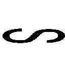

| 飛べない蝶と空の鯱 ～たゆたう島の郵便箱～ (ガガガ文庫) | |
| 手島史詞 | |
| (2012) | |
小学館ｅＢｏｏｋｓ
飛べない蝶と空の鯱 ～たゆたう島の郵便箱～
手島史詞
イラスト 鵜飼沙樹
登場人物
ウィル Will
軍学校に通いながら、武装郵便屋「蝶と鯱」を開業。十七歳。
ジェシカ Jessica
「蝶と鯱」でウィルの相棒を務める少女。十五歳。高所恐怖症。
ヒルダ Hilde
見た目は十三歳くらいの少女。「蝶と鯱」の得意客であるが、正体は謎。
ポールマン Pohlmann
警察官。罪人〈災禍〉と、彼の起こした過去の事件を追っている。
バード Bird
配達の途中で偶然出会った武装郵便屋。
「──空の下には、何があるのかな」
オォン、オォンと、足下から飛行船の不気味な駆動音が伝わる。
手すりにしがみついていなければ、子供の体など容易く攫われてしまいそうな強い風が吹き付ける。雲を見下ろすほどの高度では風も冷たく、嗅覚が麻痺して鉄や油のにおいも感じられない。
そんな甲板の上で、物怖じした様子もなく翠色の髪を払い、小さな女の子がそんなことを言ってきた。
「空の下って......そんなの、雲界以外に何があるっていうんだ？」
少女のそんな翠色の髪に見惚れながら、少年は訊き返した。長くて、不思議な色の髪だ。仄かに光っているようにも見える。
甲板から見下ろす世界は、目が眩むような白に染まっている。陸や人造物のようなものは何一つ見当たらず、雲のように見えるそれも〈霧〉と呼ばれる気体だ。じっと眺めていると、広大すぎて近いのか遠いのかさえあやふやになってくる。
空は、二つに割れている。
天高く見果てぬ群青に広がる〝蒼界〟と、その下を深き白銀に覆い尽くす〝雲界〟だ。
「ううん。雲界のそのさらに底──空の最果て」
「さあ？ 考えたこともないけど、そもそも底なんてあるのかな？」
女の子の突拍子もない言葉に、ウィルはやはり困った顔で首を傾げた。
その日、ウィルは父の仕事で大型飛行船に乗せてもらっていた。軍人である父は船の護衛や遠征などで、長期間帰ってこないことが多い。早くに母親を失ったウィルを不憫に思って、今回に限り同じ船に乗れるよう、取り計らってくれたのだ。
もっとも、そんな事情を知るのはもっと大きくなってからの話で、このときはただ飛行船に乗れたことを無邪気に喜んでいた。
そうして船内を探検していて、ウィルはこの女の子に出会った。
五、六歳くらいだろうか。七歳のウィルよりも少し年下に見えたが、女の子は初め、泣いていた。
どう話しかけても泣きじゃくるだけで、返事はなかった。もしかしたら、外国の子で言葉が通じないのかもしれない。
困り果てて、ウィルはこう言ってみた。
──綺麗な髪の色だね──
女の子は、綺麗な髪の色をしていた。緑柱石のような翠色で、よく見ると淡く発光しているのが分かった。
耳を疑うように、女の子は顔を上げた。瞳は青玉のような藍色で、紅く染まった頰は真珠のように艶やか。まるで宝石でできているようだった。
「そんなことを言われたのは、初めて」
ようやく、会話が成立した。
話を聞いてみると、女の子は今まで外出を禁じられていたらしい──あとになってから考えると、彼女は身分のある子のようだった──だが飛行船などという好奇の塊の中で、この年齢の子供にじっとしていろというのも無理な話だ。
それで部屋を抜け出したものの、迷子になったらしい。
ウィルは、そんな女の子を船内探検に誘った。
よほどの金持ちでもそうは乗れない飛行船で出会った、不思議な女の子だ。この子は迷子なんですと言って、大人に相談するような面白味の欠片もない選択肢は、微塵も浮かびはしなかった。
大人の目を盗んで動き回る、という点も良かった。好奇心と背徳心の両方が刺激された。
そして今、二人はこうして甲板に行き着いたところだった。
「空に底があるなら、見てみたい」
「無理だよ。雲界に潜って帰ってきた人なんていないっていうよ？」
女の子の発言に、ウィルは苦笑した。七歳児でも知っている常識だ。
雲界から顔を上げると、日が傾き始めた空にいくつもの点が浮遊していた。逆光でも、その多くが石でできているのが分かる。苔のような緑に覆われていて、上部には竹林のように細長い〈塔〉が立ち並んでいた。
〈島〉だ。
この距離では小石のようにしか見えないが、その一つ一つに何万、多いところになると何百万という人々が生活していて、その生活を支えるだけの産業と住居が混在している。
空をたゆたう〈島〉に居を置き、大型飛行船で〈群島〉から〈群島〉へと長距離航界にまで手を伸ばし、人々の生活の場は限りなく広がり始めた。現在の人類はかつてないほどに繁栄しているといえた。
それでも、この広大な空の主は人間ではなかった。
人よりも高く、速く、遠くまで、美しく、凶暴に舞う雲界の住人が存在するのだ。
人が舞うことを許された空は、この二つに裂かれた空の半分──蒼界と呼ばれる、上澄みの空だけだ。
僅かにでもその境界──雲界という深きもう一つの空に近づこうものならば、立ちどころに真なる空の主──霧妖の餌食となってしまう。
この飛行船とて、霧妖が寄りつかない高高度を飛行できるから、無事を許されているというだけの話なのだ。〈島〉よりも高度を落とせば、瞬く間に雲界の主によって撃墜されてしまうことだろう。
女の子はつまらなさそうにため息を漏らし、それから突然声を上げた。
「見て、翼舟！」
「え、どこ？」
目を懲らすと飛行船の遥か下方、雲界と接触しそうな高度に、二つの点が飛んで見えた。
翼舟──霧鍵式で空を舞う、一人乗りの航空機械だ。
──目がいいんだな......。
ウィルはかなり視力がいい方だ。そのウィルでも言われなければ気づかない小さな点に、女の子は気づいたのだ。その視力に感服しながら、二機の翼舟の行方を目で追った。
「軍隊、じゃないな......。なんだろう？」
「〈渡り鳥〉よ。雲界を渡れる人間なんて他にいない」
〈渡り鳥〉の名前は、ウィルも知っていた。
銃機槍と呼ばれる武骨な銃剣と、生身の体が剝き出しの翼舟に命を預け、霧妖の領域である空ですらも渡る、航界の専門家だ。
彼らを危険に駆り立てるのは、冒険心や自己顕示欲ではない。
この空で、人と人とが言葉を交わす手段は限られている。一歩でも〈島〉を出た先には人より上位の存在が跋扈しているのだから。
そんな空の彼方に、〈封書〉をはじめとする郵便物を届けることができるのが、彼ら──武装郵便屋〈渡り鳥〉だった。特に〈封書〉は民間人が頼ることができる、唯一の連絡手段でさえある。
眼下を飛ぶのは、そんな〈渡り鳥〉の二人組だった。
「あんなに低いところを飛んで、大丈夫なのかな......」
「大丈夫なわけがない。でも、あの人たちはそうやって〈封書〉を運ぶの」
話している間に、赤く染まった雲界に斧のような〈霧〉の飛沫が立ち上がった。それは雲界を斬り裂く剣のようにも見えた。
「雲界に潜った！」
「ああやって加速するの」
女の子も身を乗り出し、興奮して叫んだ。
翼舟は雲界に潜ることで推力を得て、加速する。その最高速度は飛行船をも上回るという。
二人でその光景を見下ろしていると、やがて〝それ〟が姿を現した。
「上がってきた」
「来るわ！」
浮上した翼舟を取り囲むように、いくつもの飛沫が上がった。
「霧妖だ......」
遠目に見たそれは、黒い鎧か何かのようだった。
硬い甲羅に覆われ、胴には複数の関節を持ち、航空機械の翼舟と並ぶ巨体と、人を一呑みにできるほど巨大な顎。弾丸のような姿で、翼はない。
ウィルは寒気を感じた。
一体どのような力で飛行しているのかさえウィルには分からないが、ただそれは明らかに翼舟よりも速かった。
無数の霧妖は、翼舟の存在を許さないように飛びかかっていく。
「一人、逃げるわ」
翼舟の一機が高度を上げて雲界を離脱する。逃げたのだ。きっと、そちらが郵便物を積んでいるのだろう。
霧妖は逃げた翼舟には興味を示さず、上昇せずに残った一機へと飛びかかる。翼舟は懸命に機体を左右に振って猛攻を凌ぐが、とうとう霧妖の一体に捉えられた。
「駄目だ、墜とされる！」
ウィルが悲鳴を上げたときだった。
墜とされそうな翼舟のすぐ側で、火線が弾けた。追撃していた霧妖はそれをまともに受け、ズルズルと速度を落とした。
撃ったのは逃げたと思われた機体だった。上昇して、抜け目なく銃機槍の狙いをつけていたらしい。一機が囮になることで、もう一機が他の霧妖を狙い撃つ役目だったのだ。
やがて霧妖は翼舟から離れていった。
「凄い......！ 振り切った」
女の子が、歓声を上げた。
霧妖の追撃を振り切った翼舟は、悠然と飛び去っていった。彼らの速度はすでに飛行船を上回っていた。
──人って、あんなふうに飛べるのか......！
そう考えると、いても立ってもいられなくなった。
「よし！ 俺も空を飛ぶぞ。翼舟があれば、人間だって霧妖と戦えるんじゃないか！」
「あれは〈渡り鳥〉だからできることよ。誰でもあんなふうに飛べるのなら雲界はとっくの昔に翔破されてる」
「む、......でもそれが俺にできないって理由もないだろ」
断固としたウィルの口調に、女の子は意外そうに濃紺の瞳を瞬かせた。
「そうまでして飛ぶ理由があるの？」
「空の最果てが──雲界の底が見たいんだろう？ だったら俺が連れていってやるよ」
ウィルは今、自分が最高に格好いいことを言ったと思った。
しかし、女の子は美しい容姿にそぐわぬ冷めた眼差しを向けてきた。
「嫌よ。自分で飛べなければ意味がない」
どこまでも、無愛想な娘だった。
フラれたような気分でワナワナ震えていると、女の子はからかうように桃色の唇を歪めた。その表情は、それまでの幼さが噓のように大人びて見えた。
「変な人。今のを見たあとで、まだ空が飛びたいの？」
「あんなのを見たあとだから、なおさら飛びたいんじゃないか」
そう答えると、女の子は満足そうに笑った。
「なら〈渡り鳥〉になるといい。たった一枚の手紙のために命を懸け、そして届ける〈渡り鳥〉。そうしたら、今の話を考えてあげる」
「はあ？ お前、今、自分で飛べないと嫌だって言ったじゃないか？」
「どこかおかしい？ 〈渡り鳥〉は独りでは飛べないわ」
ようやく言葉の意味が分かって、ウィルは大きく頷いた。
「いいぞ。約束だ。いっしょに飛ぼう。空の最果てまで」
「約束よ？」
「男に二言はないんだ。父さんが言ってた」
胸を張って答えると、女の子はどこか羨むような顔を見せ、それからこう呟いた。
「あなたが〈渡り鳥〉になったら、あなたのために歌ってもいい」
「歌うって？」
淡く微笑むと、女の子は目を閉じて胸に手を当てた。
『──真白な海は深く(aikait ed nei t gainkuer,)──私たちは彷徨っていた（aure aj:sm aineht)──』
t gainkuer,)──私たちは彷徨っていた（aure aj:sm aineht)──』
『──星の灯を見失い（ka:rli aeis ed st:rsis)──遠い日の夢は幻想と消ゆ（eju:m ed st:rsis,t:rknt n:ges)──』
鈴を転がすような、澄んだ歌声だった。
相変わらず強く吹きつける風に乗り、オォンと鳴く飛行船の機械の音にも溶け込み、日が沈み始めた蒼界へ、朱く染まった雲界へ、どこまでも響いていく。裂くような荒々しさではなく、染み入るような静かな音色で。
異国の言葉だろうか。聞き慣れない言語の詠で、それを歌う女の子は見た目の年齢からは考えられぬほど美しく、そして精練された唱歌を奏でていた。
聴き入っていると、軍人らしき男が血相を変えて駆け寄ってきた。ウィルには聞こえない小さな声で何事かを囁かれ、女の子は少し寂しそうな顔をした。
「続きは、あなたが夢を果たしてから──約束、忘れないで」
「お、おう」
船員に手を引かれる女の子に手を振りながら、ウィルは女の子の名前も訊いていなかったことを思い出した。
──まあ、また会ったときに訊けばいいか。
数日後、ウィルは女の子と再会することなく、任務を完遂した父と共に帰郷した。去り際に、甲板に彼女を見かけた気がしたが、言葉を交わす機会はなかった。
そして、ずいぶんあとになってから、その話を聞くことになる。
ウィルが船を下りた翌日、その飛行船が、女の子を乗せたまま墜落したことを。
ゴンッ──頭部を襲った鈍い衝撃で、ウィルは目を覚ました。
「ウィル、そこで何をしているの？」
目を開けると、不機嫌そうな顔をした少女が見下ろしていた。髪は月光のような金色で、薄紫の瞳は使えない道具でも見るかのような眼差しだった。
その向こうに広がっているのは、インクと油のにおいにまみれた、狭苦しい事務所の天井だ。
精神と肉体の双方から襲ってくる頭痛を堪えながら身を起こし、ウィルは気だるそうなため息を漏らした。
──変な夢、見たな......。
十年ほど昔だったろうか。父が乗せてくれた飛行船で出会った、名前も知らない女の子の夢だ。ウィルは彼女と一つの約束を交わしたのだ。そして────
「いやらしい顔をしている」
夢の余韻に浸る間もなく、少女の悪罵が耳朶を打つ。
目を向けると少女の手には金属で補強された郵便鞄があり、それが頭部を襲った衝撃の原因だと分かる。配達の時間が近いのだろう。
「なあ、ジェシカ。配達なのは分かるけどよ、なぜ俺は殴られたんだ？」
「分からないの？」
「俺だって、昼間は軍学校の訓練で疲れてるんだ。ちょいとうたた寝してただけで、そんなごついもんで殴られる理由が分からないね」
少女が不快そうに眉を揺らした。
「私のソファを使っているからよ」
「そっちなのっ？」
ウィルが寝転んでいたのは三人掛けの大きなソファだった。いつから彼女の私物になったのかは不明だが、確かに事務所にいるとき、少女はだいたいこのソファを使っていた。
「配達物を受け取って帰ってみれば、ウィルが私のソファを寝息と寝汗と寝涎で汚していた。私の心の広さでも許容できない」
「落ち着けよ。寝息で汚れはつかない。そうだろう？」
「いいから早く洗浄して」
「洗浄が必要なレベルかよっ？」
向こう脛を蹴飛ばされ、ウィルはソファから追い立てられた。
納得はいかなかったが、配達の時間なのも事実だ。ずっしりと重みのある、しかし確かな防寒性を持った上着を羽織り、ウィルは事務所の奧へと続く扉に手をかけた。
そこに、一機の舟が安置されていた。
「今日もよろしく頼むぞ」
翼舟だ。頼もしい相棒の船首を、ウィルはそっと撫でた。
黒く塗られた船体。左右に伸びるガラスのように透けた翼。船首からはあたかも生き物を扱うかのような手綱が伸びており、船尾には蝶と鯱の紋章が刻まれている。
〈渡り鳥〉が雲界を渡るために与えられた翼だ。
あの女の子との別れから十年、ウィルはまだ駆け出しではあるが、〈渡り鳥〉の事務所を開いていた。
格納庫の扉を開くと、清々しい風が吹き込んでくる。
──今日は、気持ち良く飛べそうだな。
自然と笑みをこぼしたところだった。
「運ぶの」
ドサリと、腕の中に重たい郵便箱が叩き込まれた。
「ウィル、もう少し寄せて」
「はいはい」
「寄せすぎ。私を落とすつもり？」
「あー、悪い」
「ウィルは下手。加減が下手。絶望的に下手。犬猫にも劣る。風というものが分かってない」
「そこまで言うかなっ？」
悲鳴を上げるウィルは、この辺りでは少し珍しい黒髪だ。細身ながらもしっかりとした体格で、年のわりには隙のない物腰。モノクロームの絵画から抜け出したような不思議な雰囲気を持っているが、少女の暴言に涙ぐんでいるあたりは、やはり年相応の顔である。
振り返ると、前後に並んで翼舟に跨っているウィルの後ろで暴言を吐いた少女は腕を伸ばしており、ちょうど手紙を投函し終えたところだった。
「綺麗なポスト」
「ん......、まあ、綺麗だな」
郵便受けは鳥かごを模した愛らしいものだった。〈島〉における情報伝達手段は限られており、手紙が主流だった。それゆえ郵便受けも趣向を凝らされたものが多い。
だが、ウィルが目を奪われたのは別のものだった。
背中に伝い落ちる金色の髪。楽しそうに郵便受けを見つめるのは、不可思議な薄紫の瞳。透けるような白い肌に色の薄い桃色の唇。手荒く触れれば折れてしまいそうな細い首と手足。どこか浮き世離れした容姿の少女はジェシカ。白を基調としたクローク状の外套と、虹色に輝く蝶の髪飾りが実に似合っていた。
手紙を投函した細い指が、そのまま緩やかな弧を描いて自身の髪のひと房を掬い、クルリと一回転させる。機嫌が良いとき、ジェシカはその金色の髪を指に絡めていじる癖がある。その仕草に見惚れていると、怪訝そうな目を返された。
「何見てるの？」
「い、いや、普通の手紙ばっかだなと思ってよ」
現在ウィルたちが配達しているのは、事務所を開けば必ず〈渡り鳥協会〉から回してもらえる雑務的な職務だった。わざわざ武装郵便屋が配達するべきものではない。
「事務所を支える大切な仕事」
「そりゃそうだけど、来るべき〈渡り〉に備えて装備を点検したり、斡旋に出向いたり......」
「私は先月に支払われるべき正統な報酬を受け取っていない」
「すみませんでした。きびきび働きます」
「分かれば良い」
ジェシカはフフンと満足そうに笑った。
──こういうところ、見てて飽きないよな。
無愛想な口調と態度。常に仏頂面のジェシカだが、笑うときは本当に愛らしく笑う。
そんな少女を微笑ましく眺めながら、ウィルは「お」と声を漏らした。
「ここだ」
ウィルは肩に提げた郵便鞄から一通の封筒を取り出した。これだけ別に保管していたのには、もちろんわけがある。
塔のように空に伸びる建物の一角に翼舟を近づけると、窓は開いていた。その窓に、物憂げな表情で街並みを見下ろす、妙齢の婦人の姿があった。
婦人はウィルの翼舟に気づくと、僅かに表情を硬くした。
「ロックフォード様のお宅ですね？ 〈封書〉をお届けに来ました」
ウィルが頭を下げてそう確認を取ると、婦人は身を強張らせて頷いた。あたかも自分の罪状を告げられるかのように、あるいは全力を尽くした試験の結果を待つかのごとく。
〈封書〉はただの紙切れではない。
噓偽りのない、自分の欠片として刻み込んだ記憶そのものだ。それゆえ、ただ郵便受けに投函すればいいというものではない。
受け取りのサインをもらってから、ジェシカが〈封書〉を手渡す。婦人はどこか躊躇うような仕草を見せたが、ウィルたちが飛び立つのを待ちきれずに封を破っていた。
「──ウェイクアップ──」
そんな呼びかけが聞こえ、肩越しに振り返ると、婦人は目を閉じて〈封書〉を抱きしめていた。
一体どのような記憶が届けられたのか、それはウィルたちが知るべきことではないが〈封書〉を抱く婦人は、先ほどまでの憂いに翳った表情ではなかった。よほどの心配ごとでもあったのか、僅かに震えた唇が「良かった」と呟いたように見えた。
その目尻から一滴の涙が れたのが見えてしまい、ウィルは慌てて視線を前に戻した。
れたのが見えてしまい、ウィルは慌てて視線を前に戻した。
「良い知らせだったみたい」
「ジェシカ、客の顔をいつまでもジロジロ見るもんじゃねえぞ」
「ウィルほど露骨には見ていない」
ジェシカの減らず口に閉口しながらも、自分が配達した〈封書〉で幸せそうな顔が見られるのは、素直に嬉しかった。
──あとは、これでもう少し〈渡り〉の配達が増えればなあ......。
ウィルの事務所は従業員が二人しかいない。一人はウィルで、もう一人はジェシカ。しかもウィルはまだ学生で、ジェシカはそれよりもさらに年下だ。
経営は、いつも赤字ギリギリだった。
敷地の限られている〈島〉の中では、建物は必然と天高く積み上げられる。あたかも果て無き空を追い求めるように。
また〈島〉という土地は常に強風に晒されているため、風化対策としてどの壁にも念入りに白の漆喰が塗り込まれている。街の外まで出ると城塞のような防壁が聳えているが、これも外敵ではなく強風から作物や草木を守るためのものだ。そもそも本当の意味での外敵が出現すれば、防壁程度ではなんの役にも立たないのだから。
向かいから飛翔する翼舟を避けつつ、ウィルは頭上を仰ぎ見る。
真っ白な〈塔〉たちは空を迷路のように切り出し、翼舟のための通路を模っている。そこに障害物のように無数の橋が架かっており、記号と数字が刻まれている。住所表示だ。
そしてそこに並ぶ窓のほとんどには、表札のように郵便受けが飾られていた。先ほどジェシカが投函していた郵便受けも、ここに並ぶものの一つだ。
空の迷宮を抜けながら、ウィルは徐々に高度を上げていった。
「どこへ行くの？」
「今日の配達は終わったろ？ 息抜きだ」
聳え立つ〈塔〉の頂上には、豪華な一軒家が建てられているものもある。強風に煽られながらも〈塔〉の頂上を追い抜くと、とたんに風が止んだ。
どこまでも広がる青。手を伸ばせば触れられる距離に雲が浮かび、その向こうには雲とは異なる物体──石と土でできた〈島〉が漂っていた。
耳を澄ませば、風に乗ってゴォン、ゴォンと機械の重たい音が聞こえてくる。〈島〉の航路を制御しているのは、鉄と歯車でできた霧鍵機関だ。それが〈霧〉を動力に回転する音である。
眼下に漂うハイフォニアの街は、城壁のような巨大な壁に囲まれていた。その城壁には、大型の風車が埋め込まれており、ウィルの位置からは見えないがその下には〈霧〉を取り込むための管がぶら下がっているはずだ。
そんな〈島〉の下方には目が痛くなるような白の洪水が広がっており、雲界の流れに沿って、ハイフォニアもゆっくりと流れていることが分かる。
「わぶっ？」
雲界を見下ろしていると、ひやりとした感覚とともに、目の前が真っ白になった。雲に突っ込んだらしい。
今日はよく晴れている。雲も小さなもので、すぐに視界が戻った。
「髪が濡れた」
雲は水蒸気の塊だ。中に潜れば少しは湿っぽくもなる。雨に打たれるほどではないにしろ、女子ならば気にするのも仕方がないだろう。
「あの、痛いんだけど？」
ただ、非難がましい声を上げたジェシカは、ウィルの腕を痛いほど摑んでいた。肩越しに目を向けると、彼女は頭を腕に押しつけて小刻みに震えていた。
思わず守ってあげたくなるような怯えぶりなのだが、口から吐き出されるのは愛想の欠片もない悪罵だ。
「屈辱。ウィルは私を苦しめることに快楽を感じている」
「人聞きの悪いこと言うなよな！ 訓練したいって言ったのお前じゃん」
「私はウィルの訓練をすると言った。私の訓練をするとは言ってない」
見事に自分勝手な言葉に、ウィルは啞然とした。
「いやほら、お前だって困ってるんだろ？ だったら訓練してだな......」
「訓練で治るなら私は苦労していない」
「そこは何か努力してみようよっ？」
「だから私のためにウィルを鍛えている」
「俺の努力はお前のためなの？」
苦笑しながらも、ウィルは高度を落としていった。
──この高さはまだ無理か......。
ジェシカは、半年前にウィルと出会ったとき、とある事件から一人では飛ぶことができなくなった──だから彼女は文句を言いながらも、ウィルの後ろに跨っている。
〈渡り鳥〉のくせに風が読めず、操縦が下手なウィルと、高所恐怖症のジェシカ。
ひとたび空に出れば、死の危険と隣り合わせの〈渡り鳥〉に、そんな足手まといと飛びたいという物好きはいない。だが、それでも二人で欠点を補い合えば飛べる。
だから、誰も拾ってはくれない者同士、ウィルとジェシカは共にいるのだ。
「ウィル、前！」
「え？」
考え事をしていたら、目の前に別の翼舟が迫っていた。
──ぶつかる！
慌てて手綱を引くが、到底間に合わない。身を強張らせた瞬間──ウィルは、相手の機体を見失った。幽霊のようにフッと消えたのだ。
「消えた？」
「後ろ」
ジェシカの不機嫌そうな声に振り返ると、なるほど確かに一機の翼舟が浮遊していた。船体から翼に至るまで黒で統一された見事な機体だ。衝突の瞬間、スルリと下降して避けたのだ。
「すげえな......」
並の腕でできることではない。見惚れながらも、ウィルは手綱を振るって素早く翼を開閉させた。今の衝突未遂は完全にウィルの不注意だった。それに対する謝罪のサインだった。
黒い機体は翼を上下に小さく揺らして応えると、悠然と去っていった。
「格好いいな。この時間からだと、夜間飛行か？」
黒い機体は〈島〉の外へと飛んでいった。紋章は確認できなかったが〈渡り鳥〉だろう。
「なあ、今の俺ならどこまで飛べると思う？」
「今みたいな無様な腕じゃ話にならない」
──たまには褒めてくれてもいいだろうに......。
ため息を漏らしながら、ウィルは空を見下ろした。
「やっぱり、空の最果ては遠いな......」
雲界を眺めていると──バサリ──不意に視界に影が差した。
「相変わらず、無様ね。〈渡り鳥〉の面汚しだから、さっさと辞めてくれない？」
見上げると、そこには青の翼舟が浮遊していた。重力の頸木に縛られぬ舟は、その自由を謳歌するかのごとく優雅に翼をはためかせている。
船尾に翼在る獅子の紋章が刻まれていたことで、それが誰なのか分かった。
「飛行中に人の頭上を取るなよ。マナーの悪いやつだな、ケイト」
翼舟で他機の頭上を取ることは侮辱だとされている。空戦になれば頭上を取った方が有利だからだ。ただ見下ろされることが不愉快だという理由もあるが。
ウィルが批難の声を上げると、ケイトはゴーグルを外した。
ゴーグルの下から現れたのは、少女の顔だった。角張ったメガネをかけているが、年はウィルと変わらない。一応、美人と呼んでも差し支えのない顔立ちのはずだが、ゴミでも見下ろすような眼差しがぶち壊しにしている。
ケイト＝ブリュンヒルデ──ハイフォニア最大の勢力を誇る武装郵便屋〈翼獅子〉の〈渡り鳥〉だ。ウィルとは同じ軍学校に通っている。
「あら、ごめんなさい？ てっきり墜落しかけてるのかと思って上に避けたのよ」
クスクスと嘲笑を漏らすと、ケイトはウィルの背中にしがみつくジェシカを睨め付けた。
「お荷物なんて抱えてるから、あんな無様な飛び方しかできないのよ」
「おい、訂正しろ。ジェシカは口も性格も最悪だが荷物じゃ──ぎゅうっ？」
首を絞められた。
「私が抱えられてるのじゃない。私がウィルを飛ばせているの」
「ああ、そうだったわ。あなたたちは、二人揃っていないと満足に飛ぶこともできないのだったわね。それでよく空の最果てを目指すなんて言えたものね」
空の最果てを目指す──その夢に対して、誰もがケイトと同じ反応を示す。特に、ウィルとジェシカは独りでは飛ぶこともできないのだから。
ジェシカに侮蔑の目を向けると、ケイトは胸を強調するように腕を組んだ。
「〈渡り鳥〉が運ぶのは、ただの手紙ではないわ。記憶の欠片である〈封書〉なんだから、私たちは死んでも配達を遂げなければならない。浮わついた理由で飛ばれるのは迷惑だわ」
武装郵便屋が命を懸けてまで雲界を渡る理由は、〈封書〉にあった。
情報伝達の手段として手紙に頼るうちに、人はそれをただ文字と絵を記す以上のものに発展させた。空間や物体に残る残留思念から過去の一場面を切り出し、保存し、刻まれた残留思念を再生させる霧鍵式──それが〈封書〉だ。
その人が何を見て何を聞き、何を感じ、何を思ったのか、その全てを抜き出し、過去であるはずのその瞬間を〝今ここに在る〟かのように体験できる。先ほど〈封書〉を受け取った婦人がそうであったように。
だから、〈渡り鳥〉が運ぶ郵便物の中でも〈封書〉は特別な存在だった。
「そんなザマでは、雲界に出ても墜ちて死ぬだけよ。〈渡り鳥〉を続けたいなら、つまらない意地を張っていないでうちに入ったら？ バディもいないくせに、いつまでも〈渡り鳥〉が続けられるとでも思ってるの？」
機体の異状、搭乗者の負傷や不調、空でのトラブルは多くの場合、死に直結する。
そしてこの空の主は人ではない。
そこを渡り郵便物を運ぶ〈渡り鳥〉は、最低限の安全を守る......というよりも〈封書〉だけは確実に届けられるよう、バディを組んで飛ぶことが義務づけられていた。
「バディならちゃんといる」
首を絞めているジェシカの腕──今の今まで締められ続けた──からようやく逃れ、ウィルが睨み返すとケイトは怯んだように息を呑んだ。
「......それに、俺にはまだ、終わってない配達がある」
睨み合っていると、翼舟がもう一機近づいてきた。
「やめなよ姉ちゃん、ウィルが困ってるだろ？」
「お黙り、ジム」
ジムと呼ばれたのはケイトのバディだった。性格はまったく正反対な二人だが、年は同学年で彼らは姉弟だった。二卵性の双子なのだ。
ジムに注意され、ケイトは苛立たしそうに舌打ちを漏らして手綱を振るった。ウィルを見下すように一度旋回してから、ハイフォニアの街に降下していった。
「悪いなウィル」
「いや、いつものことだし」
「じゃあ、俺、まだ今日の業務報告終わってないから」
「ああ」
「ジェ、ジェシカも、またな！」
ウィルの背中で未だに震えるジェシカからの返事はなかったが、ジムは満足そうな顔で飛び去った。
武装郵便屋〈蝶と鯱〉事務所──鉄製の柵に囲まれたその建物は、小さいもののしっかりとした一戸建ての建物だった。かなりの街はずれで多少の不便はあるものの、街中に聳える〈塔〉を考えれば、かなり良い物件である。
緑に統一された屋根瓦や、その頂点でカラカラと回る蝶の形をした風見鶏は、ジェシカの趣味だ。この少女は、事務所の経理を掌握すると同時に、このような改築を始めた。
ジェシカが言うには────
「郵便屋は外観にも気を遣うべき」
らしい。
飛行訓練を終えてその事務所に戻ると、そこには見知った顔が待っていた。
「遅いのです。配達にどれだけ時間をかけているのです」
それは幼い少女だった。左右で束ねた髪も、瞳も血のような紅だ。黒いフリルで飾ったドレスの色は夜の色で、日差しを嫌うように大きなこうもり傘を差している。真っ赤な紅を引いた唇から覗く犬歯は、奇妙なほど長く見えた。
「悪いなヒルダ、待ってたのか？」
十三歳前後に見える容姿とは裏腹に大きな態度。彼女の名はヒルダといった。ウィルも彼女が何者なのか、名前以外は何も知らない。
ただ、物好きなことにときおり〈渡り鳥〉の仕事を持ちかけてくれるのだ。それも先ほどまでこなしていた雑務とは別格の配達──つまり〈島〉の外まで飛ぶような〈封書〉の配達だ。
だから、零細企業のウィルたちにとって、ヒルダは貴重な大口顧客でありお得意様のはずだった。いくつかの問題さえなければ......。
「営業時間は終了してる。私たちが何をしようと自由」
「そなたたちの仲が睦まじいのは微笑ましいことですが、醜聞も気にかけるよう、助言しておくのです」
「仲睦まじい？ 私たちの間にあるのは、未払いの報酬とその支払い義務だけ」
「ここに明確な上下関係が存在しているっ？」
ウィルが悲鳴を上げると、ヒルダがクスクスと笑みをこぼした。
「お遊戯は看板を下げてから──お粗末な飛び方をする〈渡り鳥〉に、依頼を頼む物好きは少ないのです」
今まで自分が乗っていた翼舟を見て、ウィルは低く呻いた。──お粗末な飛び方──確かに、未だ訓練中のウィルたちの操縦は、お世辞にも上手いとは言えない。そして空を飛ぶ以上、この狭い〈島〉の中で目撃されないことも難しい。
蝶と鯱──事務所の紋章が刻まれた翼舟で、その醜態を晒していたのだ。
「それでここにいる物好きなあなたは何なの？ 愚者なの？」
身も凍るような声音で突き返したのはジェシカだ。
そう、問題のひとつめ──ジェシカとヒルダはどうにも相性が悪い。どちらも口が悪いから、顔を合わせると大体ケンカになる。
「お前ら顔を合わせるたびにケンカするなよな。あとジェシカ、ヒルダは客だ」
正論だと認めたのだろう。ジェシカはそれ以上は言わなかった。これでヒルダの方が何も言わなければ収まるのだが、悲しいことにそういった流れには繫がったことがない。
「今日は、いつものように遊ぶ暇はないのです」
ところが、例外が初めて起こった。
同時に、寒気のような怖気のような感覚が走った。白々しいヒルダの笑みに、言いしれぬ違和感を覚える。以前も同じような感覚に囚われたことがあった気がするが......。
身構えるウィルをよそに、ヒルダは続けてこう言った。
「配達してもらいたい〈封書〉があるのです」
「それが危険物でない保証は？」
そして──ふたつめの問題。ヒルダの持ちかける〝配達〟は必ずといっていいほどトラブルに巻き込まれる。
ジェシカも警戒したのか、冷静な声で指摘した。
「おかしなことを言うのです。そなたたち〈渡り鳥〉は危険と無縁だとでも？」
「無縁でないからこそ、不要な危険は排除するもの」
「たかが〈封書〉一通でそこまで尻込みしていて、仕事になるのですか？」
「あなたと関わると、いつも〝たかが〟では済まない目に遭う」
それに関しては、ウィルも同意見なのでフォローのしようがない。
〈封書〉とは記憶の欠片であり、記した本人の分身でもある。力の在る霧鍵士の〈封書〉ともなれば、その力の片鱗に触れられるわけでもあり、場合によっては力をそっくりそのまま手に入れることもできるという。過去の霧鍵士にはそれで力を奪われた者もいれば、逆に技術の継承に〈封書〉を記したりもする。
ヒルダはこの幼い容姿とは裏腹に、力の在る霧鍵士らしい。一度だけだが、彼女が軍艦も破壊するような軍用霧鍵式をぶっ放したところを見たことがある。詳しい経緯は知らないが、相手はヒルダに向かってこう言ったらしい。
──吸血ババア──と......。
そんな彼女が何者なのか、それを知る者は恐らく探せばいるのだろう。ただ、それを語る者はいない。知っている者は、揃って口を閉ざしてしまうのだ。
そんなヒルダが持ちかける〈封書〉というものも、やはりその名前だけで狙われるに値するものらしい。銃を使わないで済んだことは一度もない。
先日届けた〈封書〉は、受取人が凶悪犯で危うくウィルたちまで殺されそうになった。あるときは配達中にマフィアに追われたこともある。ジェシカの言うことはもっともなのだが、ここでせっかくの仕事をふいにするのもまた面白い話ではない。
「いやほら、ジェシカ？ 仕事は仕事だしさ」
「なら〈封書〉の内容を確認させて」
──それはマズイだろ。
〈渡り鳥〉には協会が定める三か条があった。
商人よりも速やかに──商人は出荷を遅らせない。〈渡り鳥〉は何者よりも速く届ける。
警官よりも誠実に──警官は法を犯さない。〈渡り鳥〉は何者からも〈封書〉を守る。
軍よりも確実に──軍人は死を恐れない。〈渡り鳥〉は死しても〈封書〉を届ける。
〈渡り鳥〉はときとして命をなげうってでも顧客の秘密を──〈封書〉の内容を、何者からも守らなければならないのだ。
ヒルダが紅い双眸を鋭く細めた。
「そなたは無粋なのです。客のプライベートを覗くつもりなのですか？」
「危険がないなら、見られても問題ないはず」
「プライバシーの問題なのです。恋文を見られて、何も感じぬ乙女はいないでしょう？」
「そんなもの書かないから分からない」
「──そうでしたね。そなたには仕事意識以前に、情緒が欠落しているのです」
クルクルと大きな傘を回してジェシカの顔を覗き込むと、ヒルダはからかうような笑みを浮かべた。
「そんなことでは、異性に口説かれたこともないのではありませんか？」
ジェシカが目に見えて顔を紅くした。
「あなたには関係ないこと！」
「ジェ、ジェシカ、落ち着けって。今のはお前が悪い。ヒルダ、お前もからかいすぎだ」
ケラケラと笑い声を漏らし、ヒルダはドレスの裾を翻して飛び退いた。
「小妹は一般常識を説いただけなのです」
「この女は私を小馬鹿にしてる」
地団駄を踏むジェシカを取り押さえつつ、ウィルはヒルダを睨め付ける。黒服の少女は肩を竦めると、どこからともなく一枚の便箋を取り出した。
差出人と宛名が記されている以外、文字は見当たらない。代わりに、便箋全体に奇妙な紋様が描かれていた。直線と円を組み合わせた不可思議な図形で、扉や門に似ている。
「少し遠方なのです。その分、手当ては弾むつもりなのです。受けてもらえますか？」
今度は真面目な口調だったことに、ジェシカもおとなしくなった。
「手当てとは？」
雲界を渡るに当たって、〈渡り鳥〉に仕払われる賃金に関しては距離と航路でおおむねの金額が決定されていた。そこから遭遇しうる危険も想定できるからだ。〈渡り鳥協会〉で定めていることなので、破ればウィルたちも罰金等など処分を受けることになる。
その上でヒルダが言う〝手当て〟とは、配達で必要とする装備の配給だった。こちらに関しては受け取ることに罰則は設けられておらず、使おうが売ろうがウィルたちの自由だった。
ヒルダは小さな手鞄をそのまま差し出した。
「これを与えるのです」
「おう......って、おい。なんだこの量？」
ウィルの収入では到底手が出ないような強力な弾丸が木製のケースに４ダース。なかには軍隊で運用するような強力なものもある。売れば、事務所の稼ぎ半年分は下らないだろう。
「料金の分だけ、急いでもらいたいのです」
「そりゃあ、〈渡り鳥〉は速さが命だけど......具体的には？」
ヒルダが示したのは空だった。夜の帳は下りており、満天の星と二つの月が浮かんでいる。
「二日後、二つの月が重なるのです」
「ああ〝重蝕〟なんだってな」
「ええ。月が重なる夜までに、その〈封書〉を届けてもらいたいのです」
数十年に一度、二つの月がピタリと重なる夜が来る。一般人にとっては稀少度の高い天体イベントでしかないが、霧鍵士にとってはかなり重要な意味があるらしい。
「月の満ち欠けは人の精神にも影響を与えると言われているのです。その月が一直線に重なる夜は、霧鍵式の精度にも著しく影響を与えるのです」
「それって何か事件が起こるってことだよな？」
「小妹はそのようなことはひと言も口にしていないのです」
しれっとそう言うと、そっと〈封書〉を差し出す。
──明後日までか......。
ウィルたちが住む〈群島〉はそれほど広範囲には広がっていない。二日あれば大抵の場所には届けられるのだが、ヒルダと関わって無事に航界できた記憶もない。
そしてこの〝手当て〟の量......必要だからよこしたはずだ。
──ハッ！ これは......前にヒルダが軍用霧鍵式をぶっ放したときの寒気だ！
ウィルに直接向けられた悪意ではなさそうだが、絶対に何か恐ろしいことが起こる──ヒルダはそれを知っているのだ。
──だけど、報酬としては魅力的だ......。
果たしてこのいかにもリスクの高そうな依頼、受けたものか断ったものか────。
「──引き受ける」
「なんで即決しちゃうかなっ？」
悩むウィルをよそに、ジェシカが勝手に返事をしていた。
「この仕事をふいにすれば、また私の報酬が支払われないことになる」
「ぐ、あ......いや、それは、その......」
「助かるのです」
意外にも、ヒルダの口から礼が返ってきた。
ジェシカも目を丸くしていたが、翼舟に設置された鞄から封筒を取り出した。こちらも一見、普通の封筒だが、開いた内部には〈封書〉とよく似た紋様が描かれている。〈封書〉は魔方陣に触れたものに作用する。それを遮断するため、〈渡り鳥〉が扱う封筒も特別なものなのだ。
〈封書〉を封筒に収めると、ジェシカはそれをウィルに突きつけてきた。
「切手」
「ああもう、分かったよ！ 届けるさ。ったく」
胸ポケットから小箱を取り出し、そこから小さな紙片を取り出した。縦長の長方形で、中央には青い蝶と鯱が描かれている。〈渡り鳥〉の中でもウィルの事務所を示す紋章だ。
この切手を貼ることで、〈封書〉配達の契約が成立する。
「武装郵便屋〈蝶と鯱〉──確かに引き受けたぜ」
受領印を押すと、なぜかヒルダは懐かしそうな、それでいてどこか寂しげな表情を浮かべた。
「どうかしたのか？」
「いいえ。なんでもないのです」
「そうは見えないけれど」
ジェシカからも言われ、ヒルダは仕方なさそうに答えた。
「少し、昔なじみのことを思い出しただけなのです」
──お前は昔なじみとかいる年じゃないだろう。
ウィルが苦笑すると、ヒルダが手招きをした。
「そうですね......。耳を貸すのです」
「なんだ？」
────を守って
「え──？」
耳元への囁きとともに、頰に柔らかいものが触れた。それを見たジェシカの眉が神経質に痙攣する。
それは、紛れもなく唇の感触だった。頰には口紅の刻印が見事に残されている。
「なっなななななナニやってんのお前っ？」
「何を狼狽えているのです。乙女の口づけは航界の祝福でしょう？」
「い、いや、そりゃそうだけどよ......」
昔は雲界に出るのは男と決まっていた。それゆえ女性からの口づけは最高の餞とされている。今でも大仕事の前には男女を問わず、験を担いで行われる風習であり、そう珍しいものでもない。もちろん、ジェシカからもらったことはないが。
年下とはいえ、女の子から口づけなどされたのは初めてでウィルは狼狽えた。
「いいですね？ 二つの月が重なる、重蝕の夜までに届けるのです」
クスクスと笑い声を上げる表情は、傘に隠れて見えなかった。ヒルダはクルクルとこうもり傘を回して去っていく。その背中は上機嫌にも見えたが、やはりどこか寂しそうにも見えた。
「相変わらず、わけの分からねえやつだな......」
半ば惚けてそう言うと、ジェシカが沈痛そうなため息を漏らした。
「変態。警察に連絡しなければ」
「ちょっ、ちょっと待て！ 今の、俺は何もしてないからな？」
「童女に手を出す犯罪者がいる」
「違うって言ってるだろうっ？ あとヒルダは童女ってほど幼くはないだろ」
悲鳴を上げるウィルをゴミでも見るように睨め付けたと思うと、ジェシカは不意に関心を失ったように空を見上げた。視線の先には、二つの月が浮かんでいた。
「おい、聞いてるのかよ......って、どうかしたか？」
「また、雲界を渡れる」
愛しい愛しい恋人でも偲ぶように、その声は切なげだった。そして二つの月を摑もうとするように、細い腕を伸ばす。
思わず見惚れそうになりながらも、ウィルは頷き返した。
「そうだな」
──約束だ。いっしょに飛ぼう。空の最果てまで──
ある女の子と交わした、たった一つの約束を果たすために〈渡り鳥〉になったのだ。
「──〈渡り〉かい？」
ヒルダと別れたウィルとジェシカは、不足品の買い出しに出ていた。代金を支払い、品物を受け取ると老いた店主がそう声をかけてきた。
「おう。よく分かるな」
〈渡り〉というのは、配達の中でもとりわけ〈島〉の外──つまり雲界を渡るときに使われる呼称だ。雲界を渡る配達ともなると、必然と〈封書〉の配達を示すことになる。
「その量の水なら、一人で四日は飛べる。二人なら二日か。〈渡り鳥〉がそれだけ買い込む理由は、一つしかないと思うね」
老齢の店主は、トントンと自分の腕を示す。つられて自分の腕に目を向け、ウィルは苦笑した。確かに自分たちは〈渡り鳥〉の配達着を着たままなのだ。
〈封書〉の届け先は、アプトフォルテという〈島〉である。距離にして八六四界里──ここハイフォニアからは〈島〉を三つ、四つ跨がなければならない遠方であり、店主の推察通り、片道で二日程度の航程だった。
──ランディス・ベルナール──
それが〈封書〉の宛先に記された名だった。一体、どんな人物なのか。
同じ〈群島〉内とはいえ、島が三つも離れていればほとんど交流はない。あるのはせいぜい商船による流通くらいのもので、住民同士がやりとりを交わすことなどまずない。
そんな遠くの〈島〉に、どうして〈封書〉を届けるのか。
──あいつ、本当に何者なんだろうな......。
ヒルダに関しては知らないことだらけだった。考え事に耽るウィルをよそに、店主はしゃべり続ける。
「〈渡り〉なら、バルトピアノ方面に抜けるときは気をつけろよ。航路にカテゴリーⅠが出たらしい。〈軍〉が掃討するのに、早くても一週間はかかる。死にたいのでなければ、迂回することを勧めるな」
店主の助言に、ウィルは絶句した。それはウィルが飛ぶ航路のど真ん中だった。
カテゴリーⅠ──軍隊に出動要請が下り、航路が封鎖されるレベルの霧妖だ。店主は掃討と表現したが、実際は霧妖が去るまで人が飛ばないように巡回する程度のことしかできない。
実際にカテゴリーⅠが本気で攻勢に出たなら、掃討どころか逃げ延びることすら困難なのだから。
頭を抱えていると、店主はなおも 話を続けた。
話を続けた。
「まあ、霧妖は避ければいいだけの話だが、厄介なのはそれ以外のことだな」
「どういうことだい？」
ウィルが首を傾げると、ジェシカが納得したように頷いていた。
「私に言わせれば、〈島〉の中の方がよほど物騒」
「ははは。お前さんのバディはよく分かっている。人間が真に警戒すべきは霧妖ではなく、人間自身さ」
──まあ、バディには違いない、はずだよな？
バディとは、あくまで二機以上の編隊を呼ぶのだ。二人乗りで飛ぶのは少し意味合いが違う。ウィルの後ろに跨るジェシカのポジションは、正しくはバディではなく航界士だ。
曖昧に頷きながら、ウィルは続きを促した。久しぶりの〈渡り〉なのだ。外に関する情報は少しでも多い方がいい。
「なんか、あったのか？」
「もうじき重蝕だ。霧鍵士にとっては重要な時期らしい。物騒な話がチラホラ聞こえてな。さっきも〈傀儡師〉って凄腕の霧鍵士が、仲間割れか何かでやられたと聞いた。あまり動きは見せないが、この〈島〉にも〈夜姫〉なんて霧鍵士がいるらしいしな」
〈夜姫〉──夜色のドレスを纏い、陽の光を嫌うようなこうもり傘を持ち歩く少女の姿が脳裏を過ぎり、ウィルは苦笑いを浮かべた。
「なんにせよ、俺たち一般人にしてみれば霧鍵士になんぞ関わらないのが一番さ」
「霧鍵士だからって全部が悪人ってわけじゃないだろ？」
先ほどの口づけのせいもあるのだろう。〈夜姫〉の名前が含まれていたことで、ウィルは否定的な答えを返す。
「もちろん、悪党だと決めつけてるわけじゃあない。ただ、禁呪に手を染めて〈島〉一つ滅ぼした〈災禍〉なんてやつがいてな。死んだと言われてたが、そいつが実は生きてて姿を見せたとかいう話で警察官どもは大慌てをしているのさ」
言いながら、店主は鋭く周囲に視線を走らせる。目で追うと制服姿の警察官が何人も見え、私服姿の者でも新聞を読む姿勢のまま不自然なほど動かない者がいる。
──この辺りに現れたってことか？
ただの話、というわけでもなさそうだ。
「それが〈渡り〉とどう関係があるんだ？」
「大きな力を持つ〈封書〉が運ばれるとき、そこには災厄がつきまとうもんさ。お前さん方も〈渡り鳥〉なら気をつけた方がいい」
「気をつけるさ」
薄ら寒さを感じながら、ウィルは品物を受け取って店を後にした。
日も暮れた時間であり、周囲は仕事帰りの人々でれかえり、店々からは空腹を刺激する香りが漂っている。買い食いに本能が誘われるが、先ほど〈渡り〉のためにあれこれ買い込んだ直後であり、懐事情は芳しくはない。
しかしながら、人混みを押しのけて進むウィルの表情は、だらしなく緩み切っていた。
「さて、水と食料は揃ったし、あとは航路の再確認して翼舟のメンテナンス。それで朝一には出発......へへへ、今日は家に帰る暇ないな」
「そんなにさっきの餞が嬉しかったの？」
「違うからなっ？ 人聞きが悪いからやめろよ！」
「さっきからずっとニヤニヤして気味が悪い」
「いや、それは久しぶりに〈渡り〉なんだぜ？ ジェシカだって、少しは嬉しいだろ？」
先ほどは物騒な話を聞いてしまったが、ウィルの頭の中は明日からの〈渡り〉のことでいっぱいだった。
「あの女からの依頼でなければ」
「......お前ら、本当に仲悪いのな」
ため息を漏らすと、ジェシカは不機嫌そうな声で呟く。
「それにしても、納得いかない」
「ヒルダの依頼か？ 受けたのお前だろうに」
「水」
不服そうにジェシカが示したのは、満タンの水が溜まった瓶だった。
「いや、俺だって二つも持ってんだし、一つくらい持ってくれてもいいだろ？」
ウィルはそれに加え、航界用の食料を詰めた背嚢も背負っている。
「それはもちろんウィルが持つべき。でも私が言っているのは別のこと」
「お前には人情というものが欠落しているぞ！」
「たかが水が食料より高いなんて、どうかしてる」
さらっと無視されたことに落ち込みながらも、ウィルは「なるほど」と頷いた。
「ここは〈島〉なんだから、水はただでさえ貴重品なんだよ。航界用に保存できる水となると値も張るさ。お前の実家みたいに、地面掘ったら水が出るってわけにはいかないんだからよ」
〈大陸〉ほどの大きな〈島〉になると〈川〉という水が流れる通路や、〈泉〉という勝手に水が湧き上がる場所があるらしい。ジェシカの故郷は〈大陸〉ともまた異なる場所だが、地面から直接水を汲み上げられるような場所があるという話だった。
「なら、どうやって水を手に入れているの？」
「お前、今さらそんなこと訊くのか？」
「いつもは事務所に勝手に用意してある」
「それは俺が買い置きしてる飲み物だっ！」
ジェシカは飛行や航界に関する知識とは反比例して、生活能力には著しく問題がある。
「〈島〉で供給できる水っていうのは二種類ある。雨や雲から取り入れる自然水か──霧鍵式で創った人工水かだ」
「霧鍵式で精製できるならこの値段はおかしい」
「人工水は確かに安価だけど、不味いうえに毒性もあるって話だから、生活水には使えても飲料水には使えないんだよ。なんせ〈霧〉から創ってるんだからな」
霧鍵式──それは〈鍵〉と呼ばれる媒体を介して、〈霧〉から物体を精製する技術だ。
ただ、雲界を満たす〈霧〉は人体には有毒だ。長時間冒されれば手足の麻痺が始まり、幻覚作用まで引き起こす。そんな毒物だが、ある一定の振動を与えることで固体として変質する性質があり、人類はその力で本来空では得られない資源を得ることができた。
人類を脅かす〈霧〉こそが、空に於ける人類の繁栄を支えているものでもあった。
「不可解。毒性があるなら、なぜ霧鍵式などに頼るの？」
「まあ、お前の感覚だとそうなるんだろうな......」
ため息を漏らしながら、ウィルは頭上を見上げる。
キリキリ──風の音に紛れて、木材の軋む音が聞こえる。
見上げれば、いくつもの〈塔〉が聳え立っており、その壁面には大きな羽根車が並んでいる。
空に在る〈島〉は、常に強風に煽られている。それは風の恩恵を授かっているわけでもある。ウィルは、この風車の景色が気に入っていた。
才能を持つ、限られた人間だけが〈霧〉の力を扱えた時代は過ぎ去り、現在では〈霧〉さえあれば術者がいなくとも稼働する霧鍵機関というものが発明されていた。霧鍵式のように一から物体を生み出すことはできないが、鋼鉄の機械が生み出す力を誰でも扱えるようになったのだ。
しかし、霧鍵機関は人類の文明に大きな潤いを与えてくれたが、導入にはそれ相応の費用がかかる。よほど大きな施設でない限りは、おいそれと設置できるものではない。
原始的な粉引きから、パン屋の鞴、織物工場の歯車、あるいは〈島〉の中央に聳える時計塔など、一般庶民の生活に浸透しているのは、未だに風力だ。
だが、その風力を生み出す風車もまた、霧鍵式で紡がれたものなのだ。
「〈島〉っていうのは空に浮いてるんだから、どうしたって資源に限界があるんだよ。街の中で霧鍵式に関わってないものなんてない。特に水とか鉱物とかは自然には手に入らないしな」
「鉱物は地面からも掘れる」
「無理なんだよ。地面から〈島〉一つ分の生活を支えられるだけの量を掘ってみろ。地面がなくなっちまう」
そう説明すると、ジェシカはさも意外そうに目を丸くした。
「ウィルの口からまともな説明がなされた」
「一般常識だっての！」
この常識のズレた少女に、何か説明するごとに悪罵が返ってくるのはいつものことだ。とはいえ一体この少女はウィルをどんな目で見ているのだろうか。
「まあ、とにかくそんなわけで人が〈島〉で満足に生活しようとしたら、霧鍵式にでも頼らないと仕方がないんだよ。それに霧鍵式って言っても、一旦霧鍵士が紡ぎ上げた加工物なら触れたくらいじゃどうってことないしな。元〈霧〉でしかねえから」
なかでも翼舟は霧鍵式の集大成の一つだ。主軸には霧鍵式で紡がれた金属を使用しており、動力もガラスのような翼も、霧鍵機関により生み出されている。雲界の〈霧〉がある限り、燃料が尽きることもない。
......体力という人間の燃料は、過酷な航界ではものの数時間で尽きてしまうが。
「でもまあ、霧鍵式ってのは制御が難しいうえに〈霧〉への耐性が必要だからな。使えるやつが滅多にいないから重宝されるって話だよ」
「少ないものなの？」
「十人に一人いるかどうからしいぞ？」
当然、ウィルには使えない。
「つうか、お前も霧鍵式使えるんだから、本職の霧鍵士やれば食うのにも困らないのにな」
「興味ない。霧鍵機関も、もう創るつもりはない」
まったくもって無関心な返答に、ウィルは苦笑した。
恐らく、ジェシカは霧鍵士として職を求めれば望むだけの地位と財産を手に入れられる。
〈渡り鳥〉などやらなくとも、霧鍵機関を製作して売れば、事務所の収入半年分は下らない。だが、それはジェシカの目的とは無関係なものでしかない。一度だけ、必要に迫られて霧鍵機関を創ったことはあったが、それ以降はまるで関心を示さなかった。
──ま、そうでなきゃ〈渡り鳥〉なんてやってないよな。
もっと割りのいい生き方はある。だが自分たちはあえて〈渡り鳥〉という職を選んだ。ウィルはそこにささやかな誇りを抱いていた。
ウィルが毎日繰り返される日常を感じられたのは、そのときまでだった。
「そこの君たち。少し訊きたいことがあるんだが」
不意に、横合いから声をかけられた。
「げ......」
上下共に紺色で、真っ黒なネクタイを締めている。喪服のような色合いだが、服の形は明らかに違う。頼りない笑みを浮かべているのは、若い警官だった。
〈渡り鳥〉と警官は、仲が良いとはいえない。
雲界を渡る〈渡り鳥〉は基本的に余所者であり、ときとしてトラブルも引き連れてやってくる。街の治安を守る警察官にとっては厄介の種にほかならず、〈渡り鳥〉としても行動を束縛する警察官は目の上のたんこぶだった。
「な、なんか用スか？」
先ほどの店主からも指摘されたが、服装を見れば〈渡り鳥〉であることは一目で分かる。反射的に事務所の紋章を隠すが、明らかに手遅れである。
ウィルが問いかけると、警察官は申し訳なさそうに笑みを浮かべた。
「君たち、その制服は武装郵便屋〈蝶と鯱〉で間違いないよね？」
名指しで呼ばれたことに、嫌な予感しか覚えない。荷物を持ったまま待たされるジェシカが苛立たしそうなため息を漏らしている。この娘のこの態度にも嫌な予感しか覚えない。
「俺たち、何か違反をした覚えはないですけど」
ウィルが警戒心と反抗心を織り交ぜて問いかけると、警察官は慌てたように手を振った。そのときになって、ようやく名札にＪ・ポールマンと書かれていることに気づいた。
「いや、何かの容疑がかかっているわけじゃないんだ。その、ある情報が寄せられてね。少し話を聞かせてもらえないかと思ったんだ」
ポールマン警察官はかなり若い。二十歳かそこらだろう。まだ新任なのかもしれない。いかにも不慣れな様子だった。
「俺たち、明日の準備があるんで、あまり時間がないんですけど」
「あ、いや時間は取らせないよ────」
「最近、君たちが受けた配達の中に、おかしな〈封書〉が紛れてはいなかっただろうか？」
おかしな〈封書〉──ヒルダから〝配達〟を依頼されたのはほんの一時間前の話だ。
──うわ、来た。
ウィルは自分が厄介ごとに巻き込まれたことを、把握した。ここで表情を変えなかった自分を褒めてやりたい。ジェシカの方もまったく無関心な素振りを貫いてくれている。......まあ、彼女の場合は本当にどうでもいいのかもしれないが。
どちらにしろ、ヒルダの〈封書〉が厄介ごとを引き寄せないはずがなかった。今回などは二つの月が重なる時期に合わせたうえに、あの〝手当て〟の量──本人でも自覚するほどに厄介な代物だったのだから。
「顧客に関する質問は、ちょっと答えられないです。というか、小さい事務所なんで、ほとんど〈封書〉の配達なんて回ってこないですし」
しどろもどろに答えると、警察官はふむ、とウィルの荷物へ目を向けた。
「水と、そっちは食料だよね？ そんなものを買い込んでるってことは、遠出の仕事があるんじゃないかな」
見た目ほど間抜けというわけではないらしい。
ウィルが呻くと、ジェシカが不愉快そうにもう一度ため息を漏らした。
「帰る」
「いや、帰るって言って帰してもらえるもんじゃ......」
「ウィルが残ればいい」
「全部俺に押しつける気っ？」
ウィルの悲鳴もどこへやら、ジェシカがスタスタと進み始めたときだった。
「ちょ、ちょっと待ってくれないかな。話はまだ終わってない」
慌てて道を塞ぐ警察官へ、ジェシカはゴミでも見るかのような冷淡な眼差しを向けた。
「邪魔────」
「──わーっ！ すみませんすみませんちょっとこいつ常識に疎いところがあるんで！」
ウィルがジェシカを引き戻し、小声でどやしつけると、少女はさも心外そうな顔をした。
（なぜ邪魔をするの？）
（お前今ナニしようとしたの？）
（ゴミ掃除）
（やめて！ ハイフォニアで生きていけなくなるっ！）
職務質問をかけてきた警察官に暴行を加えれば、弁解の余地などなくなる。一応はまっとうに生きてきたウィルの青春に、指名手配犯という暗黒の一ページが刻まれることになる。
小声でウィルが悲鳴を上げると、ジェシカはさも鬱陶しそうに髪を振り払う。
（なら、どうするの？）
（そりゃあ......）
ウィルとて、すでに面倒なことが起こり始めていることは分かっている。このまま警察官についていって、状況が良くなることはまずないだろう。ならば、逃げるしかないのだが、困ったことに所属がバレてしまっている。
（とにかく、どうにかして逃げるしかないだろ。それでいて穏便にだな......）
（それなら簡単）
自分でもどうしたらいいのか分からないようなことを口にすると、ジェシカはなんでもなさそうにそう言った。
（へ、お前、どうす────）
「──助けて！」
ジェシカは、警察官に縋りついた。
「え、ええッ？」
「あの男は私に苦痛を与えることに快楽を感じる性倒錯者なの。助けて」
「ひいっ、お前、なんてこと言うのっ？」
一体どこでこんな演技を覚えたのだろう。......いや、彼女の場合、本心で言っている可能性も考えられる。
「貴様、なんて卑劣な。男児の風上にもおけんやつだ」
潤んだ瞳で見つめられ、人の良さそうな警察官はそれまでの態度が見えていなかったかのように、コロッと騙された。腰から警棒を抜いてジェシカを背中に庇う。
「動くなよ貴さ──......」
ゴンッ──鈍い音と共に、警察官が倒れた。
ジェシカは水の入った瓶で、華麗に警察官を殴り倒していた。
「簡単」
「お、おおおお前ナニやってんの？ ホントお前ナニやってくれてんのっ？」
「これでなんの問題もなく帰れる」
「警官殴り倒したらお尋ね者になるだろう！」
「問題ない。この男はきっと何も覚えていない」
「教えて！ その希望はどこから湧いてくるのっ？」
「それよりも早くこの場を離れるべき」
「俺、この街に帰ってこられるのかな......」
ポロポロと涙を流しながら、ウィルは夜の街を駆け抜けた。
数分ばかり走って、自分たちの事務所へたどり着いた。
一刻も早く、この〈島〉を離れなければならなくなった。〈封書〉の配達も急がなければならないが、社会的な意味で逃亡の必要性が発生した。
ドロリとした絶望を味わいながらも、ウィルはふと違和感を覚えた。
──あれ、柵が開いてる？
敷地を囲う柵の入り口が、僅かに開いていた。買い出しに行くときに、確かにウィルが閉めたはずだ。
「開けるなジェシカ！」
「え？」
そう叫んだときには、ジェシカは柵を押し開けていた。
「動くな」
柵の陰から、一人の男が飛び出していた。無防備なジェシカはあえなく腕を押さえつけられる。それを合図に、奧からさらに二人の男が現れた。
──警官に面が割れてるなら、それ以外にも知られてるってわけか......。
原因はやはりヒルダの〈封書〉だろうか？ 彼女からの依頼は厄介ごとに発展する確率が常に百パーセントだが、受諾一時間半で事務所まで踏み込まれたのは新記録だった。
男の中の一人が前に出る。リーダー格なのだろう。他の男たちとは眼光の鋭さが違う。
男はどこからともなく小さな〈鍵〉を取り出した。鍵とは言っても錠前のそれではなく、陶器のような滑らかな質感を持っている。落とせば割れてしまいそうな、繊細な造りだった。
「しっかり捕まえていろよ──出ろ──〈アルヴァルディ〉」
カシャン──錠前のような音が、響いた。
仄かに青く〈鍵〉が発光すると、滴のようなものがれ出し、円と直線の幾何学模様を描いていく。宙で構築された図形は〈封書〉に使われているものと酷似していた。
やがて紡ぎ上げられたのは、金色の甲冑だった。人間を鷲摑みにできるだろう巨大な籠手に、砲弾にも堪えきるだろう分厚い装甲。見上げるほどの巨体だが、その中は空洞で関節部には仄暗い闇が広がっている。
「霧鍵式......！ 霧鍵士か」
これが、霧鍵式だった。〈霧〉から物体を精製するその技術は、優れた者が扱えばこうした複雑な固体も紡ぎ出せる。毒性のある〈霧〉への耐性を持った、限られた人間にだけ習得を許された才能であり、空に在る〈島〉と人類の全てを支える力だ。
立ちはだかったのは、兵器として量産されている霧鍵式だった。ウィルも同じタイプのものを何度か見たことがある。
「正直、ここまでやる必要があるとは思えんがな」
リーダー格の霧鍵士は余裕のある笑みを浮かべながら、鋼鉄の巨人を進ませる。その巨体からは想像もつかない速度で、〈アルヴァルディ〉はウィルの背後に回り込んだ。
「チィッ──」
退路を断たれた。霧鍵式の兵器は人よりも凶悪な生物──霧妖と戦うための武器だ。人間の力でどうこうできると考えるのは間違いだろう。
「ちょろいもんだな」
「男の方は縛りつけて放り出せ。女の方は......いろいろと使い道がありそうだな」
「やめろ、そいつを放してくれ！」
追い詰められた声を漏らすウィルに、男たちは満足そうな笑みを浮かべた。
「ああ、放してやるとも。お前があの〈封書〉をよこせばな」
ウィルは呻きながらも、〈アルヴァルディ〉と男たちから距離を置こうと後退る。
「おっと、助けを呼ぶのはやめた方がいい。この嬢ちゃんが人前に出られない姿になることになる」
「頼む。そいつに危害を加えないでくれ。もしくは俺を逃がしてくれ！」
男として最低のセリフではあるが、額に汗まで滲ませるウィルの様子に、男たちも疑問を覚えたらしく、顔を見合わせる。
「おい、こいつは一体何を言ってるんだ？」
「さ、さあな。とにかく、〈封書〉をよこすんだ」
「もう少し、分かりやすい態度を見せた方がいいんじゃないか？」
男の一人が、ジェシカの服に手を伸ばした。
「バカ、やめろ！」
ウィルの制止に耳を傾けることなく、男は鼻を鳴らした。そして────
「──あなたたちに、一つだけ言っておくことがある」
ジェシカが、ぞっとするほど冷たい笑みを浮かべていた。
「私は、人間が嫌い」
ジェシカの髪が、ザワリと蠢いた。
そして、それは男たちの命運が尽きた瞬間でもあった。
「「「ひっ──」」」
悲鳴が三つ、重なった。
最初に、ジェシカを押さえつけていた男の腕があらぬ方向に捻られた。ボキンと嫌な音が響いて地面から足が離れる。そしてそのまま地面に叩きつけられた。
続けて、ジェシカに迫っていた男の顔面から血が噴き出す。弧を描いて吹き飛んだ彼は、そのまま霧鍵士の男へと叩きつけられる。
ジェシカの姿をまともに見ることができたのは、恐らく一番遠くにいた霧鍵士だけだろう。
最初の男の腕をへし折ったのも、目にも留まらぬ速度で二人目の男を打ち据えたのも、鋭いトゲを持った茨だった。そしてその茨は、ジェシカの髪の中から生えていた。
「貴様、霧鍵士か......っ！ やれ〈アルヴァルディ〉！」
完全に伸びている仲間を押しのけ、霧鍵士の男が立ち上がる。主の命に従い〈アルヴァルディ〉が巨大な籠手でジェシカへ摑みかかり、それを弾こうと茨が走る。
茨と鉄巨人では質量が違う。勝負になるはずがない。
その、はずだった。
ゴキンッ──金色の籠手が、金属の破片を撒き散らして砕けた。
霧鍵士は気づくべきだった。ジェシカが無機物ではなく有機物の茨を紡いだ時点で、どれほどの技量を持っているのか。
ジェシカは、茨の一振りで巨人の拳......いや、腕ごともぎ取っていた。霧鍵士の技量の差は、紡ぎ上げる霧鍵式の大きさではない。そこに織り込む〈霧〉の密度だ。
「あ......？」
己の霧鍵式が打ち砕かれる様に、男は啞然とした声を漏らした。
そして、その瞬間には勝負が決していた。
「目障り」
金色の巨人へ、ジェシカの茨が絡みついていた。
「ふ、振り払え〈アルヴァルディ〉！」
巨人は恐らく命令に従ったのだろう。しかし、ギシリと軋みを上げることしかできなかった。それどころか、見る見るうちに亀裂が走っていく。
ボンッ──鋼鉄の巨体は、ガラスのように砕け散った。
「ご、ああっ？」
霧鍵士が操る霧鍵式は、打ち砕かれれば術者へと打撃がのし掛かる。あの巨体を生み出し、そして砕かれた打撃はいかほどのものだろう。
リーダー格だった霧鍵士は血を吐いて地面に転がった。
「ジェシカ！ 落ち着け、もう十分だって」
「私は冷静。そして慈悲深い」
言いながら、ツカツカと戦闘不能の霧鍵士へと歩みよる。そして──スパンッ──景気のいい音を立てて、ウィルがすっ飛ぶ。
「ぐはあっ？」
「私を置いて逃げようとしたウィルを、こうして生かしている」
「放っといたらお前、俺ごとこいつらをぶっ飛ばしただろっ？」
「それくらい避けるべき」
茨の鞭を片手に霧鍵士の頭を踏みつけ、ジェシカは淡々と語る。見れば男の足は茨で拘束されており、今さら逃げることもできなさそうだった。
しかし、ジェシカが手加減をしたのも事実だった。巨人の霧鍵式を瞬く間に砕いてみせたのだ。あの力で人間を攻撃していたなら、今ごろ挽き肉になっていたはずだ。
「と、とにかく事務所までバレてるんだから、こんなことしてる場合じゃないだろ？」
「この男たちは汚い手で私の体に触った。許せない」
「だったらシャワーでも浴びてこい！ とにかくお前はこれ以上暴れるな。こいつらには訊きたいことがあるんだ」
ジェシカの人間嫌いは本物だ。そして厄介なことに、彼女には並の人間では太刀打ちできないだけの力がある。
押し止めながらウィルが叫ぶと、ジェシカは渋々「分かった」と引き下がった。フンと鼻を鳴らして見事な金髪を振り払うと、男たちを拘束していた茨が解かれる。
スタスタと事務所へ去っていくジェシカの背中を見送って、男が狼狽えた声を漏らした。
「な、なぜ霧鍵士が〈渡り鳥〉などやってるのだ？」
「あいつにはあいつの事情があるんだよ」
同じ少女に振り回された者同士、何やら親しみが湧いてしまい、二人は肩を竦めた。
「よく分からんが、大変なんだな──だが、甘い！」
仕方なさそうな笑みを浮かべたかと思うと、男は突然飛びかかってきた。
「そうでもないさ」
飛びかかってきた男の顔が、驚愕で引き攣った。
何気ない動作で、ウィルはナイフを握る男の腕を捉えていた。男は振り払おうと藻搔くが効果はない。上から力をかけられているのに、下から振り払おうとしても動けない。ウィルの押さえ方は、そういう力の込め方だった。
「悪いが、土の上なら、ちょっと腕に自信があるんだよ。......そんで、おたくら、誰に雇われたんだ？」
ウィルがジェシカを追い払ったのは、情報収集のためだった。あのままジェシカを放っていれば、数秒後にはこの男も伸されていただろう。男は焦燥に顔を歪めながらも、笑みを返した。
「さあな？ それを答えて、俺たちが何か得をするのか？」
「あんまり痛い目に遭わなくても済む、というんじゃ駄目か？」
「うぐあ？」
言いながら、ウィルは男の腕を捻り上げ、地面に引き倒すとその背中に体重をかける。瞬く間に、関節を極めて尋問の体勢へ移っていた。
「おたくらからすると、俺はボンクラそうに見えるんだろうけどさ。これでも軍学校に通ってるんだ。尋問の仕方くらい、習ってるぞ」
「いぎぎっぎぎ──っ？」
肘が砕ける一歩手前まで捻る。男の額と背中に脂汗が滲む。大抵の相手は、これで口を割ってくれるのだが......。
「ひ、ひひっ」
男は、意外にも屈せず笑みさえ返してきた。
──しぶといな......。
くたびれた上着に穴の空いたズボンと身なりは良くない。
霧鍵士とて全員が優れた地位を持っているわけではない。事務所を襲うような物騒な真似をしているところを考えると、マフィアや傭兵に雇われるフリーの霧鍵士だろう。こんな根性があるようには見えなかった。
「なんつうか、お前らさ。初めから俺じゃなくてジェシカを狙ったよな？ そういうの、気に入らないんだよな」
腕を極めたまま指を捻る。あまり気は進まないが、必要ならウィルでも指くらいはへし折る。それでも、男は痛みを感じていないかのように、ギョロリと見返してきた。
その瞳に、奇っ怪な紋様が浮かんでいるのを、ウィルは確かに見た。円を中心に、樹木のように屈折した筋が走っている。霧鍵式の図形だ。
──なんだこいつ......！
立場は圧倒的に優位だというにも拘わらず、気圧されてしまった。
「その調子で、いつまで逃げ切れるかな？」
不覚にも、ゾッとした。
「お前、何を言って────」
「──いたぞ、あいつだ！ 〈蝶と鯱〉の片割れだ！」
振り返ると、新たに数人の男たちが事務所に向かって走ってきていた。
──どうなってんだっ？
ウィルが配達を請け負ってから、まだ二時間も経っていない。だというのにこの有様は一体なんなのだ？
尋問どころではない。ウィルは男を殴って気絶させると、慌てて柵を閉めた。
柵は跳び越えられるような高さではない。新手の一団は足を止められ、その隙にウィルは事務所の中に転がり込んでいた。
「ジェシカ！ やばいぞ今すぐ出発する！」
扉の鍵を閉め、中に声をかけるが、返事はなかった。
「おい、ジェシカ？」
ウィルは、頭から血の気が引くのを感じた。
──その調子で、いつまで逃げ切れるかな──
最後の男は、まともな様子ではなかった。
自分たちは、何か途方もない事件に関わってしまったのではないか？
明かりはついている。事務所の中には窓口兼応接用のテーブルが一つと、郵便物の仕分けに使う作業机が一つ。配達物を収める大袋には、残念なことに何も詰まってはいない。
争った様子もなく、いつもと変わらぬいつも通りの風景。ただ、そこにいるべき少女の姿だけが見当たらない。
──おい、やられたわけじゃないよな？
ジェシカの力はたった今目の当たりにしたところだが、それでも彼女は十五歳の少女だ。決して万能な存在ではない。
──これから〈渡り〉に出るんだろ？
──また、雲界を渡れる──そう言って空へ手を伸ばした姿が瞼を過ぎった。
「ジェシカ！」
まさかとは思いつつも、ウィルは扉を片っ端から開けていく。翼舟の格納庫にも彼女の姿はなく、仮眠用の休憩室にもいない。
ガタリ──扉の大半を開け放ったところで、小さな物音が聞こえた。
「ジェシカッ？」
ウィルは迷わず音の聞こえた扉を蹴破った。
「......あ、あれ？」
そこに、確かにジェシカはいた。
水に濡れた長い髪。ほっそりとした首筋の下には、弓のような曲線を描く鎖骨。ささやかな膨らみを持った乳房の下には、肋骨が浮き出て見える。肉づきの乏しい腰は見事にくびれ、スラリとした双脚へと美しい輪郭を描いている。
そこは、手洗いと浴室を兼用した、バスルームだった。
鍵は、恐らくかけてあったのだろう。ウィルはそれすらも確認せずに蹴破ってしまったが。
お互い硬直しながらも、ウィルはタオルに手を伸ばしたまま停止した少女の体を、しっかりと観察してしまった。
驚愕の色に染まった薄紫の双眸が、次第に冷たい憤怒の色へと変貌する。
「ま、待て！ これは違ッ──？」
言い終わる前に、ウィルはその場で伏せた。
ゴキャンッ──何が起こったのか考えたくない音が、頭上で響いた。
恐る恐る顔を上げると、ジェシカの髪から伸びた数本の茨が浴室の扉を貫いていた。おかしい。先ほどの男たち相手でも、ここまで鋭くはなかったはずだ。
「なぜ避けるの？」
さも心外そうに囁くジェシカの体は、すでにタオルで隠されていた。
「避けなきゃ死ぬだろ！」
「死ぬの」
「せめて疑問形で言って！」
明らかな殺意に、ウィルは震え上がった。
ガシャンッ──窓ガラスが割られたのは、そのときだった。それでジェシカも事態に気づいたらしい。殺気が僅かに鎮まり、警戒の色を浮かべる。
「それどころじゃない。ここはもう囲まれてるんだって！」
「なら片付けてきて」
「ゴミ掃除みたいに簡単に言うな！」
「なぜいつまでもここにいるのかと言っているの」
また茨が一閃する。ウィルは慌てて浴室から飛び出した。確かに女子の入浴を覗いたうえにそのまま居座ったのでは、攻撃されても文句は言えない。
──気が動転してたな......。
現在も別の意味で動揺してはいるが、今の騒動で少し冷静になれた。
──何に追われたとしても、俺たちのやることなんて一つしかないんだよな。
〈封書〉を届ける──それこそがウィルたちに与えられた、雲界を渡る理由なのだ。飛ぶ理由を手に入れた今、何を臆する必要があるというのか。
「悪かった。姿が見えなかったから、何かあったのかと思ったんだよ」
謝りながら、ウィルはせっせとロープを張り巡らせていく。扉がガンガンと叩かれるが、数分程度は持ち堪えてくれるだろう。相手はわざわざウィルたちの根城である事務所に出向いてくれているのだ。歓迎の準備くらいはしなければ失礼だろう。
「というか、なんでこんなときにシャワーなんか浴びてたんだ？」
警察官が名指しでウィルたちを捜していたうえに、事務所にまで侵入されたのだ。トラブルに巻き込まれていることくらい、ジェシカにも分かっていたはずだ。
「そうしろと言ったのはウィル」
──だったらシャワーでも浴びてこい──
そういえば確かにそんなことを言った気はするが、まさかこの状況でそれを真に受けられるとは思わなかった。
「お前、分かったって答えたのはそっちか？」
「他に何かあるの？」
当然だというような口調には、呆れを通り越して苦笑が込み上げてくる。
ドカッ──事務所の扉が蹴破られたのはそのときだった。
「ほう、逃げもせずに迎え撃つか」
踏み込んできた男が、感心したように言う。その後ろから二人、三人と数が増えていく。
「逃げると、俺の命が危ないんでね」
浴室を背に、ウィルは立ちはだかった。ここを踏み破られれば、今度こそジェシカは「役立たず」と氷の声音で茨を叩き込んでくることだろう。
ウィルの命を脅かすのは、目の前の男たちではない。背後でふんぞり返る同僚の少女だ。ジェシカという確実な死に比べれば、目の前の男たちなど取るに足らない障害だ。自分の命は、前進してつかみ取るのみである。
ウィルの気迫を感じたのか、最初に踏み込んできた男が「くっ」と呻いた。
「何が貴様を衝き動かすのかは知らんが、銃機槍なんて長物を、こんな狭い事務所で振り回せるか」
ウィルが構えたのは、〈渡り鳥〉が広く愛用する武器で、銃の機構を持った剣だった。
狙撃銃のように長い銃身を持ってはいるが、そこには片刃の剣が打ち付けられている。銃身も無骨で刃は分厚く、かなりの負荷にも耐えられるだろう頼もしさが感じられる。
翼舟は軍艦のような高度には到達できない。視界の悪い雲界すれすれを飛ぶ〈渡り鳥〉には、銃という飛び道具は効率的な武器ではなかった。しかし、空で剣という名の棒きれを振り回して墜ちてくれる敵はいない。
そんな事情から考案されたのが、この銃機槍だった。敵機めがけて体当たりし、零距離から銃火を見舞うという乱暴な武器だ。
「あいにく、俺はこいつの扱い方しか知らないんでね。あと狭いは余計だ」
〈蝶と鯱〉事務所は、かなり小さい。受け付けのカウンターも設置できないほどだ。ウィルとて、気にしていないわけではない。
ウィルが水平に銃機槍を構えると、男たちも周囲に広がりながら距離を詰めてくる。
天井のある室内では、銃機槍は横にしか振れない。太刀筋の見えた攻撃を躱すことは、そう難しいことではない。そして、一度振れば必ず隙ができる。
「でやあっ！」
距離を詰められたところでウィルは銃機槍で薙ぎ払うが、男たちは身を伏せてやり過ごす。
「終わりだ」
そして、男たちは一斉に突進してきた。
「──ああ、あんたらがな」
「「「「──ぐわあっ？」」」」
男たちが、盛大に転倒した。
「な、何が──ぼあっ？」
起き上がろうとした男の顔面を、ウィルは勢いよく蹴りつける。
「敵地に踏み入るんだから、罠くらい警戒しようぜ？」
男たちの足下には、細いロープが張り巡らせてあった。先ほど仕込んだ罠だ。とは言っても、学校で習う程度のものだが。
──こんな綺麗に引っかかってくれるとは、思わなかったけどな。
続けて他の数人も銃機槍の腹で殴りつけて黙らせる。先ほどの一件もあり、今さら尋問に割く時間はない。
罠に仕掛けたロープを使って男たちを拘束していると、ジェシカがようやく出てきた。
「まだ片付いていないの？」
「いや、終わってるから」
「きちんと外に出してくる」
まるでゴミの仕分けもできない住民を叱る大家だった。家主はウィルのはずなのだが。
しかしながら、裸を見てしまった手前、今彼女に逆らうのは得策ではない。ウィルは渋々男たちを外へと放り出すと、次は地図と装備をかき集める。ひとまず、襲撃者は今の男たちで最後のようだが、いつ次が来てもおかしくはない。一刻も早く、ここを出発する必要がある。
そうして、翼舟に荷物を積み込んでいるところだった。
「ん、ジェシカ、髪くらいきちんと拭いた方がいいぞ？」
「拭いたわ」
「でも、ずいぶん水が垂れてるぞ？」
床には水たまりができていた。
「私じゃない」
「え、それじゃあ、どこから漏れてるんだ？」
確かに、ジェシカの髪はいくらか濡れているものの、水が滴るほどではなかった。
床を伝う水の流れを目で追って、ウィルは絶句した。
「......おい。これ、まさかさっき買った水か？」
水たまりの正体は、たった今買ってきたばかりの水だった。今の騒ぎで瓶が壊れたらしい。
「ウィルはやっぱり役立たず」
盛大なため息を漏らすジェシカに、今度ばかりはウィルも何も言い返せなかった。
ズズズ──足下から嫌な振動が伝わる。
事務所から飛び立ったウィルとジェシカは、ハイフォニア近辺に浮遊する小さな〈小島〉に降りていた。十歩も歩けば端から端まで届くような小さなものだ。
小さい〈島〉ほど高度は上がるため、下方に漂うハイフォニアから上がってくる機影があればすぐに分かる。身を潜めるには、ちょうどいい場所だった。
ただ、街にいるとあまり感じられないが、空をたゆたう〈島〉は風や〈霧〉の濃度に左右され、常に高度や航路を変動させている。小さな〈小島〉になると、質量が少ない分その揺れがまともに感じられる。翼の破れた船に乗っているような気分で、あまり心地好いものではない。
そんな〈小島〉で、ウィルはコンパスを片手に苦い表情で航界図と睨み合っていた。いきなり襲撃されたため、まだ航路もきちんと定まっていないのだ。
ジェシカは翼舟を風よけに、はむはむと緊張感もなく携帯食料を頰張っている。ウィルの分を考えているのか不安を覚える勢いだった。
幸い空には雲一つなく、巨大な二つの月が手元を照らしてくれるおかげで照明を使わずともなんとか航界図は読めた。
「これは、マズイな......」
「何が？」
「予算的にも時間的にも、最短航路で飛ばないと間に合わない。となると次に向かう〈島〉はバルトピアノになるんだけど、航路には第Ⅰ級の霧妖が出てる」
「蹴散らせばいい」
「無茶言うなよ。それに、直線で行くと目的地も予測されやすくなるし、どうにかして迂回した方がいいか？ ギリギリまで水を節約すればなんとかアプトフォルテまで降りずに......」
割れずに残った水は瓶一つ分だった。食料はあるものの、これでは飛べてもせいぜい一日。二日は保たず、航界に挑むには心許ない量だ。
「そうやってウィルは自分の快楽のために私を苦しめる」
「だから違うって言ってるだろ！」
「二日も降りずに飛べるほど、今の私は強くない」
この気位の高い少女が、自らそう断じた──私は強くない──雲界を〈渡る〉というのは、そういうことなのだ。
「......分かってるよ、それくらい」
「どの道、あの女に関わるならこの程度の問題は予測できたこと」
「それはそうなんだけどな。今回のは、いくらなんでも酷い。二時間で事務所にもいられなくなっちまった」
それに敵も異様だった。瞳に浮かんだ奇妙な紋様。霧鍵式には違いないだろうが、あれは一体なんだったのか。
「なあ、ジェシカ。お前が伸した男の一人に、瞳に霧鍵式の紋様が浮かんでるやつがいた。何か分かるか？」
「強化か傀儡」
あの男は、腕を極められた苦痛も意に介していなかった。痛覚を殺す霧鍵式ということも考えられる。
「強化は分かるけど、傀儡ってなんだ？」
「操るの。人間を。意志を」
「あいつらは誰かに操られてたってことか。そんなことって、できるのか？」
「相手の意志をねじ伏せてしまえば、五体を操るくらいどうってことない」
「おい、それってかけられたらどうしようもないんじゃないのか？」
「そうでもない。ある程度意志の強いものにはそんなもの通じない」
「ん？ 矛盾してないか？ 簡単だって言わなかったか？」
「要は相手の意志の揺さぶり方。力押しなら難しい。でも隙さえ見つければ、簡単に操れる」
自分ならば簡単だと言うように語ると、ジェシカは「だけど」と続けた。
「相手が死んでいれば、さっきの男程度の力でもできるはず」
組み合ったから分かるが、あのときの霧鍵士は死んではいなかった。
言動の変貌ぶりを考えれば傀儡だろうが、ジェシカの言う〝簡単〟を本当に実行できる人間はそうはいない。それに、あの男は霧鍵士だったのだ。尋問に備えて自身の力を強化......というよりは防御に使っていたとも考えられる。
「あー、分かんねえ」
空を見上げると、自然と二つの月へ目が向いた。
「そういえば、明後日は重蝕なんだってな。実際のところ、霧鍵式にはどんなふうに影響があるんだ？」
「純粋に効果が上がる」
「なんでだ？」
「月には引力が存在する。それは〈霧〉の濃度にも影響を与える。月が重なればさらに」
「じゃあ、霧鍵士は誰でも力が上がるってことか」
「そうでもない。分に過ぎた力は身を滅ぼすだけ。下手に使えば暴走することもある。もちろん、きちんと扱えば本来なら不可能な霧鍵式を実行することもできるけど」
「不可能って......例えば？」
ジェシカは長い髪をしゃらりと揺らし、小さく首を傾げた。
「死者の蘇生、とか？」
「できるのか、そんなことが」
「できるとすれば重蝕でも頼らなければ不可能。可能性の話」
「なんつうか、スケールのでかい話だな」
霧鍵式の才を持たないウィルとしては、少々ついていけない分野の話だ。伸びをしながら翼舟に寄りかかったときだった。
ズズズズズッ──〈小島〉がにわかに傾いだ。
「────────────────────────っっっっ！」
声にならない悲鳴を上げ、ジェシカがしがみついてきた。
「お、おいジェシカ？」
声をかけても震えるだけで返事はない。顔も蒼白で奥歯がカチカチと鳴っていた。今までの偉そうな態度は欠片も残っていない。
その理由を知っているウィルは、そっとジェシカの頭を撫でた。
「大丈夫だって。ただ高度が変わっただけだって。ここは墜ちないから」
これが、悪態をつきながらもジェシカがウィルの後ろに跨る理由だった。
ウィルがジェシカと出会ったのは、半年前のことだ。
本来の彼女は、ウィルなど足下にも及ばないだけの飛行技術を持っていた。それが半年前、撃墜されて飛べなくなってしまった。
それまでの自信と共に自分の翅を失った彼女は、空を怖がるようになってしまったのだ。高所恐怖症というものだった。
それでも、ジェシカは飛ぶことを諦めなかった。この少女にとって、飛ぶという行為は呼吸をするくらいに当たり前のことだったのだ。怖くなったくらいで離れられるものではない。
ジェシカは翼舟に跨ると、瞬く間にウィルが師事するほどの腕を取り戻した。
しかし、怖さは我慢できても、堪えられないものがあった。
それが、今のジェシカの状態だ。
ふとした拍子に揺れや足下のない浮遊感に襲われると、ジェシカは墜落の記憶を思い出して発作を起こしてしまう。パニック障害と呼ばれるものだ。
空でこの発作を起こせば、間違いなく墜落する。だから、独りでは、もう飛べない。
そんなジェシカとウィルが組むことになったのは、彼女の目的地がウィルと同じ場所だからだった。
空の最果て──雲界の底だ。
誰もが馬鹿なと笑う夢を、共有できたからだ。
普段は決して〝怖い〟などという素振りは見せないジェシカだが、こんな姿を見せられると彼女も見た目通りのただの少女だと思い出してしまった。
──こういうときって、なんて言ってやるもんだ？
思えば、学校が終わればいつでもジェシカと二人なのだが、〈渡り鳥〉の業務に忙殺される日常で、まともな会話というものをあまり交わしたことがなかったかもしれない。世間知らずの彼女に、あれこれ説明することは多々あったが。
「なあ、ジェシカは夜の空も飛んでたんだろ？ どんな感じだった？」
空に怯えるジェシカにそれを訊くのは酷なことかもしれない。しかし、飛べなくなった彼女が今も空を追い続けているのも、また事実なのだ。
腕にしがみついたまま、ジェシカは震える声で囁いた。
「と、とても綺麗。月の周りに小さな星がいくつも散らばって、吸い込まれるような気分」
「ここから見上げる空とは違うもんか？」
「別物。解放感が違う。それと征服感」
「征服感、ねえ......」
なんともジェシカらしい言葉だ。声も、少し落ち着きを取り戻し始めていた。
「そう。土を離れた風の音。視力は星と月という演出を感じる装置でしかない。空で自分を支えてくれるのは、風が届ける音と触感だけ」
「それって征服感を覚えることなのか？」
「そう。夜を飛ぶというのは、その風に乗ること。それは調和ではなく支配。風を自分のものにできた者だけが、空の勝者となる。夜は昼よりもそれが顕著」
ジェシカの口から、悪罵以外の言葉が語られるとはめずらしい。これほど雄弁になることなど、空のこと以外にはあり得ない。
いつの間にか、震えも収まったようだった。ジェシカの発作には──高所恐怖症の人間に対して奇妙な話ではあるが──空について語らせるのが一番だ。
「お前、本当に空が好きなんだな」
じっとしていれば震えるほど高いところが怖いくせに、空を語らせればこれほど熱を込めて話せるのだ。返事の代わりに、ジェシカはふわ、と小さな欠伸をした。発作が落ち着いたことで眠たくなったらしい。
そのまま眼下のハイフォニアに目を向けると、〈島〉の先端で高く聳える灯台が、道標の灯りを旋回させていた。
先ほどの襲撃が噓のような静かな景色を眺めながら、ウィルはずっと確かめたかったことを思い出した。今なら、問いかけても自然なはずだ。
「なあ、ジェシカ。お前さ、十年前──......って、寝てるのかよ」
ウィルの肩に頭を乗せて、ジェシカはすうすうと静かな寝息を立てていた。月明かりに照らされ、青白い顔に桃色の唇が目に留まる。僅かにはだけた襟からは細い首と鎖骨の境が覗いて見え、そこにまだ僅かに濡れる髪が流れて艶やかな光沢を放っていた。
──こいつも、一応女なんだよな......。
年下相手とはいえ、物静かな寝顔は実に無防備で、思わず意識してしまう。裸体を覗いてしまったのも、ほんの数時間前なのだから。
健全な十七歳の男児として、危険な衝動に駆られそうになる。
「う、ぅん......」
凍えたような身じろぎで、ウィルはハッと我に返った。そしてトントンと胸を叩く。
──ジェシカ相手にナニ考えてるんだ？
そっとジェシカを地面に寝かせ、翼舟の収納箱から毛布を取り出してかけてやる。髪もまだ乾ききっていないようだし、放っておくと風邪を引くだろう。
そしてウィルも毛布をかぶって──ジェシカとの間に一人分の間隔を空けて──丸くなる。
明日からは、丸二日間も雲界を飛び続けなければならない。今のうちにしっかりと体力を蓄えなければならない。
ギュッと目を閉じるが......。
──眠れねえ......。
ジェシカは普段、事務所に寝泊まりしている。ウィルは自宅に帰るため、夜まで行動を共にすることは、あまりない。
──ていうか、無防備すぎだろ。俺だって男なんだぞ？
浴室を覗いたときは迷わず殺しにかかったというのに、なぜこんなときは無警戒でいられるのか。
そっと手を伸ばすと、金色の髪が指に触れた。
柔らかかった。
──いつも、さんざん悪態をつかれてるわけだし、ちょっとくらいやり返しても......。
男児としての本能が攻勢に出た今、理性は無力にも防戦一方だった。
──いや、それはマズイだろ？
悶々としながら、ウィルは長い夜を過ごす羽目になった。
「──いつまで寝てるの」
ゴンッ──鈍い衝撃が後頭部を貫いて、ウィルは目を覚ました。いつの間にか、眠っていたらしい。
目を開けると、紫の双眸を吊り上げた少女の顔が飛び込んできた。夜に見た無防備な寝顔の面影はまったく見当たらない。
「は、はれ......？」
「近づいてくる人間がいる」
目を向けると、空が僅かに明るみ始めていた。身を起こすと、体がギシリと軋んだ。この高度で強風に晒されながら寝ていたのだ。関節が硬直していた。
「どこだ？」
手足をもみほぐしながら銃機槍を手繰り寄せると、ジェシカが空の一点を示す。眼下をたゆたうハイフォニアの方向だ。ちなみに彼女は指差しながらも、そちらを見ようとはしなかった。
──翼舟......。
下から接近してくるのは、一機の翼舟だった。遠目にも、銃器が搭載されていることは確認できた。
眠気が一気に覚めた。
──叩くか。
「ジェシカ、やるぞ」
「さっさと片付ける」
「はいはい」
翼舟に駆け寄って、毛布を収納箱に放り込む。
銃機槍を船首に載せる。銃身には武骨な孔が一列に穿たれており、そこに金具を通して固定する。一度固定してしまえば、翼舟ごと標的に突撃しても堪えてくれる頑丈な金具だ。
雲界を渡るならば、手綱を操りながら銃を撃たなければならない。だから翼舟自体に固定するのだ。ただ、機体と並行に設置された銃機槍は引き金を引けば正面に弾丸を放つが、明確な照準というものはない。
銃機槍の固定を確認してウィルが翼舟に跨ると、ジェシカも後ろに乗ってきた。命綱を制服のフックに繫ぎ、ブーツをベルトでしっかりと翼舟に括り付ける。手綱で操作する以上、翼舟で体を支えるのは下半身の力だけだ。手綱を握ると、翼が目覚めの身震いをした。
翼舟には小型の霧鍵機関が搭載されており、浮力を生み出している。しかし翼の可動や機体の制御はあくまで手動だ。手綱を振るえば翼が羽ばたき、上下降と旋回は手綱捌きと自身の体で重心をずらすことで操作できる。
雲界を渡るには、あまりに原始的な仕組み。しかし、その単純な機構こそが〈渡り鳥〉には望ましい。彼らの目的は本来、郵便受けに手紙を投函することにあるのだから。
ジェシカがしっかりとしがみついたことを確かめて、ウィルは大きく手綱を振るった。
バサッ──霧鍵機関が紡ぐ透き通った翼が大きく羽ばたき、金属の装甲で補強された船体がフワリと浮いた。
「行くぞ！」
〈小島〉から離陸すると、ウィルは大きく旋回しながら接近する敵機に回り込んでいく。
一般的に、空戦では上を取った方が優位だ。下降すれば重力という追い風が速度と運動エネルギーを与えてくれ、逆に上昇には重力が向かい風となって機動性を殺すからだ。
そのはず、なのだが......。
「う、お、上手いこと逃げるな」
相手はウィル機の真下を潜って回り込んでくる。高低差はあるものの、背後を取られてしまった。これでは上の優位性が殺されてしまう。
「ウィルは下手。自分から不利な状況を作るなんて正気とは思えない」
呆れた声をぶつけるジェシカは、言葉とは裏腹にウィルの背中に頭を擦りつけてギュッとしがみついていた。
ウィルとて〈渡り鳥〉になるために何もしてこなかったわけではない。霧妖と戦うための技術は、一通り学んでいるつもりだ。ただ、それは飛行船という大きな機体、あるいは軍隊という集団戦に於ける技術であり、単独飛行を常とする翼舟の飛行技術に転化できていなかった。
そんな不器用なウィルにはできない状況把握、そして風読みという航界に於けるもっとも重要な感応を持っているのが、ジェシカだった。
空中戦の定石は、背後の取り合いである。ウィルも銃機槍に片手を添えながら、グルグルと旋回して位置を確保する。
「機体をぶつける。円を絞って翼を立てて」
「ブッ！ 無茶言うなよ。墜ちるだろ？」
〝墜ちる〟のひと言に、ジェシカがビクリと身を震わせる。
「陰湿。それほど怯える私が見たいの？」
「そんなこと言ってないだろ？」
「いいから指示に従う」
反論しようとは思ったが、敵機はすでにじわじわと距離を詰め、ウィルの背後を取ろうとしていた。ウィルが思うように飛んだからといって、仕留められるとは思えなかった。
──土の上なら、こんなことにはならないのに......。
口惜しいと思う。ひとたび空に出れば、ジェシカの指示に従うしかないのか。
「お前なら、あいつに勝てるか？」
「簡単」
当然のように答えるが、後ろから回されたジェシカの腕は震えていた。
飛行技術という現実と、自尊心がせめぎ合う。
「......指示をくれ」
数秒後、自尊心が敗北した。
「高度を上げる。じきに風が来るから乗って」
「乗るって──？」
「今、乗って」
直後、強風に煽られ、ギシギシと機体が揺れた。
「何をやっているの」
にわかに制御が失われ、見事に姿勢を崩してしまう。高度が下がり、敵機にもピタリと後ろを取られてしまった。
「ウィルは愚図」
カチンときた。
「文句があるならお前が操縦しろよ！」
背中から回されたジェシカの指が腰に食い込んだ。そして、屈辱を堪えるような震える声で言った。
「......できないから、ウィルといるの」
淡々と答えたが、それは彼女が一番認めたくない事実のはずだ。ウィルは軽く自己嫌悪した。
「......悪かった。もう一度頼む」
「もうすぐ仕掛けてくる。今度は降下して速度を上げて」
「おう」
小さく手綱を引き、翼を立てると機体は加速と降下を始める。
ウィル機の加速を見て、敵機も離されまいと加速を始める。
ミシミシと機体の軋む音を聞きながら、ウィルは左右に揺れながら降下を続ける。
「来る。翼を広げて上昇」
心なしか丁寧になったような気がする指示に従い、ウィルは手綱を上に引いて両翼を広げ、体重を後ろに乗せた。
グンと圧力がかかり、機体が空へ押し上げられる。
ドンッ──真下で、銃火が弾けたのはそのときだった。
翼の下にチラリと見えたのは鎖だろうか？ 視認できたあたり、弾丸ではないことは確かだ。
と、そのときには敵機はウィル機を追い抜き、前に出ていた。ウィルの機体の運動が上方に変化したことにより、進路に対しての速度が落ちたからだ。
「戻して」
手綱の位置を落として体重を前に戻すと、機体は再び降下を始める。今度は、ウィルが後ろを取る。
──確かに、良い指示だ。
それを認めながら、ウィルも銃機槍の狙いを敵機に定めた。
後ろを取られたことで敵機は泡を喰ったように機体を左右に揺らすが、儚い抵抗だった。
「撃って」
ジャララララララ──銃口から解き放たれたのは、一本の黒鎖だった。
ジェシカの合図で放たれたのは、警官などがよく使用する捕縛用の弾丸だ。直上から撃ち込んだ鎖は、見事に翼舟の両翼へ絡みついていた。これであの機体は、風に揺られるだけのただの凧でしかない。
勝負あり。
手信号で近くの〈小島〉を示すと、捕虜は抵抗も諦めておとなしく従った。
「へへ、楽勝！」
「誰のおかげ？」
「......はい。感謝しております」
未だに小動物のように震えながらも、少女の口がおとなしくなることはなかった。
「あれ、あんた、昨夜の......？」
両手を挙げて翼舟から降りたのは、警察官だった。胸の名札には、Ｊ・ポールマンとある。人の良さそうな笑みを浮かべる警察官に対し、ウィルは渋面を浮かべた。
──おい、これって俺、本格的にお尋ね者だってことか？
そうでなければ〈島〉の外まで追いかけてはこないだろう。
「やあ。翼舟には、少し自信があったんだけどね。まさか二人乗り相手に負けるとは思わなかったよ。さすがは〈渡り鳥〉ってところかな？」
翼舟はその身軽さが長所だ。二人乗りでは重量も増え、機動性が落ちる。一人乗りと二人乗りが競えば、大抵の場合は二人乗りが墜とされる。〈渡り鳥〉で二人乗りを好む物好きは、そうはいない。
「な、何の用だ？」
「昨夜と同じ用件なんだけどね。あまり、聞いてもらえそうには見えないな......」
「身の程をわきまえて」
ジェシカが嫌悪感丸出しの目で睨め付けるが、その手は高いところに登ったはいいものの降りられなくなった子猫のごとく震えている。
この〈小島〉はウィルたちが一夜を明かしたそれよりもさらに小さい。ジェシカにとって恐ろしいのは、高度自体よりも空が近いという不安定さだ。摑まるところがあればいくらかマシらしいが、こんなテーブルの上のように小さく平坦な地面というものは、恐怖以外の何者でもない。
普段、人前で〝怖い〟などという素振りは見せないジェシカだが、今は両手でウィルの腕にしがみついていた。腰も退けており、本当は立っているのも辛いのだろう。
しかしながらその態度も剣呑な目つきのせいで、警察官を蛇蝎のごとく嫌悪しているようにしか見えない。
「はは、は......。君を助けに来たつもりだったんだけど、どうやら何か間違えていたらしいね」
悲壮な表情を浮かべる警察官に、ウィルも同情を禁じ得なかった。だがそれと尋問は別の話で、言い訳を探すように視線を泳がせる警察官に、ウィルは問いかけた。
「とりあえず、名前を訊こうか」
「ジャン・ポールマンだ。ウィリアム・スターリング君。それとジェシカ・シルバーベル君」
「こっちのことは調べてあるわけか」
「警官だからね」
余裕のありそうなセリフだが、顔色は蒼白で、降伏を示した両手も哀れなほどプルプルと震えていた。熟練の捜査官ならともかく、一介の警察官が、こんな空のど真ん中で孤立無援となれば平静でいられるはずもない。
ウィルを挟んで前と後ろで睨み合う双方は同じくらい震えているのだ。一人平然としていられるウィルとしては、小動物同士の睨み合いに挟まれたような奇妙な気分だった。
なんだか自分が悪いことをしているような気分になったが、ウィルは質問を続けた。
「それで、なんだってみんな俺たちのことを狙うんだ？」
「みんな......ということは、襲われたのか？」
警官──ポールマンが驚いたように目を丸くしたことで、ウィルも口が滑ったと気づいた。
「あのあと、事務所の中まで踏み込まれたんだ。ひと組じゃなくて次から次へと来るから、尋問する暇もなかった」
「なんとまあ、それは大変だったな......」
「さっさと答える」
ジェシカの苛立った声に、ポールマンはビクリと身を震わせる。
──そういえばこの人、ジェシカに殴り倒されたんだったな。
どうにも本人は覚えていないように見えるが、体は覚えているのだろう。
「君たちが、〈災禍〉に宛てた〈封書〉を運んでいると、タレコミがあったんだ」
「〈災禍〉......？ どっかで聞いた名前だな」
「その昔、禁呪を使って〈島〉を一つ墜とした罪人だよ。死んだとされてたんだけど、生き延びていたらしい。本名は、ランディス・ベルナール」
ピクリと、ウィルは肩を震わせてしまった。
──ランディス・ベルナール......？
それは確かにヒルダの〈封書〉の宛名だった。
確かに、ヒルダには得体の知れないところがあるが、それでも〈島〉一つ滅ぼすような悪人の仲間には思えなかった。そう、思いたくないだけかもしれないが。
「その〈災禍〉が、再び動き始めた。また〈島〉が墜ちるような事件が起こるかもしれない。そうでなくとも、彼は〈島〉を墜とした罪を償っていない。警官として、見逃せる話じゃない」
「〈災禍〉を逮捕したいってわけか。......でも、警官が〈封書〉を追う、ということは〈災禍〉自体の居所は摑めていないってことか？」
「どうしてそれを......」
──この人、隠し事ができない人だな......。
ウィルを追えば、自然と〈災禍〉の元までたどり着けるという寸法だ。図星だったらしく、ポールマンは目を丸くした。同じように口を滑らす辺りは、なんだか他人に思えなかった。
「ふうん。まあ、警官が俺たちを追う理由はそれでいいけど、なんで他の連中まで追いかけてくるんだ？」
「それは......〈封書〉の内容じゃないかな」
「内容？ 〈封書〉の内容なんて、送り主しか知らないはずだろう？」
「〈災禍〉は〝ある禁呪〟の研究をしていて、暴走させた。〈封書〉にはその情報が記されていると言われてるんだよ」
「禁呪って？」
「──不老不死──さ。どうしたって、人間はそういうものを求めてしまうものらしい」
ウィルは露骨に眉を顰めた。
「仮に〈封書〉の受取人がその〈災禍〉ってやつだとして、そいつに宛てられたからってその禁呪ってやつの情報だってのは、短絡的なんじゃないのか？」
「それは......僕にも分からない。でも、現実に君たちは狙われたんだろう？」
ウィルはため息を漏らした。
──結局、理由は分からないってことか。
だが──重蝕──死者の蘇生──不老不死──何やら一本に繫がりそうな単語だ。
──ヒルダは一体何を記したんだ？
自分たちが追われているのは〈封書〉が原因なのは間違いなさそうだが、そうなると彼女が何を記したのかが問題になってくる。それに──
──────を守って──
ウィルは確かめるように頰に触れた。
去り際にヒルダが残した言葉だ。あれは一体どういう意味だったのか。からかっていたのかもしれないが、あのときの声は冗談には聞こえなかった。
──やっぱり分からないな。
いずれにせよ、事務所を襲撃した霧鍵士たちは普通ではなかった。
──その調子で、いつまで逃げ切れるかな──
あの気味の悪い言葉を振り払うように、ウィルは別の質問を投げかける。
「どっちにしろ、暴走したってことは、失敗したんだろ？」
「そのはず、なんだけど......〈災禍〉自身もその事件で死んだはずだったんだ。でも、彼は生きていた。だから信憑性が出たんじゃないかな」
ウィルはチラリとジェシカに目を向けた。霧鍵式に関することは、とにかくジェシカに訊くのが一番正確だ。
（不死って、実際にあり得るのか？）
（知らない。少なくとも、私にはできないし、興味もない）
ポールマンに聞こえぬよう、小声で問いかけるとジェシカは首を横に振った。
──じゃあ、成功したやつはいないってこったな。
それでも、不死を求める人間はどこにでもいるということなのだろう。
ウィルは毅然とした口調で答える。
「まあ、仮にそんな〈封書〉があったとしても、俺たちには関係ない。行き先をあんたに言う義務もない」
「君たちがどういうつもりでも、君たちが運んでるものはそういうものだってことだよ」
追われる理由としては説得力がある......ような気がする。
──〈封書〉の中を見るわけにもいかないしな......。
しばらく唸って、ウィルは考えるのを諦めた。
「まあ、届けることに変わりはないんだから、別にいいか」
「ええ？ と、届けるつもりなのか？」
「そりゃあ、それが俺たちの仕事だからな」
きっとまだポールマンから引き出せる情報はあるのだろうが、そろそろ出発しなければ航界に支障が出る。
ウィルは翼舟に跨った。
「じゃあな。その〈災禍〉ってやつを捕まえられるよう、祈ってるぜ」
「待て。僕もついていく」
先ほどまでの怯えた表情はどこへ行ったのか、ポールマンは警察官らしい毅然とした声音でそう言った。
「これ以上、配達の邪魔するんなら、いくら警官でも墜とすぞ？」
〈渡り鳥〉が〈封書〉を届けられないなどということは、あってはならない。
いくら小さな事務所とはいえ、配達を断念して逃げ帰れば、もう〈渡り鳥〉としての仕事が回ってくることはない。事務所と翼舟を剝奪され、雲界を渡ることはできなくなる。
それゆえ〈渡り鳥〉は、配達の障害となりうる存在に対して容赦をしない。全力で排除する。駆逐する。殲滅する。
そこまで意地を貫き、配達を続けるからこそ〈渡り鳥〉は人々から〈封書〉という、大切な記憶の欠片を託されているのだ。
「邪魔をするつもりはない。でも、僕は警官なんだ。〈島〉を墜とすかもしれない凶悪犯がいる。一度見つけた手がかりを、そうですかと諦めることなんてできない」
「あんた、制服着てるってことは街の普通の警官だろ？ そういうのを追いかけるのは、別の仕事なんじゃないか？」
「だからって、事件の可能性を見逃していい理由にはならない」
青年は、引き下がるつもりはなさそうだ。〈渡り鳥〉に信念があるように、警察官にも退けない理由があるのだろう。
「──この男は処分するべき」
警察官の意地も、ジェシカにはまったく無力だった。
「処分しちゃったら犯罪者になっちまうだろっ？」
「雲界で人間が消息を絶つのはよくあること」
「そこの君、その目、本気じゃないよね？ 冗談だよね？」
紫の双眸には感情の色がなかった。憤りも歓喜もない、ただ毎日繰り返される雑務をこなすような、事務的な、そして機械的な色だった。
男二人は震え上がるが、ウィルは少女の手が必死で自分の裾を摑んでいることに気づいてしまった。空を漂う〈小島〉は、ジェシカにとって居心地の好い場所ではないだろう。
──どうしたもんかな......。
ウィルが頭を抱えていると、ジェシカが観念したようにため息を漏らした。
「分かった」
「いいのか──ばべっ？」
ジェシカのひと言に歓喜の表情を浮かべたポールマンが、真横に吹っ飛んだ。
「初めからこうすれば良かった」
捻れた姿勢で地面に転がったポールマンは、ピクピクと痙攣していた。ジェシカに目を向けると、金色の髪から茨が一房流れ落ちている。目にも留まらぬ速度で打ち払ったらしい。
「あ、ああ......俺の未来が......」
ここまでやった以上、ハイフォニアに戻れば逮捕拘留は確定だろう。目の前が真っ暗になるウィルを、ジェシカは無情にも翼舟へと引っ張った。
「さっさと出発する」
雲界は広大だ。青と白の境界線──雲界の彼方には、緩やかな弧を描く界平線。人類には、その向こうまで届く翼はない。
遥かなその世界では次の〈島〉が目に見えていても、なかなかそこまではたどり着けない。
「ウィル、高度を上げすぎ」
「これ以上落としたら雲界を掠めるぞ？」
「でないと速度が出ない」
翼舟の浮力は、雲界の〈霧〉から与えられている。浮力は翼に乗せれば加速にも使える。
しかし、雲界に近づくということは霧妖に遭遇するということだった。
──しかもこの航路は、第Ⅰ級霧妖が出たって話だろ？
今までこの航路にカテゴリーⅠが出るとは聞いたことがないが、昨夜の店主はそう言った。しかし水の不足と時間の問題から、ウィルは最短航路を選ばなければならないのも事実だ。
躊躇していると、ジェシカが背中でピクリと体を震わせた。
「迂闊。加減を間違えた」
「何がだ？」
「追いつかれた」
不快そうなジェシカの声に振り返ると、後方の空に一機の翼舟が見えた。
「あれ、ポールマンか？」
ジェシカはあれで相手を殺さないように手加減をしている。ただ、加減し過ぎたのだろう。目を覚まして健気に追いかけてきたらしい。
──どの道、こんなところで足踏みするわけにはいかないってことか。
水筒に分けた水を口に含み、ウィルはゴーグルをかけ直す。それから銃機槍を意識した。グリップはすぐ握れる位置にあり、手綱を振るいながらでも自然に摑むことができる。銃座として固定されたこの銃が、今から必要になる。相手はもちろん、警察官ではない。
「分かった。行こう」
「初めからそうしろと言ったわ」
容赦のない言葉だが、今はむしろそれが心強かった。
「行くぞ！」
パシンと手綱を打って翼を立て、一気に機首を下げる。急降下にキリキリと翼を軋ませて、翼舟はみるみる加速を始めた。
ボウッ──そして、視界が真っ白に覆い隠される。
雲界に突入したのだ。白一色の〈霧〉に塗り潰された世界は、あたかも白い猛獣の腹でも這っているようで気が気ではない。手綱を緩めて翼を開き、機体の安定に集中する。
「──行って」
その白の世界で仄かな燐光が機体を包み込んだ。
虹色蝶──名前通り虹色の翅を持った蝶で、その美しさから乱獲に遭い〈島〉から姿を消してしまった生物──ジェシカが紡ぎ出したものだった。
〈霧〉に包まれた世界にこの灯りは、道に迷った夜間飛行で灯台を見つけたかのような安堵をもたらしてくれる。
背中から腕を回し、ギュッとしがみつくジェシカは目を開けてはいない。視界の効かない雲界とはいえ、この速度を堪えるには目を開けてはいられないのだ。
吸気口から大量の〈霧〉を取り込み、機体がグンと加速を始める。
翼がガタガタと震えるほどの速度に達し、空気よりも重たい〈霧〉の摩擦で呻き声が漏れる。
「──上げて」
ジェシカの合図に、ウィルは上体を起こして機首を持ち上げる。前からの圧力が上からに変わり、呼吸が止まりそうになった。防霧マスクをはぎ取りたい衝動に苛まれる。
ボウッ──そして、視界が青に染め上げられる。
雲界から浮上したのだ。猛獣の懐のような雲界に対して、穏やかな青に包まれた空は母や恋人の抱擁のような安らぎさえ感じられた。
しかし、その安らぎが許されたのは、ほんの一呼吸の間だけだった。
「──来る。左後方」
加速自体は、ほんの数十秒から長くとも数分で済む。それでも、多くの〈渡り鳥〉は雲界に近づく加速を敬遠する。なぜなら────
ボェェェェェェェエッ────！
真っ白な雲界を突き破り、大きな影が飛び出した。
木の葉のように細長い胴と、黒光りする鱗。左右に一つずつある巨大な瞳。ウィルが跨る翼舟と同等か、それ以上の巨体だというのに、その体を支える翼は奇妙なほど短い。尖った先端には微細な牙を生やした巨大な顎。投擲用のナイフか、軍艦の魚雷を彷彿させる姿だった。
これが霧妖──人類が〈島〉から降りられない理由にして、真なる空の主だ。チラリと振り返れば、後ろから何体も飛び出してきていた。どれも尖魚と呼ばれる部類のものだ。
──振り切れるか！
雲界にダイブしたのはせいぜい一分弱。ジェシカがそこで上がれと言ったのは、霧妖が追いついたからだ。
人類の翼では、霧妖には届かない。こうして遭遇してしまえば、多くの場合はただ捕食されるのみだ。だが──
──俺だって〈渡り鳥〉だ！
ウィルは歯を食いしばり、さらに上昇を続ける。
無敵に近い霧妖だが、雲界を離れればそれほど速くはない。高度を上げれば、翼舟の速度でも逃げ切れる。小回りは、こちらに分があるのだから。
「──高度を上げない！」
しかし、ジェシカはそれを許さなかった。
「冗談だろ？」

「本気」
ウィルは躊躇した。
確かにジェシカの指示に従えば、ポールマンにも勝てた。しかし今度の相手は人ではない。霧妖なのだ。人類の天敵として永らくこの空を支配している、最果ての主たちなのだ。
──無理だって！
ウィルは高度を上げようとするが、ジェシカが腰に回した腕にギュッと力を込めてきた。
「ウィル、飛んで！」
普段の上からの言葉ではなく、懇願するかのような切な声音だった。
「ここはただの入り口──私が行きたいのはその向こう」
それは、どこまでもウィルの心を貫くひと言だった。
ウィルとジェシカは同じ目的地を目指している。だからこの関係が成立している。本当にそこへ行きたいというのならば、こんなところで尻込みをしている場合ではない。
「ああああああああもう、ちくしょうっ！」
ウィルは機体を前に倒し、高度を維持した。
高度は雲界の上五〇界碼といったところだった。下降すれば五秒とかからず雲界に突っ込む。〈霧〉の濃度も高く、速度も上がりやすい。
だが、それは霧妖も同じことだ。〈霧〉の中でも翼舟に追いつく霧妖に、速度で敵うはずもない。
最初に飛び出してきた尖魚がとうとうウィル機と並び、獰猛な瞳がウィルを見据えた。
──やられる！
「──急上昇！」
手綱を弾くように上に引く。翼が開き、とたんに風の抵抗を受けて翼舟は空へと打ち上げられる。同時に速度が落ち、真横から幅を寄せてきた尖魚が機体に触れんばかりに迫る。
「戻して！」
身を強張らせた瞬間、ジェシカの声。反射的に手綱を下ろすと、衝突すると思われた尖魚がすぐ目の前に見えた。速度が落ちたことで、追い抜かれたらしい。
──で、どうするんだ！
高度は再び雲界すれすれまで下がっている。いつ足下から霧妖が飛び出すかも分からない。
それに、一撃目こそ凌いだものの──死ぬような思いをしながらも、凌いだのはただの一撃だ──依然として尖魚は空を飛び続けている。
──あれ？ でも俺、後ろを取ったのか？
尖魚の尾鰭を、信じられない気持ちで眺めていたときだった。
「──撃って！」
命じられるまま、ウィルは銃機槍の引き金を引いた。
ゴウッ──装填されていたのは、雷撃弾だった。火薬を詰めた特性の弾丸で、軍艦の装甲にも穴を空けるような代物だ。もちろん、ウィルのような〈渡り鳥〉が手に入れられるものではない。ヒルダから支給された弾丸だ。
──なんて威力だ......！
ゴウゴウと炎に包まれて、尖魚は雲界へ墜ちていった。彼らの装甲は、戦艦と衝突しても耐えられるようなものだというのに、それを一撃で撃ち抜いた。
「墜とした？」
「次が来る！ 翼を立てて」
叱咤にハッとしながら、ウィルは手綱を引く。翼が畳まれ、高度がにわかに下がる。雲界に接した機首が〈霧〉を左右へ断ち割っていく。
ブオンッ──そのすぐ頭上を、尖魚が追い抜いていった。
「撃って！」
命じられるまでもなく、ウィルは引き金を引いていた。
「──躱された」
火線が弾けるが、尖魚の側面を浅く薙いだだけだった。銃機槍の命中率が低いという理由もあるのだろうが、銃撃の軌道を読まれたように感じられた。何より────
「こいつら、速い......！」
現在最高速度近くまで飛ばしているはずだが、霧妖はそれよりも速いのだ。
「だからこそ、後ろを取りやすい」
呻くウィルに、ジェシカは平然とそう言った。
──後ろを取りやすい......？
朝の一戦で、ポールマンの背後を取ったのと同じ理屈だ。翼舟の最高速度にも楽々追いついてくる尖魚。それはつまり、一撃を躱せば、容易く背後を取れるということでもあった。
──勝てる、ってのか？
どの道、ここまで来た以上、もう逃げようがない。
尖魚の背後を取れるのは、ジェシカがその動きを完全に把握しているからだ。周囲に目を向ければ、七色の燐光がいくつも舞っている。虹色蝶を使って、ジェシカはこの空域を掌握しているのだ。そうでなければ、最初の一撃でウィルは雲界に散っていた。
ウィルは考えるのをやめた。無条件でジェシカの指示に従うために。
「右に倒す！」
反射的に機体を倒す。そのすぐ隣に、尖魚が飛び込んできた。負傷した仲間を救いにきたかのように。三番目に現れた尖魚はウィル機を追い抜こうとはせず、慎重に横へ並んできた。
「急上昇！ もう一つ来る！」
手綱を振り上げ機首を上に向ける。風の圧力に息が詰まり、涙があふれ出す。翼舟が砲弾のように空へと打ち上げられ、その真下から先ほど仕留め損ねた二体目が飛び出す。
──こいつら、連携まで取るのかっ！
個体同士で意思の疎通ができていなければ、こんな行動は取れない。寒気を感じながらもウィルは銃機槍の狙いをつけるが────
「──避けた？」
二体の尖魚は、ウィル機が回避するのと同時に左右に散開していた。前後とは違い、左右に並ばれては、銃弾を当てることは難しい。弾丸はまともに風や飛行速度の影響を受け、速度や高度の僅かな緩急で、簡単に火線から逃してしまうからだ。
霧妖が群れとして行動し、ある程度統率の取れた行動を見せることは知られているが、これほど的確な回避行動を示すとは知られていなかった。
尖魚たちは個での襲撃を諦め、群れとしての攻撃を始めたのだ。
「──消えた？」
状況を観察する間に、尖魚の一体が姿を消した。
「左に」
ジェシカの冷静な声に従い、ウィルは機体を横に倒す。
「うおっ？」
直後、残っていた一体が横合いから体当たりを仕掛けてきた。気づいてから回避に移っていたなら、到底間に合わなかっただろう。
この巨体と速度で体当たりされたらひとたまりもない。それ故、霧妖は空で無敵といわれるのだ。人類の翼など、空で接触すれば即座に砕ける儚い造りなのだから。
「右へ！」
息を吐く暇もなく、ジェシカは体当たりしてきた尖魚に向かって機を振れと指示する。
──どうにでもなれ！
半ば自暴自棄に機体を倒すと、その真下からもう一体の尖魚が飛び出してきた。先ほど雲界に潜ったものだろう。
しかし、ウィルが避けた先にはすでに最初の尖魚が迫っている。
──ぶつかる！
そう思ったときだった。
「戻して！」
目が回るような指示だが、ウィルはなんとか体を起こして機体を水平に戻す。
そして、ウィル機は見事に二体の尖魚に挟み込まれた。
──やられたっ？
悲鳴を上げかけたときだった。
フワ──突然、機体が押し上げられた。まるで霧妖が左右から翼舟を押し上げてくれたかのように。
「う、お......？」
ゴゴンッ──困惑の声を漏らしたときには、二匹の尖魚は互いに衝突し雲界に沈んでいた。
「な、何が起こったんだ？」
「まだ来る！ 高度を上げて」
慌てて高度を上げると、下方からまた尖魚が浮上してきた。横っ面に亀裂が走っているとこを見ると、かなりの衝撃だったはずだ。それでも、尖魚の闘志は微塵も鈍ってはいない。
──こんなやつら、本当に墜とせるのか？
最初の一体を墜とせたのも、運が良かっただけではないか？
低く呻いていると、突然尖魚たちは動きを変えた。
「退いていく？」
交戦中だった二体以外にも、距離を置いた位置に他の尖魚がいたはずだ。それが襲ってくる様子もなく、それどころか道を譲るように左右へ離れていく。
困惑していると、ジェシカの鋭い声が届いた。
「ウィル、来る」
「来るって何が？」
「本命」
問い返そうとして、ウィルは硬直した。
すぐ下の雲界が、真っ暗に染まっていた。何かが、浮上してきたのだ。
──大きい......！
ウィルが目を見張ったときだった。
ギュイイイイイイィィィィィィィィィィイッ！
雲界を裂いて、巨大な影が飛び出してきた。
「界竜......っ！」
翼舟が十機は連なろうかという、蛇のように長い胴体。その左右に揺れる大きな鰭。顔の側部に嵌った金色の瞳には丸い瞳孔。頭頂部から背中に流れる帯のような鰭。ゴツゴツとした頰からは体長ほどもある長い髭。口は大の大人をひと呑みにできるほどだ。
凶悪な顔貌とは裏腹に、その体は美しい青の鱗で覆い尽くされていた。
大きいということは、それだけで恐怖を与える。それが翼舟より速く動くのであれば、戦意などたちどころにへし折られてしまう。
カテゴリーⅠ──緊急警戒が発せられ、存在が確認された航路が封鎖され、軍の出動が要請される次元の怪物。その中でも、最悪の名で呼ばれる大物。それが界竜だった。
軍隊がこれと交戦したというニュースはたまに耳にするが、仕留めたという話はまず聞かない。沈めたければ軍艦と一個中隊の戦闘機を犠牲にする覚悟が必要とまでいわれていた。
「どうすんだよおい......！」
「もちろん」
ジェシカの手は、小さく震えていた。
「──蹴散らす」
しかし、声は異様に高揚していた。
──こいつ、初めからこれとやり合うつもりだったな！
もう、悪い夢のようにしか思えない。
尖魚とて、一体墜とせば大金星といわれるほど凶悪な存在である。事実、ジェシカが挑まなければ、ウィルには戦うという発想自体が浮かばなかった。ジェシカの指示に従っても、一体墜とすので精一杯だったのだ。
そんな尖魚の群れが、従順な僕のように服する相手が、この界竜という存在なのだ。
果たしてウィルの腕で何ができるというのか。
硬直するその背中に、コツンとジェシカの頭がぶつかった。
「私がいる。問題ない」
「その自信、どっから湧いてくんの？」
死を具現化したような界竜を目の当たりにしながら、ウィルは吹き出してしまった。
「いいさ。やってやるさ」
「分かれば良い」
手綱を握り直す。不思議と、力が湧いてきた。
「高度を下げる」
「応！」
雲界すれすれまで高度を落とす。白い〈霧〉が剣のような軌跡を描いて、大きな波を立てる。
交戦の意志を待っていたように、界竜も高度を落としてウィルに並ぶ。
翼舟の最高速度は時速八〇界里。対して界竜の最高速度は時速二〇〇界里とまでいわれている。軍艦ですらも容易く追い抜く速度だ。そして、長大な体は広大な攻撃範囲を有している。
隣に並ばれたということは、ちっぽけな翼舟はすでに界竜の腹の中に収まったようなものだった。
そして、この翼舟の倍以上の速度を有しているということは────
「急降下！」
併走する界竜の首が、突然正面から襲いかかってきた。
翼舟にとって精一杯の速度でも、界竜にとっては散歩程度の速度だということだ。当然、振り返って攻撃するくらい造作もない。
ジェシカの声に反応できたウィルは、とっさに手綱を引いて機体をねじ伏せていた。翼舟はギシリと悲鳴を上げながらも、雲界へと突っ込む。視界が、零になった。
どこまでも真っ白で、ともすれば上下の感覚すら曖昧になる。上には界竜という怪物。下には雲界という魔性の腕。空は人類にはこれっぽっちも優しくはない。
「来る、左へ！」
一撃を避けたことに安堵する間もなく、上から影が差す。
機体を横に流すと、すぐ側を強風が殴りつける。
界竜の尾か何かが薙ぎ払ったのだろう。翼舟がフラフラとバランスを失う。
──近づいただけでこれかよ！
「急上昇」
歯を食いしばり、翼を広げる。上からの強烈な圧力を堪えると、数秒ぶりに青空が姿を見せた。数年来の親友に出会えた気分だった。
感動したのもつかの間、すぐ隣で雲界を突き破り、界竜の巨体が姿を見せる。グルリと翼舟を囲うように蜷局を巻き、真っ直ぐウィルを見据えていた。
──真っ正面に出ちまった！
背筋に冷たいものが走る。
「撃って！」
ジェシカの声が背中を叩くが、正面から界竜の目を見てしまったウィルの右手は、手綱から放れてはくれなかった。
そしてその躊躇を、界竜は見逃しはしなかった。
巨大な顎が正面から迫る。
「しまっ────」
躱せない──そう思ったとき、手綱がひとりでに動いた。
──ジェシカ？
腰の後ろからジェシカの腕が伸びていた。後ろから手綱を握ったのだ。
機体が急降下を始め、大顎が髪の毛を掠めて頭上を薙ぐ。直撃を避けたはずなのに、頭を殴りつけられたような衝撃だった。
翼がメキッと嫌な音を立て、機体が制御を失う。再び雲界に突っ込み、景色が白に覆い尽くされる。
背中で、ジェシカがビクリと体を震わせたのが分かった。手綱を摑んで片手を離したことで支えが弱まり、ジェシカの体がフワリと背中から離れる。
──発作だ！
「落ちるな！」
機体から放り出されかかったジェシカの腕を、ウィルはとっさに摑んだ。命綱があるとはいえ、霧妖──それも界竜などと交戦中に機体から落ちれば命はない。
なんとか座席に戻ったジェシカが、痛いほどしがみついてくる。
「大丈夫だ。俺たちは墜ちない。墜ちて堪るもんか」
ジェシカに......というよりはもはや自分に言い聞かせながら、ウィルは手綱を振るう。きりもみ状に落下する機体を立て直し、なんとか高度を上げていく。
雲界から脱すると、そこでは変わらず蜷局を巻いた界竜が悠然と待ち構えていた。
──ジェシカの指示なしで、どう凌ぐ......？
一度発作を起こしてしまったジェシカは、しばらくは口も利けない。ウィルにできるのは、手を握っていてやるくらいのことだった。
──俺のミスだ......。
ジェシカの指示通り銃を撃っていれば、機体が制御を失うこともなかったはずなのだ。
ウィルが呻いていると、界竜はゆっくりと体をうねらせた。
──来るか！
手綱を握る手に力を込めると、界竜はゆっくりと体を雲界に沈めた。
「来ない......？」
攻撃に備えて高度を上げるが、界竜はもう襲ってはこなかった。
「見逃された......？」
数分ほど雲界を見下ろし、ウィルは呆然として呟いた。どういうわけか、他の霧妖たちも姿を消している。
──相手をするまでもない、ってことかよ......！
ギリッと奥歯が軋んだ。生き残ったことに、安堵よりも見下されたかのような屈辱が込み上げてきた。
「......くそっ」
「無様」
ウィルが悪態をつくと、ようやく発作が治まったのだろう、背中からジェシカのそんな言葉が聞こえた。それを笑顔で流せるほど、ウィルは大人ではなかった。
「もとはと言えばお前が────っ？」
怒鳴りかけて、背中の啜り声に気づいてしまった。
「......お前、泣いてるのか？」
「うるさい」
「......悪かった」
ジェシカの要求に応えられれば、あの界竜とももっと戦えたかもしれない。それをふいにしてしまったのは、ウィルが応えきれなかったからだ。
「屈辱。今の私は無様」
「泣くな」
「泣いてない」
「......次だ。俺たちはまだ墜ちてない。次は墜とす。そうだろ？」
ジェシカが、啞然としたように呟いた。
「まだ、空が飛びたい？」
「当たり前だろ！」
「......怖くない？」
「怖いけど、お前だって怖いの我慢してここにいるんだろ？」
ジェシカは高所恐怖症だ。それでもウィルの背中に──自分よりも操縦の下手なウィルに命を預けているのだ。
「それに、むかついたんだ。あの逃がしてやるみたいな目が」
あの界竜はウィルを墜とせたのだ。それを──可哀相だから墜とさないであげよう──そう、格下の相手に施しでも与えるかのように見逃したのだ。
ウィルの操縦はそう上手いものではないが、これで屈辱を抱かないほど空に執着を感じていないわけではない。
なぜか、後ろでジェシカが笑ったような気がした。
「及第点」
「何がだ？」
「秘密」
「はあ？」
「次の後に教える」
何を言っているのかは分からなかったが、しかし次こそは界竜を負かしたい。今の空戦で得るものは多かったはずだ。
「なあ、そういえばよ。さっき尖魚に挟まれたときって、ナニやったんだ？」
潰されると思ったのだが、フワリと機体が持ち上げられたかのように回避できた。一体何をやったのだろうか。
「風乗り」
「なんだそりゃ？」
「木の葉を叩いても当たらないのと同じ。風に乗って躱したの」
ポールマンと空戦を交えたとき、ウィルが応えられなかったジェシカの指示も、恐らく同じことだったのだろう。
「そんな技、初めて聞いたぞ？」
ウィルとて学校で翼舟の基本操作、そして飛行技の名くらいは習っていた。その中に、ジェシカが唱えた技は見た覚えがない。
「私が考えたもの」
自慢げに答えられ、ウィルはむしろ納得させられた。
「なあ、それ、空戦技なら名前は付けないのか？ 横宙返りみたいなの」
「考えてない」
「じゃあ、フェアリーターンってどうだ？」
ジェシカは少し考える素振りを見せてから、頷いた。
「受け取る」
珍しく素直な答えに、ウィルは笑みがこぼれてしまった。
──普段からこれくらい素直だと嬉しいんだけどな......。
苦笑していると、不意にジェシカが不快そうな声を漏らした。
「墜ちてなかった」
「あん？」
「あの男」
振り返ると、後方遠くの空に、一機の翼舟が浮かんでいた。
「あ、ポールマンか」
途中から完全に忘れていたが、こんなところまでも追いかけて来たらしい。フラフラと今にも墜ちそうな飛び方ではあるが、あれだけ雲界で加速したウィルたちについてきたのだ。霧妖の歓迎を受けなかったわけがない。よく墜ちなかったものだ。
それから、ふとウィルは気づいてしまった。
「ジェシカ、お前さ」
「何？」
「ポールマンを墜とすつもりで雲界に突っ込んだのか？」
肩越しに振り返ると、ジェシカはキョトンとした顔で首を傾げた。
「他に、何かあるの？」
この少女だけは敵に回したくない。
今ほど本気でそう感じたことはなかった。
次の〈島〉──バルトピアノはすぐそこに迫っていた。
「──ウェイクアップ──」
〈封書〉から淡い光がれ出す。
れた光は紙片のような白い欠片となって、視界いっぱいに広がる。あたかも真っ白なキャンバスを織り上げるかのように。
そして真っ白な世界で繰り返されるのは、過ちの記憶だ。
目を逸らしてはならない、過去に少女が犯した罪の記憶。
『──噓つき』
ボソリと、暗い声で紅い髪をした少女は呟いた。涙も涸れた紅い双眸には、何も映っていなかった。
『ヒル、ダ......？』
そこは、小さな小さな〈小島〉だった。棺のように、人ひとりが横になればもう立つ場所がないような、〈小島〉とも呼べない〈島〉の欠片だ。
呆然とした声を漏らしたのは少年だった。少女は少年に背を向ける形で断崖に腰掛けている。
『お前、その髪......どうしたんだ？』
少女の髪は、ワインのような妖しい紅色だった。普段、左右で結い上げているそれは、今は解けて風に揺らされている。ドレスの裾はボロボロで、靴もどこかへ行ってしまったらしい。裸足だった。
ヒルダは答えない。ただ眼下に広がる、無数の岩の破片──無残に砕けた〈島〉の残骸を見下ろしていた。
そこには、数時間前までミグランドという名の〈島〉があった。
その光景に気づき、ようやく少年はハッとしたような声を上げる。
『ジゼルは......？ ヒルダ、ジゼルはどこだ？』
周囲に浮遊する残骸の中に、その名で呼ばれる少女の姿はない。
ヒルダは、ようやく掠れた声を絞り出した。
『姉上は、もういないのです』
『いない......？ どういうことだ。なんでジゼルが！』
『......小妹が繫ぎ止められたのは、そなただけなのです』
どこまでも空虚な声だった。少年も、ようやく何が起こったのかを思い出したのだろう。大きく目を見開いて自分の胸に手を当てた。
穴が空いた衣服には、明らかに致死量と思える血痕が残っていた。
『俺......なんで生きてるんだ？』
少年は、死んだはずだった。彼が今生きている代わりに消えたのが、ヒルダの姉だった。
『なんでだよヒルダ。なんでジゼルじゃなくて俺を助けた......』
『......小妹も、姉上を助けたかったのです』
『だったらジゼルを助けてくれ！ 俺の命なんかいらない』
それはこの場で──特にヒルダの前では、絶対に口にしてはならない言葉だった。
だというのに、少年はそれに気づかなかった。
それは、少年が犯した罪だった。
ヒルダは奥歯を軋ませた。
【──どうして、そのようなことを言うのです......！】
空虚な心に、熱が込み上げてきた。憎悪という名の暗い熱だ。
『もう、遅いのです』
空はすでに白いでおり、二つの月は離れていた。今さら、ヒルダの命を懸けたところで姉は還ってこない。
『噓つき......』
そして、ヒルダはまたその言葉を口にした。
『姉上を死なせないと言ったくせに』
『う......あ............』
それが、どれほど少年を追い詰める言葉かは理解していた。理解していたが、ヒルダはぶつけずにはいられなかった。
──命なんかいらない──
その言葉が否定したのは、ヒルダや姉の存在ではない。二人の少女は結果を知りながらも命を懸けたのだ。それは命を失うことも覚悟していたということだ。
しかし少年は違う。生きて果たすべき夢がある。少年が命を否定するということは、その夢をも否定するということだ。ヒルダと姉が信じた夢をだ。
──三人で〈渡り鳥〉を始めたい──
幸せそうに姉がそう言ってから、まだ一日も経っていない。
──名前は〈霞曲〉──歌の歌曲と雲界の霞みをかけた。私たちには相応しい名前──
そう言った姉はもういない。
物心ついたとき、ヒルダにはすでに両親はいなかった。姉はヒルダのたった一人の肉親であり、心の支えだったのだ。
『......ランディス』
抜け殻のような声に、少年がビクリと身を震わせた。
『そなたは、小妹から、姉上を奪ったのです』
それは、ヒルダも同じだった。姉を助けられたかもしれないのに、できなかった。
喪ったのは、どちらも同じのはずだった。いや、むしろ少年の方が傷は深かっただろう。姉は少年の思い人であり、その命で助けられてしまったのだから。
それでも、ヒルダは少年を責めずにはいられなかった。
『絶対に、許さないのです』
ヒルダは、幼すぎた。
その言葉がどこまでも少年の心を切り刻むとしても、涙も涸れてしまった少女はそうすることでしか自分を守れなかった。
〈封書〉に記された記憶は、そこで途絶える。
それが、ヒルダの犯した罪だった。
少女と少年は互いに罪を犯した。
だから、ヒルダは彼に〈封書〉を送ることにした。
贖罪ではなく、思い出してほしかったから。
「よその〈島〉というのは、初めてだな」
バルトピアノの〈港〉──翼舟の停留所に愛機を預けたウィルたちは、水の補充のため、街中に出ていた。
その隣を、ポールマンが当然のように同行していた。
ポールマンは雲界に潜ってもついてきた。街で撒いたとしても、結局、執念深く追いかけてくるのだろう。一応、ウィルたちの邪魔をしそうにないこともあり、ジェシカも追い払うことを諦めたようだった。......もっとも、空に出ればまた墜とそうとするような気もするが。
物珍しそうなポールマンに、ウィルが答える。
「どこの〈島〉も似たようなもんだよ」
「ポストは違う」
珍しく、ジェシカが答えた。
「まあ、そうだな」
苦笑するウィルは風よけのマントをかぶっていた。ジェシカとポールマンも同様だ。
昨日の今日でもう隣の〈島〉まで情報が流れているとは思えないが、今は〈渡り鳥〉であることは──少なくとも、事務所の名前くらいは隠しておいた方がいい。
「なあ、ジェシカ。さっき〈港〉に駐まってた翼舟、見たか？」
「どれ？」
「黒いやつだ。あれって、昨日ニアミスした機体じゃないか？」
「だったらウィルは地面に頭を擦りつけて謝罪してくるべき」
見知った機体に感激していたウィルは、見事に水をさされてしまった。
「う、いや、それはそうなんだが......。面白い名前だったんだよ」
「面白い名前？」
「──〈霞曲〉──だってよ。どんな意味だろうな？」
「さあ？」
まるで興味がなさそうに髪を振り払いながらも、こう続けた。
「──でも、嫌いじゃない」
珍しい反応だ。ウィルが呆気に取られていると、ポールマンが感心したような声を上げた。
「それにしても、〈渡り鳥〉はみんなあれほどの操縦技術を持っているものなのか？ しかも君たちは二人乗りだろう？」
雲界での戦闘を思い出し、ウィルはブルリと身震いした。
恐怖からではない。憤りと、歓喜からだ。界竜に後れは取ったものの、またあんなふうに霧妖と競ってみたい。
──独りじゃ、ああは飛べないんだけどな......。
同時に敗北の味も思い出し、ウィルは低く唸った。
「まだ不足。打ち負けた」
ジェシカも苦々しそうに呻く。
ウィルが霧妖相手に生き残れたのは、ジェシカという航界士がいたからだ。ウィルは彼女のオーダーに応えただけであり、自力であの状況を切り抜けたとは言えない。
──でも、二人でなら、いつか届く。
ジェシカの要求に十全で応えられたならば、もっと界竜と渡り合えたかもしれない。少なくとも、ウィルはそう思ってる。
ポールマンが苦笑した。
「界竜に襲われて、生きていること自体が凄いことだとは思わないのかい？」
「負けて嬉しいわけないだろ？」
「次は勝つ。二人でなら、きっと勝てる」
珍しく、息が合った。ポールマンはやはり愉快そうに笑う。
「大した信頼関係だ」
「主従関係の間違い」
「なあ、所長は俺だぞ？ そこは分かってるよな？」
「名義というものはとても便利」
「いやはや、仲が良いな」
ポールマンが微笑ましいものでも見るような声を上げたことで、ウィルとジェシカは敵意を込めた視線を向けた。
「あんたは何も分かってない。普段、俺がどれほど痛めつけられているか！」
「安定した収入を与えられているあなたに何が分かるの？ 私は先月から報酬を支払われていない」
「す、すまない、軽率な言葉だった」
二人の剣幕に、ポールマンは凄い勢いで後退った。その拍子にマントが少しめくれた。
──あれ？ 今のは......。
マントの隙間からある物が覗いたのを、ウィルは見逃さなかった。
「ここが〈井戸屋〉か」
問い詰めようかと迷ったときには、目的の店が目の前にあった。
ここは〈井戸屋〉──飲み水を売買するための店だ。
他の建築物とは異なり、二階建てでかなり背が低い。そのくせ、一階は無骨な霧鍵機関の装置が所狭しとひしめいている。全て、水を浄化、保存、供給するための装置だ。
屋根からは空に向かってパイプが延びている。周囲の建物に繫がっているものもあれば、途中で切断されているものもある。雨水を集めるものや、その水を蒸溜するためのもの、らしい。ウィルも詳しい仕組みは理解できないが。
窓口は二階になっていた。階段を上ると、店には老齢の先客がいた。
深い皺が刻まれた顔には鷹のような鋭い眼差し。頭髪は全て白く染まっているものの、真っ直ぐに伸びた背筋は年齢による衰えを微塵も感じさせない。
黒を基調とした航空服に身を包んでおり、その背には一挺の銃機槍が担がれていた。二の腕には六本の直線と曲線の図形──楽譜のような紋章が刻まれている。
「〈渡り鳥〉か」
思わず口に出してしまうと、老人がチラリと視線を返してきた。深みのあるグリーンの眼差しだが、その双眸がなぜか大きく見開かれた。
──何を見て驚いたんだ......？
老人の顔に、ウィルは心当たりがない。後ろにいるジェシカやポールマンを見ていたのだろうか。
──黒い航空服......か。
先ほど見た黒い翼舟を連想した。相手が〈渡り鳥〉の先輩ということもあり、ウィルはペコリと頭を下げてから、老人に声をかけた。
「この〈島〉の方ですか？」
「いや〈渡り〉の途中だが」
深みのある渋い声だった。
「俺たちもなんです。ハイフォニアから来たんですけど」
「ほう？」
老人は視線を返すでもなく、棚から工具を手に取る。〈井戸屋〉は〈渡り鳥〉や商人など、雲界を渡る者が多く立ち寄るため、船の部品なども取り扱っている。
「立ち寄ったことがある。あそこの酒は悪くない」
「ははは......。未成年なんで、そっちはまだ分かりませんけど。あっちに帰るんなら気をつけてください。化けもんがいましたから」
生き延びたとはいえ、ウィルたちは界竜には勝てなかった。常識的に考えてわざわざカテゴリーⅠに分類されている霧妖に挑む者はいない。一応の警告を投げかけると、老人はようやく苦笑した。
「界竜だったな。おかげでだいぶ舟を痛めつけられた」
「え、あの航路を渡ってきたんですか？」
「急ぎの配達でな」
いくら急ぎとはいえ、界竜のいる航路を取る者は少ない。ウィルも人のことは言えないが、無謀な話だ。それに、老人が浮かべた笑みは狩人を思わせる獰猛なものだった。
首を傾げていると、ポールマンの呻き声が聞こえた。
「スターリング君。この値段はどういうことだ？」
どうやら水の値段を見て、衝撃を受けたらしい。ウィルも目録に目を向け、呻いた。
「......おい。ここ、ハイフォニアよりだいぶ高いぞ」
〈島〉ごとに物価は異なる。特に水は変動が大きく、安いところの倍ほども差が出ることがある。これにはウィルも色をなくした。ポールマンの頰にも汗が伝う。
「これは不正じゃあないのか？」
「そこまでおかしい額じゃない。残念ながら正統な金額だ」
ウィルは、至極当然の権利を主張するように述べる。
「なあ、ここは案内料としてあんたが持つべきじゃあないか？」
「バカを言ってはいけない。警官の給料がどれだけ安いか分かっていないだろう？ そもそも僕は案内されたわけじゃない。たまたま行き先が同じなだけだ」
連れていけと頼んで殴り倒されたことを根に持っているのだろう。ウィルとポールマンがぐぬぬと睨み合っていると、老人がチラリと目を向けてきた。
「お前たち、次の〈島〉までは保たないのか？」
「え？ なんとか保つかもしれないですけど......」
「なら、そこまで保たせろ。ここよりは安い」
「なんでですか？」
「昨日、俺がこの〈島〉に着いたころ大きな火事があった。値段が高いのはそのせいだろう」
そんな経緯は考えもしなかったウィルはポカンと口を開いた。
「あ、ありがとうございます」
「ただの、気まぐれだ」
そう言う老人の視線は、仏頂面で商品を眺めるジェシカに注がれているように見えた。
──ジェシカがどうかしたのかな？
疑問には思ったものの、ポールマンが上げた歓喜の声で問いかける瞬間を逃した。
「ここより安いなら大歓迎だよ」
「航界できるならそれでいい」
二人から同意を得られたことで店を出ようとすると──ぐうぅ──腹が鳴った。
「その前に腹ごしらえ、かな？」
苦笑するポールマンに、何も言い返せなかった。
一度だけ振り返ると、先ほどの老人はもういなくなっていた。
「よ、よく食べるな......」
ポールマンが怯んだように呟いた。
航界は体力を使う。強風に嬲られ続けるうえに、僅かな操作ミスで墜ちるという危険性から神経も使うからだ。おまけに霧妖などと交戦すれば、〈島〉に着くころには立つ気力さえ残っていないのが普通だ。
尖魚に界竜といった霧妖と交戦したのだ。気づけば、ウィルも手が震えるほど消耗していた。
その消耗した体力を取り戻すように、ウィルは食料を口に詰め込んでいた。
「あんふぁもふわええおほえあいぼ？」
「いや、食べ終わってからにしてくれ」
がっつくウィルの隣では、ジェシカが澄ました顔で料理を口に運んでいる。
......いや、料理ではなかった。
手の平に収まる手頃な大きさで、少女の肌に負けず劣らず真っ白なそれは緩やかな楕円を描く球体だ。金髪に紫の瞳という、妖精さながらの容姿をしたジェシカが持てば、白雪の宝玉のようでさえある。
球体の正体は〝大福〟と呼ばれる菓子だ。
「それ、なかなか美味しそうだね」
空腹を誘われたのか、ポールマンが皿へ積まれた大福へ手を伸ばすが、パシンと弾かれた。
「触らないで。汚れるわ」
ポールマンが心臓でも止められたみたいに苦しそうな顔をした。
ジェシカはまるで珍しい宝石でも見つけたかのように、あらゆる角度からそれを眺め吟味すると、小さな唇で「はむ」とかぶりつく。
齧歯類のように頰を膨らませ、幸せそうに目を細めると、あたかも愛しい想い人から告白と共に贈り物でも受け取ったかのごとく、仄かに頰を紅潮させる。ウィルに向ける冷たい眼差しが噓のようだ。
普段からこんな顔をしてくれていれば、ウィルとて大抵のわがままには目を瞑れるだろう。見てるだけでこちらまで笑ってしまいそうな、微笑ましい姿だった。
──しかしジェシカのやつ、甘いものしか食べてないな......。
テーブルに目を向ければ、すでに両手の指を使っても足りない数の皿が積み上げられている。甘党......だ。この量......すでに糖の摂取量は、致死量ではないか？
にも拘わらず、手の中のものを食べ終えると、また新たな大福を手に取り「はむ」と幸せそうな吐息を漏らしてかぶりつく。口の周りは、粉で真っ白だった。
そんなジェシカを眺めながらも、ウィルは次々と料理を口の中に運んでいた。事務所が赤字経営なのは、二人の食欲のせいかもしれない。
一通り呑み込んでから、ウィルはポールマンに真面目な顔を向けた。
「ところで、あんた警官だろう？ ここで捜査とかできないのか？」
「というと？」
「俺たちが追われている理由に決まってるだろう？ あんたは〈封書〉が原因だっていうけど、それだけにしちゃあ、ちょっと話がおかしい。なんかあるはずだ」
ポールマンは渋面を浮かべた。
「さすがに外の〈島〉じゃ何の権限もないよ。僕の階級なんて巡査なんだし」
「事件の可能性を見逃していい理由にはならない──とか言ったあんたはどこに行ったよ？」
「手厳しいね」
「じゃあ、こいつは答えられるな？ 〈災禍〉が起こした事件ってのは、一体どんなものだ」
「それも僕なんかに詳しい情報が下りてくるはずもないだろう？ 朝方話した以上のことは知らないよ」
「なるほど。それもそうか」
引き下がる素振りを見せてから──ウィルはポールマンの胸倉を摑んだ。
「じゃあ、こいつもただの警官が持ってるもんじゃないよな？」
そう言ってウィルが示した先には、陶器のような光沢を持った欠片があった。
〈鍵〉──だった。
「あんた、霧鍵士だろ」
思えば、ジェシカが初めから敵意を剝き出しなのも、これが理由だったのかもしれない。ポールマンが霧鍵士であることに気づいていたのだ。
ポールマンは両手を挙げた。
「分かった。話す。だから、離してくれないかな？ 目立っている」
確かに、ここで目立ってもいいことはないだろう。最悪、また襲撃に遭いかねない。
「〈災禍〉が墜とした〈島〉はミグランドという名だ。そして、僕の祖父はそこに住んでいた」
「それじゃあ......」
「ああ。僕は故郷を墜とした〈災禍〉の事件を調べたくて警官になった。シルバーベル君に殴り倒されるような下っ端だけどね」
悪戯っぽくジェシカに笑いかけるが、当のジェシカは今度は山のように積まれたアイスクリームを貪っていた。
「〈災禍〉は〝永遠〟──つまり不老不死のために、ある姉妹に目をつけたという話だ」
「ある姉妹？」
「うん。ミグランドには、霧鍵士の名門として栄えた一族がいたんだ。その末裔に二人の姉妹がいて、僕の祖父は彼女たちを守ろうとしていた。だけど......」
「〈島〉は、墜ちた？」
「ああ。姉妹は、祖父ではなく〈災禍〉に協力してしまったんだ。そして、そのうち片方は命を落とした」
「その、あんたのじいさんっていうのは、どうなったんだ？」
ポールマンは沈痛な表情で首を横に振った。
「......〈災禍〉は祖父が道連れにしたはずだったんだ。だけど、やつは帰ってきた」
「つまり、あんたは仇討ちがしたいのか？」
「そんな大層なつもりはないよ。何せ、僕が生まれる前の話だしね。......でも、祖父がやるはずだったことを、果たしてやりたい」
だから、雲界に突っ込んでまでウィルたちについてきたのだ。
──でも、なんか、変な話だな......？
ウィルは腕を組んで首を傾げた。
どこがおかしいのかは説明できないが、なぜか辻褄が合ってないような気がした。違和感の正体を探ろうとして、ウィルはふと疑問を覚えた。
「ちょっと待てよ？ それっていつのことだ。あんたが生まれる前ってことは......」
「五十年前のことだよ」
「五十......っ！ なんだって今ごろ？」
それが違和感の正体だろうか。
「ちょうど五十年前のその日、二つの月が重なったんだ。重蝕ってやつだね。たぶん、禁呪にも重要な意味があったんだと思う。そして今また重蝕が起ころうとしている」
──本来なら不可能な霧鍵式を実行することも──
ジェシカはそう言った。死者の蘇生も叶いうるその瞬間ならば、確かに不老不死の実験を行うにはもってこいだったろう。
「なんにせよ、気の長い話だな......」
呆れたようなため息を漏らしながらも、ウィルは首を捻った。
「でもよ。霧鍵式って〈霧〉からものを創り出す力だろう？ 具体的にどうするんだ？ 体に〈鍵〉を埋め込むとか、そういうのか？」
「それだけが霧鍵式というわけじゃないんだけど......まあ、今は関係ないか。実は〈災禍〉が使ったのは、霧鍵式じゃないらしいんだ」
「霧鍵式じゃない？」
自分の耳を疑っていると、ポールマンは声を落としてその名を口にした。
「──絶対言語──」
再び大福を口に運ぶ、ジェシカの手がピクリと震えた。それを鋭く観察して、ポールマンは苦笑した。
「シルバーベル君も、名前くらいは知っているみたいだね。スターリング君、君は創世記を読んだことはあるかい？」
「学校で習う程度だよ」
「まあ、そんなもんだよね──世界の始まりには一本の樹木があったとされている。やがて花々が咲いて神々となって樹木を潤し、覆い茂った葉々が城と鎧、剣や杯を生み出して神々に与えられた」
「そして果実が神々の喉と腹を満たした──だろ？ なんで宗教学の講義になってるんだ」
ポールマンが「まあまあ」と宥めてくる。
「だけど枝から墜ちた葉や果実はやがて腐り、邪神を生み出した。邪神は母なる樹木をも腐らせ、神々と戦を始めた。最後には樹木は崩れ落ち、炎の大神が浄化の炎で全てを焼き払い、残された僅かな枝に人間が産み落とされた」
それが創世記の結末だった。細かく繙けば神々の一つ一つに物語があるのだが、この程度の概要ならば誰でも知っている。
「炎に焼かれてなお、邪神たちは滅びなかった。骸は白い灰となって世界を覆い、流した血からは霧妖が生まれた。産み落とされたばかりの非力な人間は為す術もなく、それを哀れんだ最後の神は〈七つの鍵〉で空を蒼界と雲界の二つに割った。樹木の枝は〈島〉となって人の住処となり、そして〈七つの鍵〉は空で暮らすために人間に残され、霧鍵式が始まった」
そこまで語ってから、ポールマンはふうと息をつく。
「とまあ、この辺りが神話と現世が繫がる件なんだけどね、霧鍵士の中じゃこの神話はあながちただの物語ではないと考えられてるんだ」
「まあ、〈霧〉や霧妖は実際にいるわけだからな」
「いや、そういうことじゃなくてだね────」
「人間は、元々空ではなく、雲界に住んでいたんじゃないかな？」
見果てぬ空という言葉が頭上に広がる青の空──蒼界を示すのに対し、雲界は空の最果てと表現される。
最果て──つまり雲界には果てが──底が在る。漠然とではあるが、誰もがそう考えている。
「これは昔から可能性が指摘されてきたことなんだ。霧鍵式に紡げるのは、あくまでただの物体だ。生きた土や水を生み出すことはできない。当然〈島〉なんてものは紡ぐことはできない」
霧鍵式が紡ぐのは、金属や鉱物といった無機物だ。有機物に分類されるものは、木片一つ精製できない。似せて創ることはできても、あくまで似せているだけだ。
霧鍵式で紡いだ〝水らしきもの〟が飲用に適さないように、生きたものは創ることができない。そのはずなのだが......。
視線を動かさぬように気をつけながら、ウィルはジェシカを意識した。
髪の中から突き出す茨に、航界の道を示してくれる虹色蝶。ジェシカが紡ぐのはどちらも無機物には見えない代物だ。本来、霧鍵式で精製できるものではない。
ウィルの心中に気づくことなく、ポールマンは空になった皿を指でなぞりながら続ける。
「もしも雲界の底に〈大陸〉のような大きな〈島〉がたくさんあって、それを空に浮かべたのだとすれば説明はつく。でも、それは霧鍵機関もなかったような時代に、霧鍵式の力で可能なことじゃない。もっと強力な〝何か〟──それこそ〝神が如き力〟がなければ不可能だ」
「それが、絶対言語か？」
「そう考えている者は、少なくない」
「創世記に準えるなら〈七つの鍵〉じゃないのか？ 絶対言語なんて単語は出てこないぞ？」
霧鍵式の祖は創世記の〈七つの鍵〉だとされている。現代の霧鍵式は全てその模倣から始まったものだと。
ウィルがぎこちなく首を傾げると、ポールマンは険しい表情で答えた。
「確かに空を割ったのは〈七つの鍵〉だとされているけれど、だったらその〈七つの鍵〉は一体どこからやってきたものなんだろうか？」
「さ、さあな？」
思わず視線を逸らすウィルに、ポールマンは逃げることを許さないように告げた。
「神話の時代には、今の霧鍵式よりも遥かに力のある魔法のようなものと、それを扱う誰かがいて、〈七つの鍵〉はそれを構成する材料のようなものだったんじゃないかな？ 僕たち霧鍵士はそう考えている」
「でも、だったらどうしてその名前がまるっきり知られてないんだ？」
「言ったろう？ 〝神が如き力〟だって。......そんな力、人間には扱えなかったんだ。過去に行われた研究も、全て机上の空論で終わってる。だから、伝える者もいなかったんだ」
「扱えない？」
「霧鍵式は、できることとできないことがはっきりした技術だ。だが絶対言語は違う。その先──霧鍵式では不可能な、生命の創造といった領域にまで踏み込めるといわれている。〈災禍〉が不老不死に挑んだようにね。そしてこの二つの根幹にあるのは同じ原理だ」
「原理って何だ？」
「霧鍵式も絶対言語も、力の源は〈霧〉だ。ただ、両者では扱う〈霧〉の絶対量が違う」
「──深淵を覗く者は心せよ。深淵もまた、汝を覗いている──」
生クリームでデコレーションされたショートケーキを口に運びながら、朗々と答えたのはジェシカだった。
霧鍵式の戒めとされている文句だ。元は手段と目的を混同するなという格言だが、霧鍵式は〈霧〉に触れる力だ。触れるということは〈霧〉からも侵食されているわけであり、身に余る力を振るえば命を落とすという意味で使われている。
「その通り。雲界の〈霧〉は毒だ。絶対言語を扱う者は桁違いの量の〈霧〉に侵食される。そんな量の毒に耐えられる人間は存在しない。霧鍵式を遥かに超える力は、命と引き替えに一度だけ許された〝神が如き力〟なんだ」
「......そいつを、そのミグランドの姉妹は使えたってことか？」
納得しかけて、一つの疑問が思い浮かんだ。
「ん？ なあ、〈災禍〉に協力した霧鍵士は姉妹──つまり二人いた。そうだよな？」
「ああ」
「一人は死んだ。もう一人は、どうなったんだ？」
ポールマンは、悼むような眼差しを向けた。
「......それは、たぶん君たちの方がよく知っているんじゃあないかな──〝彼女〟から、受け取ったんだろう？ その〈封書〉は」
ウィルは首を傾げた。郵便鞄にしまった〈封書〉──顔を合わすたびにジェシカとケンカをする、謎多き少女が託した〈封書〉──。
「あんた、勘違いしてやしないか？ 名前は言えないけど、俺たちが〈封書〉を預かったのは小さな────」
「ヒルデガルト・フォン・ヴィンゲン──〈夜姫〉の名で呼ばれる、現代最強と称される霧鍵士の一人。それが君たちの依頼主のはずだ」
ウィルは、笑みを引きつらせた。
「な、ナニ言ってんだ？ だって、あいつは、子供じゃねえか。五十年も前の事件に......」
「彼らが、何の研究をしていたかは、説明したはずだよね？」
「〈夜姫〉は、記録に残る限りでは、五十年前からずっとあの幼い姿のままだよ」
ウィルは息を呑んだ。
不老不死──果たせなかった〈災禍〉の夢──その結果が、ヒルダの幼い姿──ポールマンは、そう言ったのだ。
五十年、姉と仲間を失い、〈島〉一つ墜としたという事実を、あの幼い背中に背負い、彼女はどんな気持ちで生きてきたのだろうか。
そして、ときおりヒルダが見せるあの寂しそうな横顔を思い出してしまった。
少女は、常に黒衣で身を包んでいた。
──あれって、まさか喪服なんじゃないのか......？
「五十年間幼い姿のままでいる〈夜姫〉が、二つの月が重なるこの時期に〈災禍〉へ宛てた〈封書〉を送った。これが絶対言語や不老不死と無関係だと考える人間はいないよ。だからその二人を結ぶ〈封書〉を皆が追い始めた。そこに何が記されているのか、それが分からないとしても」
ポールマンの口ぶりでは、過去にも絶対言語や不老不死の研究は行われていたらしい。しかし誰にも扱えず、やがて忘れられていった。
ところが、そこに〈災禍〉という可能性が現れた。それならば、事務所を襲った男たちの異常さにも納得がいく。これがポールマンが追う......というより、ヒルダの〈封書〉が狙われる理由らしい。
ウィルは〈封書〉を意識した。
それは──いっしょに飛ぼう。空の最果てまで──その約束のためだけに〈渡り鳥〉に身を投じたウィルが、初めて直面した〈渡り鳥〉としての選択だった。
〈渡り鳥〉は、果たしてどんな〈封書〉でも届けるべきなのか？
──ヒルダ、お前、どういうつもりでこの〈封書〉をよこしたんだ？
ポールマンは、手を組み直してもう一度ウィルを見据えた。
「それで、これを聞いてもまだ〈封書〉を届けると言い張れるかい？」
ウィルは苦笑した。
「あんた、今になってそれを訊くのか？」
「まだ引き返せる。手遅れではないさ」
「......俺たちは〈封書〉の内容を知らない。もしかしたら、ヤバイことが記されてるのかもしれない。また〈島〉が墜ちるような大事になるのかもしれない」
嚙みしめるように呟いて、ウィルはいかにも悩みのなさそうな笑みを浮かべた。
「だから、それで？」
「そ、それでって......」
「商人よりも速やかに、警官よりも誠実に、軍よりも確実に」
「なんだいそれは？」
「〈渡り鳥〉の三原則だよ。なあ、あんたら警官は凶悪犯が相手だからって逃げるか？」
「それは......」
「同じなんだよ。俺たちは、一度引き受けた配達は、何があっても届ける。霧妖の巣に突っ込んでも、〈災禍〉とかいう罪人が相手でもだ。俺たちは、そのために空を飛ぶ権利を与えられてるんだからさ」
絶句するポールマンに、ウィルは続ける。
「それにさ、俺、あいつとはそんな長いつき合いじゃないし、いつも人を食った態度だし、ナニ考えてんだか分からないけど、だけど、あいつは悪いやつじゃないと思うんだ」
「その根拠は？」
「そりゃあ......」
答える代わりに、ウィルはジェシカに目を向けた。
この人間嫌いのジェシカがケンカこそするものの、ヒルダが事務所に出入りすることを許しているのだ。彼女の力ならば〈夜姫〉が相手でも引けを取りはしないだろうに。
──餞別までもらっちまったしな。
ヒルダに関わって酷い目に遭ったことは何度もある。だというのに、今回は餞別の口づけまでよこした。験を担ぐほど大切なものだったのではないだろうか。
「いやらしい顔をしている」
大福を囓りながら、ジェシカが冷ややかな言葉の鈍器で嬲る。
「なんにしろ、あいつが〈封書〉に拘ったのには意味があると思う。だから俺は届けたい。届けて〈災禍〉がどんな面して、どんな返事をよこすのか。それを知りたい」
〈渡り鳥〉は、果たしてどんな〈封書〉でも届けるべきなのか？
ウィルは届ける。受け取る相手の顔が見たくなったから。その返事をもぎ取りたくなったから。ヒルダに返事を届けてやりたくなったから。
〈渡り鳥〉が〈渡り〉をする理由など、その一つで十分なのだ。
「それで〈島〉が墜ちたらどうするつもりなんだ！」
「そのときは、そのときだ。なんとかなるさ」
「なるわけがないだろう？」
「ああ、言い方が悪かった。なんとかする」
理解できないというように、ポールマンが首を横に振った。
「その自信がどこから湧いて出るのか是非とも知りたいね」
「私たちには、そんなところで足踏みをしている暇はないからよ」
話は終わりだと言うように、ジェシカも最後の大福を小さな口に放り込んだ。
「飛ぶ理由を与えてくれるなら、相手が人でも霧妖でもかまわない」
ジェシカらしい、極端な回答にウィルは苦笑した。それから僅かに視線を逸らした。
──でも、そうなるとあのときの言葉はどういう意味だったんだ？
依頼を引き受けたとき、耳元で囁かれた言葉だ。
──ジェシカを守って──
ランディスでも〈封書〉でもなく、ジェシカを守れとヒルダは言ったのだ。普段、あれほど仲が悪いくせに......。そもそも、ジェシカは誰かに守られるほど弱くはない。
戸惑いを振り払うように、ウィルはポールマンに試すような目を向ける。
「それで、俺たちは〈封書〉を届ける。あんたは？」
意趣返しのような問いかけに、ポールマンも仕方なさそうに立ち上がった。
「〈災禍〉を追うなら、君たちを追いかけるしかない。そうだろう？」
「なら出発する」
「よし！」
「まあ、午前みたいなのはもう勘弁してもらいたいけどね」
ポールマンがくたびれたようにそう言うと、ジェシカはさも心外そうに首を傾げた。
「そんなわけがないでしょう？」
「安心した」
正直なところ、明日ならばともかく今からまた霧妖と競り合うのはウィルも遠慮したいところだったので、ポールマンに同意した。
「あの程度の加速では間に合わない。午後はずっと雲界に沿って飛ぶ」
ウィルとポールマンは同時に膝をついた。
「スターリング君」
「なんだポールマンさんよ」
「生きてるということは、実はただそれだけで素晴らしいことだったんだね」
長年の悩みが晴れたかのようなポールマンの言葉に、ウィルはふっと翳のある笑みを返した。
「なあ、俺の事務所に来るつもりはないか？ その充実感を、毎日味わえる」
「あいにくだけど、僕は警官なんだ。遠慮しておくよ」
昨日出会ったばかりの二人の男は、生涯の友となったような清々しい笑みを浮かべ合った。そして右手を差し出すと思うと──。
同時に、摑みかかった。
「見捨てるなよてめええええええええええええええええええええ！」
「僕だって命は惜しいんだよおおおおおおおおおおおおおおおお！」
次の〈島〉にたどり着いたウィルとポールマンは、見苦しく罵り合っていた。お互い衣服はボロボロで、頰は痩け、血走った眼はもはや死霊と見分けがつかないほどに荒んでいる。
それというのも、雲界すれすれの高度で飛んだ彼らは、ここにたどり着くまでで三度も霧妖と遭遇していた。全部で何体いたのかも思い出せない。
雲界を渡れば霧妖に遭遇するのは必然だ。それでも、たった一度の航界でこう何度も遭遇しては身が保つわけがない。
然るに、必死で逃げ続けたのが午後の航界だった。
「うるさい。早く宿を取って」
容赦なく切り捨てるジェシカだけが、無傷で平然としていた。外はすでに日が暮れており、本日はこの〈島〉で宿を取ることになった。
「待てよジェシカ。俺たち一日で〈島〉二つ分──五〇〇界里近くも翔破したんだぜ？ 少しは労ったり宿を取ってくれたりしてもきっと文句は出ないと思うぜ」
「ウィルが私の指示に従えれば苦労はなかった」
「うぐぐぐ......」
確かに、彼女の指示に従えるだけの体力が残っていたなら──そもそも、ジェシカの索敵能力がなければ霧妖と遭遇して逃げのびられるかも怪しかった。
......とはいえ根本的に彼女が雲界に突っ込めと指示しなければ、あのような困難に遭遇することはなかったような気もするのだが。
しぶしぶとウィルは受け付けを済まし、部屋を二つ取った。さすがに女子のジェシカを男二人と同室にするほど、ウィルも無神経ではない。
そうして二人のもとに戻ると......。
「あれ、寝ちまったのか」
ジェシカは椅子に腰掛けたまま、すうすうと寝息を立てていた。航界中は、ジェシカはこんなふうに糸が切れたように突然眠り始めることが多い。それというのも────。
「あれだけ霧鍵式を使い続ければ当然だろう。どういう原理かは分からないけど、あの蝶みたいな光は彼女の霧鍵式なんだろう？ それをあの数、航界中ずっと使い続けているんだ。本当は、僕たちよりも消耗しているはずだよ」
「......分かってるよ、それくらい」
どうやら、ポールマンはジェシカの虹色蝶を蝶に似せた霧鍵式だと考えたらしい。そう考えるのが普通だろう。偽物だろうが幻覚だろうが、似せて創ること自体は不可能ではないのだから。それゆえに、そうでない場合というものを普通は考えない。
ジェシカが消耗しているのは虹色蝶のこともあるが、航界そのものも原因だった。高所恐怖症の彼女が飛行中ずっと震えていることは、ウィルしか知らない。
「ともかく、部屋に運んでやろ──っ？」
ジェシカに手を伸ばしたポールマンを、ウィルは腕で制した。
「ジェシカに、触るな」
「やれやれ、自分以外には触らせたくないってことかな？」
からかうような笑みを浮かべるポールマンに、ウィルは辟易とした目を向ける。
「そう思うんなら、試しに触ってみな」
「......？ 何があるっていうんだ──うわあっ？」
ジェシカの頰に触れようとしたポールマンは、慌てて手を引いた。
金色の髪から、無数の茨が突き出してきたのだ。
「こいつの人間嫌いは本物だからな。寝てるときだって、茨は解かないんだよ」
「それはまた、隙がないね......。しかし、本当の植物みたいに見えるな。どうやったら霧鍵式でここまで精巧に創れるんだろう？」
「さ、さあな？」
ジェシカの茨をしげしげと観察するポールマンに曖昧な笑みを返し、ウィルはジェシカの肩を揺らす。
「君が触る分には平気なのか？」
「事務所で肩がぶつかったくらいで攻撃されたら、堪ったもんじゃないからな。少しは加減するよう言ってあるよ」
それからもう一度肩を揺らす。
「おい、ここで寝るなって。せめて部屋まで歩けよな」
「面倒......。ウィルが、ベッドを運んでくればいい。ここに」
「お前を背負うとかそういう選択肢はないのかっ？」
「じゃあ、背負って」
「うぐ......」
ジェシカはカクンと首を折り、それ以上は何を言っても反応はなかった。
ウィルは荷物に加えてジェシカを背負った。
──相変わらず軽いな。もっとちゃんと飯食えよな。
金色の髪はしゃらしゃらと柔らかくウィルの頰を撫でつける。茨があるとはいえ、無防備過ぎるとウィルは思った。
「結局、君たちは仲が良いんじゃないか」
呆れたようなポールマンの呟きは、疲れ切ったウィルの耳には届かなかった。
「じゃあ、俺は水を買ってくる」
ジェシカを部屋に運んだウィルは、ポールマンにそう言った。
明日も航界は続くのだ。そして初日の一件で水は底をついている。休むのは、水を手に入れてからだ。
「僕も付き合おう。シルバーベル君の側にいてやりたいところだが、あの茨があるなら必要ないだろうし」
そう言ってから、ポールマンは「ああ」と思い出したような声を上げた。
「僕の水は、少し残っている。よかったらもらってくれないか？ シルバーベル君が目を覚ましたとき、水もないんじゃ可哀相だろう」
「いいのか？」
問い返すと、なぜか躊躇するようにポールマンは手を引いた。それを見てウィルは苦笑した。
「無理してよこすことはないだろう」
「......いや、そういうわけじゃないんだけど、とにかく、勝手についてきてるという立場も心苦しいもんでね」
「まあ、そういうことならもらっとくよ」
何を言い淀んでいるのかは分からなかったが、ウィルはポールマンからもらった水をジェシカの水筒に足してやった。
宿を出て街道に入ると、強風が吹きつけてきた。〈霧〉の上をたゆたう〈島〉は常に強風に煽られているが、通常は高い壁や建物に遮られて街中まで吹き抜けることはあまりない。強風のせいか、商店の扉もこの島では開け放たれているものは少ない。
「ここは、変わった〈島〉だね......」
驚いたようにそう言ったのはポールマンだ。それというのも──
「街の中に谷があるなんてね」
街道のすぐ隣には、雲界まで突き抜ける巨大な渓谷が広がっていた。この渓谷により〈島〉は完全に二分されている。その間に橋が渡され、橋の上に大きな都市が形作られている。風が通り抜けるのはこの渓谷のためだった。
「ここは元々かなり大きな〈島〉だったからな。自重に耐えられなくて半分に割れたらしい。ハイフォニアとかはそこまで大きくないし、補強も進んでるからその心配はないらしいけどな」
〈島〉の周囲に小さな〈小島〉が浮かんでいるのも、長い年月の風雨で〈島〉から剝離してしまうからだ。
「そういう〈島〉も少なくないとは聞いていたけど、実際に目の当たりにするのは初めてだな」
「そんなたくさんあったら、危なっかしくて住んでいられないだろ？」
「それはそうだけど......やはり、こういった光景を見ると〈島〉というものが存外に危うい存在なのだと思い出すね」
ポールマンの祖父は墜ちた〈島〉に住んでいたのだ。何か思うところがあるのだろう。返答に困る言葉だった。
居心地が悪そうに視線を逸らすと、すぐ隣を学生らしい、制服姿の少年少女たちがすれ違った。自分も昨日の昼までは普通に学校に行っていたことを思い出し、なんだか遠いところへ来た気分になる。
──まあ、実際遠いところなんだけどよ。
二つ隣とはいえ、よその〈島〉まで出向けば立派に遠いところである。
──帰ったら補習だろうな......。
明日は休日だが本日一日欠席してしまい、休日明けも帰りの航界でまた二日は失われる。そして帰郷した翌日にまともに授業に出られるのかという厳しい現実も待ち構えており、だんだんこのまま本当に遠くの世界に行ってしまおうかという危険な妄想が込み上げてくる。
そんなウィルをどう見たのか、ポールマンが気の弱そうな笑みを浮かべた。
「やはり、学校の生活も恋しいか？」
「そういうわけじゃあないんだが、帰ったら課題と補習が待ってるんだ......」
絶望に満ちた声に、警察官は吹き出す。
「そういえば、君とシルバーベル君はやはり学校の仲間なのか？」
「いや、学年違うし、そもそもあいつは学校行ってねえよ」
「意外だな。彼女は一体何者なんだい？ 霧鍵士として相当な腕前に見えるけど、それならもっと高い地位を持っていてもおかしくないはずだ」
「さあな？ 俺もよく知らない」
「知らない、だって？」
「半年前に会ったばっかりだしな。まあ、そのときにいろいろあって、ちょっとした利害の一致からいっしょに〈渡り鳥〉を始めたってだけだ」
「利害の一致って？」
「見れば分かるだろ？ あいつは飛ぶことしか考えてねえよ。で、俺とあいつの目的地は同じところなんだ。......ジェシカはまだ十五歳だぜ。年下が気になるのか？」
ウィルが冗談めかすと、ポールマンは口が滑ったとでも言うように目を逸らした。
「そ、それより〈蝶と鯱〉──君たちの事務所名は何か由来があるのかい？ 蝶というのはシルバーベル君のことだろうけど、鯱というのはなんだろうか？」
「ああ、まあ、そっちはあだ名なんだよ。俺の」
「あだ名？」
「俺、学校でオルカって呼ばれてるんだ。髪も目も黒いだろ？ うちの親父が外国人だからなんだけどよ。神話のオルカも同じ色をしてるんだよ」
「オルカというと、水の守り神......だったかな？」
「そんな感じだ。水を運ぶっていうんで縁起は良いらしいけど、空は飛ばねえんだよな」
オルカというのは神話に登場する生き物だ。歴史の書物には、よく白い模様を持った黒い生き物が描かれている。どことなく霧妖に似た姿ではあるが、翼はない。
話していると、目的の店にはすぐについた。
バルトピアノでの老人の助言通り、水は確かに安かった。
「おお、本当に安いな。二割は違うぞ」
「いやあ、助かったよ。自腹で航界なんてできるほど貯金もないしね」
「そういや、あんたはなんで霧鍵士なのに警官なんてやってるんだ？」
ポールマンの言葉ではないが、霧鍵士ならば警察官をやるにしてももっと高い地位を得られたはずだ。水代に困ることもないだろう。
「さっき話した以上のことは特にないよ」
「〈災禍〉を追いかけてばっかりだってことか？ 身内が住んでたっていっても、半世紀も昔の話だろ。あんたは生まれてすらいない」
水を受け取りながら、ポールマンは困ったような顔を見せた。
「そうだね。確かに、〈災禍〉に恨みを持って追いかけていたのは、僕じゃなくて父だった。なにせ故郷を沈められているんだからね。祖父も命を落としたわけだし」
「あんたは違うのか？」
「......僕は、父とは違う。絶対にだ」
あまり、親子の仲は良いほうではないのかもしれない。ウィルは地雷を踏んだと思った。
「僕はただ......祖父が目指した答えを追いかけたいだけなのかも」
「答えって......〈島〉を守りたかったっていうんじゃないのか？」
「それはただの結果なんだ。祖父には祖父の目的があった。絶対言語が実在するならば、神々が残したという〈七つの鍵〉でさえ復元できるかもしれない。だから、祖父はヴィンゲン姉妹を守ろうとした」
──目的？
不老不死、そして〈災禍〉、〈七つの鍵〉の復元......ポールマンの祖父は、霧鍵士として何をしようとしていたのか。重蝕なんてものに頼ってまで......。
それを問いかけようとしたときだった。
「スターリング」
存外に真面目な顔で名前を呼ばれ、ウィルは面食らった。
「つけられている」
言われて、ウィルも気づいた。
大荷物を抱えたウィルたちは、周囲の人々にもぶつかり迷惑そうな眼差しを向けられるが、その中に攻撃的なものを感じた。
──そういえば、俺たち追われてるんだよな。
航界でくたびれた体を引きずり、ウィルとポールマンは通りを外れて駆け出した。
「ウィル......？」
眠たそうな目を擦り、ジェシカはその名前を口にした。
ぼんやりとした頭で、自分が眠ってしまったことを思い出した。
自分で飛ぶならともかく、ウィルの腕はなんとかジェシカの要求に応えられる程度のものである。彼が操縦する翼舟は快適にはほど遠い乗り心地だ。そんな背中にしがみついているのは、なかなか体力も気力も消耗するものだ。宿についた瞬間、気力が尽きて睡魔に呑まれた。
そう、自分はウィルの背中に摑まり、ここまでやってきたはずだ。
「ウィル？」
もう一度、その名前を呼ぶ。
あたりをキョロキョロと見渡すが、そこは見覚えのない小さな部屋で、誰もいないのは一目瞭然だった。
クシャリともつれた金色の髪を指で梳き、身を起こして今度は何かを探し始める。
バサリと布団を引っ繰り返し、椅子をどかして机の下を調べる。引き出しを開いたと思うと、今度はゴミ箱の中を引っ繰り返す。あたかも自分を監視しうる、些細な可能性をも根絶やしにするかのごとき勢いだ。
洗面所の鏡の裏、コップの中まで調べ尽くしたところで、少女は不満げに腕を組んだ。
「ウィルがいない」
信じがたいことながら、ジェシカが一生懸命探していたのは、ウィルだった。彼がこの場にいたならば、ゴミ箱を引っ繰り返したあたりできちんとこう言ってくれたことだろう。
──俺は虫か何かか──と。
そして、そこにジェシカはこう返すのだ。
──似たようなもの──と。
「ウィルのくせに......」
期待した反応が用意されていないことに、ジェシカは不服そうな声を漏らす。
とりあえず枕をぼふぼふと踏みつけ、腹の虫を落ち着かせながら──水を買ってくる──そんなことを言って、ウィルが出ていったことを思い出した。
「屈辱。私を待たせるなんて」
腹立たしさを覚えながら、ジェシカは扉に手をかける。
『ぶわははははっはははっ！』
他の部屋の宿泊客だろう。騒々しい笑い声が響いた。酒でも飲み交わしていたのか、複数の声だ。そして足音を響かせながら、次第に遠のいていく。
「人間は、嫌い」
ビクリと身を震わせたジェシカは......ベッドまで後退していた。
やがて足音が聞こえなくなったのを確かめて、ジェシカは再び扉に手をかける。
そっと押し開くと、今度はそこには誰もいなかった。ホッと息を吐きながら周囲をキョロキョロと見回すが、同じ造りの扉が変わり映えのしない廊下にひたすら続いているだけだった。
ウィルの姿は、見当たらない。
もしかしたらこの扉のどこかにいるのかもしれないが、眠っていたジェシカは彼がどこに部屋を取ったのか聞きそびれていた。捜そうにも、どこへ行けばいいのかすら分からない。下手をすると、この部屋まで戻ってこれなくなるかもしれない。
「困った」
小さなため息を残して、ジェシカは扉を閉めた。今動き回るのは得策ではない。
改めて室内を見渡すと、水筒が一つ残っていた。ジェシカのものだ。手に取ると、ちゃぷんと水の音が聞こえた。
航界で、水筒の水は全て飲み干したはずだ。ということは、これはそのあとでウィルが用意したものだということになる。
「気が利く」
思わずそう呟いてしまい、ジェシカはハッとした。
水筒をどかして他に残されたものがないか探るが、特には見当たらなかった。
「甘いものくらい用意するべき」
なぜか勝ち誇ったかのようにそんなことを言っていた。
しかし航界のあとで水分が不足していたのは事実だ。できれば沸かして湯にした方が良いのだが、ここでは火は用意できない。
んくんくと水を飲み──水は貴重品だ──そんなことを言われたことを思い出す。明日の航界で水が足りないと言われたら困るので、ほどほどで口を離した。
ふう、と満足そうな吐息を漏らして、ごろんとベッドの上に転がる。
「......暇」
普段ならば、事務所の改造をするなり情報誌を読みあさったり──〈渡り鳥〉の専門誌は翼舟の特集もあり、なかなか見応えがある──もしくは虹色蝶を使ってウィル観察をしたり、時間の潰し方はいくらでもあった。
それがここでは何もない。虹色蝶は使えないことはないが、こんな人間だらけのところで目立ちたくはない。
天井は格子状に梁が走っている。板の組み目は粗いが、階上の光が漏れてこないところを見ると、床と天井で二重に板が布かれているのだろう。安い宿ではないことが分かる。
ぼんやりと天井を見上げながら、思い出すのは今日の航界だった。
──だいぶ、まともに飛べるようになった。
界竜に挑んだのは、早計だった。だが、それでも霧妖に挑めるところまでは来た。特に風乗りまでこなせたのは本当に嬉しかった。
「風乗り」
指に金色の髪を絡め、上機嫌にその名前を口に出す。ウィルがくれた名前だ。なんとも背中がウズウズするような気持ちだった。
ウィルと出会ったのは半年前だ。人間嫌いのジェシカが、出会ったばかりの彼と〈渡り鳥〉を始めた理由は、少し複雑だった。
向こうはただ──同じ目的地を目指している──その一点で行動を共にしているのだろう。その単純な理由で動いてくれる点が、ジェシカが相棒に選んだ理由でもある。ジェシカの正体を知っても、彼は何も変わらなかったのだから。
──でも、まだ足りない。
ジェシカとウィルが目指す先は遠い。雲界の表層で手間取っているようでは話にならない。最低でも、かつてのジェシカと対等の技術が必要だった。
──でも、私とウィルなら必ず届く。
ウィルは飛べる。界竜にぶつけても、彼の心は折れなかった。恐怖心を乗り越え、その先を見る目がある。高所恐怖症の発作を持つジェシカが、何よりも必要としているものだ。
それを思い返す自分が、フニャリと顔を緩ませていることにも気づいていなかった。
──でも、あの女は気に入らない。
不意にヒルダがウィルの頰に口づけをしたことを思い出してしまった。
──あれはただの航界の餞別。
それくらいは、ジェシカも耳にしたことはある。ジェシカがウィルに贈ったことはもちろんないが、〈渡り鳥〉が縁起を重視することは理解している。
──でも気に入らない。
なぜか分からないが、妙に腹が立っていた。譬えるなら、気に入っている郵便受けを汚されたような感覚だろうか？
そんなときだった。
「う......っ？」
突然、強烈な吐き気を感じた。ガバリと身を起こし、ジェシカは洗面所へと駆け込む。嘔吐しそうになるが、昼を食べたのはずいぶん前の話だ。胃の中には何も残っていない。
──何、この不快感......。
胃の中に異物でも入っているような気分だった。
──おかしなものを食べた？
確かに昼間はかなり甘い物を食べたが、その程度で悲鳴を上げるほどジェシカの胃袋は軟弱ではなかったはずだ。体調が崩れたせいか、急に心細くなった。
「ウィル......」
そして自分がウィルの名前を口にしてしまったことに、なぜか敗北感を覚えた。
「ウィルのくせに」
まったくもってウィルに責任はないはずなのだが、ジェシカは正当な理由であるかのように怒りをぶつける。それから、ふと昼間の会話を思い出した。
「絶対言語......」
──あの男は、何か嫌。
基本的に、人間全般が嫌いなジェシカだが、ポールマンはひときわ気に入らなかった。生理的嫌悪から来るものではない。
ウィルは気づかなかったようだが、ときおり殺気とも違う、憎悪のような気配が感じられるのだ。ジェシカはそういったものには敏感に反応してしまう。
──この吐き気もあの男のせい。
勝手にそう結論づけると、ジェシカはベッドに戻った。そのときだった。
コンコン──部屋の扉が、静かに叩かれた。
「ウィル？」
飛ぶように軽やかな足取りで、ジェシカは扉を開けた。
そこにいたのは────。
「──ハイフォニアにいた連中じゃあないな」
小走りで進むウィルに、ぴったりとついてくる気配は一つだけだった。前回の相手とは練度が違う。
それに界竜が出没する最短距離を飛ばしてきたのだ。翼舟でウィルたちについてこられた者がいたとは、考えられない。
「とにかく、今問題なのは荷物だな」
「銃はともかく、水は諦めた方がよくないか？」
「駄目だ。もう金がない」
ヒルダから受け取った弾丸を売れば予算は賄えるが、本日の航界を考えれば使い尽くすことも考えられる。弾切れで命を落としたのでは、本末転倒だ。
「それにしても、情報が速いな」
「ものがものだからね。不思議は、ない、さ」
荷物を抱えて走っているのだ。ポールマンも息が上がっていた。
──でも、どうやって？
〈渡り鳥〉よりも速く雲界を飛べるものは、そうはない。だから、人は郵便を頼るのだ。二つ離れた〈島〉にまで、ウィルたちの情報が広まっているのは不可解だった。
「ス、スターリング、待って、くれ、ないか」
振り返ると、ポールマンがとうとう膝に手をついていた。昼間の航界に続いて大荷物での駆けっこだ。警察官の体力も底をついたらしい。
──振り切れないか。
ウィルは荷物を下ろすと、銃機槍に弾丸を込めた。高額で売却可能な対霧妖弾をこんなところで浪費するわけにはいかない。対人用の非殺傷弾に交換する。
銃機槍の撃鉄を上げると、そこに真っ白な人影が、隠れもせずに姿を現した。
最初に目に入るのは真っ白な仮面。赤色で霧鍵式の紋様が刻まれており、霧鍵士だろうと分かる。体をスッポリと覆う外套から覗く腕には、肌が見えないほどの包帯が巻かれていた。
──こいつ、強いな......。
鋭く観察しながら、ウィルは問いかける。
「何か用か？ 昼間の航界で疲れてるんでな。できれば明日にしてもらいたいんだが」
軽口を叩いたものの、疲れているのは事実だった。正直なところ、もう一歩も動きたくない。一人ベッドに潜り込んでいるジェシカが恨めしくてならない。
白仮面は答える代わりに、ウィルを指差した。
──狙いは俺......というより〈封書〉か。
ヒルダの〈封書〉はウィルが持ち歩いている。それを見抜かれたのだろう。
ウィルが銃機槍を構えると、ポールマンが前に出た。
「僕が、相手をしよう」
「強そうだぜ？」
「見れば、分かるさ。こういうときくらいは、年長者の顔を立てるべきだと思うね」
「......分かった。任せる」
ウィルは水の瓶を通路の隅にどける。万が一これを失えば、ウィルたちの航界は続行できなくなる。正確には、帰ることができなくなる。
そうして一歩下がったときだった。
「──ぐ、があっ？」
ポールマンが、あっけなく吹き飛ばされた。
ウィルは頭を抱えながら叫んだ。
「おいぃ！ 年長者だろ、一分くらいは持ち堪えろよ！」
「こ、こういうときは『お前を置いて逃げられるか』とか、熱い言葉をかけてくれるもんじゃないのか？」
「夢見てんじゃねえ。現実を見ろ」
軽侮と怒気の入り交じったウィルの声に、さすがにポールマンも黙った。
ともあれ、相手が普通ではないのも冗談ではなさそうだった。
白仮面の両手からは、ちょっとした剣ほどもある長い爪が生えていた。おまけに外套にも霧鍵式の紋様が浮かんでおり、何かしらの力が働いているのが分かる。
──とりあえず、これでどうだ？
ウィルは無造作に銃機槍を撃ち込む。装填したのは、広範囲に金属片をばらまく散弾だ。
バゴンッ──弾けた散弾が白仮面を呑み込むが──
「──っ？」
白仮面は、怯むどころか突っ込んできた。長い爪が散弾のいくらかを払いのけたようだが、そんなもので防ぎきれるものではないはずだ。
ガチンッ──火花を散らして、爪の一撃を銃機槍で受ける。
「おい──っ！」
フワリ、とウィルの靴が地面から離れた。衝撃を殺しきれず、ウィルの方が競り負けたのだ。
──こいつは、確かに強いな。
弾かれた勢いを逃がしながら、なんとか地面に着地すると、白仮面はすでに眼前まで踏み込んできていた。
一撃の重さに加え、この速度。もはや怪物じみた力だった。
「──でも、霧妖に比べりゃ、どうってことない！」
今日一日、人類の天敵を相手に何度も死ぬような目に遭わされ、そして生き抜いたのだ。今さらこの程度の怪物は、恐れるに値しない......というか、恐怖に苛まれ続けた昼間の航界は、ウィルに立派な心の傷を刻んでいた。その反動だった。
上段から銃機槍を振り下ろすが、鋼鉄の爪はなんなく受け止める。その下を搔い潜って、反対の爪が迫る。
力任せに銃機槍を押し込み、重心が下がったところでグリップを前に突き出す。肩受けであるストックが爪の一撃を受け止めた。
ドゴッ──にわかに動きの止まる白仮面の足を、ウィルの軍靴が襲った。
金属補強を施された軍靴の一撃は、石の壁でも打ち抜く。
堪らず白仮面が姿勢を崩し、ウィルは一歩退いて銃口を真っ直ぐ向けた。
「死ぬなよ？」
バゴンッ──至近距離からの散弾が直撃する。白仮面が木の葉のように吹き飛んだ。
──死んでないよな？
あの外套には何かの霧鍵式が施されていた。散弾くらいなら防いでくれると期待しているのだが、やり過ぎたかもしれない。
恐る恐る眺めていると、白仮面の手がピクリと反応した。
「おい。無傷とか言うんじゃ......っ？」
ウィルは絶句した。白仮面の外套は円形に破れており、その向こうには地面が広がっていた。
──殺しちまった！
しかし、ウィルが絶句したのは、相手を殺してしまったからではなかった。
「なんで、動いてるんだ？」
その、殺したはずの相手が起き上がってきたことだった。
脇腹が半月形に抉られているというのに、白仮面は平然と起き上がってきた。
「そいつは、普通じゃないぞ」
ポールマンがそんなことを呟いていたが、相手にする余裕はなかった。
ウィルが戦いていると、白い仮面がポロリと落下した。

「こいつ、もしかして、死体か......？」
カランカランと喧しい音を立てる仮面の下には──土色の顔と白濁した瞳があった。明らかに生きているとは思えない。そして、その瞳にはいつか見た霧鍵式の紋様が浮かんでいた。
ポールマンが鋭く目を細めた。
「屍人だ。名前の通り、屍を操っているんだ」
「なんて趣味の悪い......」
言ってる間に、白仮面──屍人が襲いかかってくる。
「どうすれば倒せる！」
「霧鍵式で動いているんだ。〈鍵〉を壊すしかない」
飛び退きながら叫ぶと、ポールマンが答えた。
「〈鍵〉つったって、どこだよ」
白い外套にも、先ほど外れた仮面にも、霧鍵式の紋様が浮かんでいる。しかしウィルが知る陶器のような〈鍵〉は見当たらなかった。
「〈鍵〉が必ずしも鍵の形をしているとは限らない。粉末にすれば紋様みたいに塗り込むこともできるし、呑ませて体内に潜ませることも────」
「そんなもんどうやって壊せってんだバカヤロウ！」
怒鳴りながら、ウィルは銃機槍から弾丸を抜く。さすがにバラバラにすれば動きも止まるだろうが、弾丸が何発必要になることか。
しかし、それを待ってくれる白仮面──屍人ではなかった。
腹部を打ち抜かれているにも拘わらず、先ほどと変わらぬ跳躍力で飛び込んでくる。ダメージは感じていないらしい。
避けようとして、壁にぶつかった。いつの間にか、壁際に追い込まれていたのだ。
そして、屍人と生身のウィルとでは、腕力の差は歴然だ。そして逃げ道もない。
屍人の爪から逃れる術は、ない。
「悪りいけど、もう死んでるんなら、手加減はしなくていいよな？」
「え......？」
ポールマンが、間の抜けた声を漏らした。
切っ先を地面に向け、ウィルは銃機槍で爪を受け流していた。腕力で堪えられないなら、技術でいなせばいいのだ。
一撃が空振りに終わり、隙を作った屍人にもう一度軍靴の蹴りを見舞う。
よろける屍人を突き飛ばしながら、新たな弾丸を取り出し装填を完了する。
「そんな姿になってまでこき使われるのはキツイよな。今、楽にしてやるよ」
そう言って、ウィルは突っ込んでくる屍人を銃機槍で迎え撃った。
切っ先から銃機槍を突き入れると、屍人は銃口を避けるように回避する。さすがに散弾を何発も受ければバラバラになると考えたのだろう。
そして反対側の爪が突き入れられる。ウィルは鋭く身を退いてやり過ごし、下から掬い上げるように一撃を見舞う。
ガチンッ──それも爪に受けられるが、屍人の動きが止まった。
──今だ！
銃身を押さえ込まれた状態で、ウィルは引き金を引いた。
ドゴンッ──瞬間、銃身が爆ぜた。
いや、正確には爆ぜたのは銃身ではなく、射出されなかった弾丸だった。
銃機槍は本来、相手に突撃し、零距離から弾丸を放つ道具だ。そして零距離から放つ弾丸というものは飛道具ではありえない。
装塡した弾丸は火薬の燃焼により、刀身へ爆発の衝撃を乗せる斬撃弾だった。
──反動も痛いけどな！
手榴弾を括り付けた棒で殴っているようなものなのだ。一つ力の入れ方を間違えれば腕の方が折れる。そんな物騒な弾丸だが、近距離に於いては並の銃弾よりも遥かに強力だった。
爆風を背負った刀身は屍人の爪をへし折る。それだけでは止まらず、そのまま壁にまで吹き飛ばす。
堪らず膝をついた屍人に、ウィルは銃機槍を上段に振りかぶる。そして──
ガゴンッ──二発目の斬撃弾が、屍人を打ち据えた。
地面が大きく抉れ、そこに奇妙な方向へ手足を曲げた屍人が埋まる。それが完全に動かなくなっていることを確かめてから、ようやくウィルは銃機槍を引いた。
「......ふう」
「た、倒したのか？」
「たぶん、な」
相手が死体である以上、これがもう動かないという保証はない。
「君、強いんじゃないか」
「弱いとか言った覚えはねえぞ？」
これでも、軍学校でのウィルの成績は、かなり上位だった。実技は、であるが。
そうして、気を抜いた瞬間だった。
「こいつまだ──っ！」
骸が突然身を起こした。
油断だった。体が硬直して、とっさに動くことができなかった。
ズドンッ──その、屍の頭部が一条の火線に貫かれた。
「......なんとも、面倒な場所に出くわしたな」
路地の隙間からぬっと姿を見せたのは、老人の〈渡り鳥〉だった。黒の飛行服で、手には硝煙の上る銃機槍が握られている。
「あ、あんた、バルトピアノにいた......」
〈井戸屋〉で出会った老人だった。
──なんでここに......？
再会で抱いたのは、歓喜ではなく違和感だった。老人も怪訝そうな顔をしている。
「お前か。......奇妙な縁だな」
それより、と老人は頭の吹き飛んだ屍に目を落とす。
「これは、お前を狙っていたのか？」
「あ、ああ。そうみたいだ」
「連れの女はどうした？」
言われて、ウィルは老人に返事をする間もなく駆け出した。
──ジェシカ！
今の彼女は宿で独り、眠っているのだ。いくら茨に守られているとはいえ、散弾をものともしない屍人に寝込みを襲われれば、持ち堪えられるか怪しい。
「──ジェシカッ！」
蹴破るように扉を開くと、まず気づいたのは異臭だった。
次に、ベッドの上でビクッと身を震わせるジェシカ。目を覚ましていたらしく、ちょこんと座り込んでいた。
そして、その足下に土色の顔をした男が転がっていた。一目で分かる。それは死んでいた。
もう一度ジェシカに目を向けると、ピクリと肩を揺らし、唇を嚙みしめる。普段、何があろうとも目を逸らすようなことのない少女が、今は悪戯を叱られる子供のように俯いていた。
髪は乱れているものの、目立った外傷はなさそうだった。
「はぁぁ......」
思わず、ため息が漏れた。一気に力が抜け、へなへなと膝をついてしまう。
「......初めから、死んでいた」
膝の上でギュッと掛け布を握り締め、ジェシカが言い訳をするように呟いた。
ウィルは、ようやくジェシカが震えていることに気がついた。
「......殺したわけじゃ、ない」
「見りゃ分かるって」
「でも」
「分かるって言ったろ？ 俺も同じのに襲われた」
そもそも、死体特有の饐えた臭いが充満しているのだ。ウィルでなくとも、時間が経った死体であることくらいは分かるだろう。
立ち上がり、ジェシカの前まで進むが、少女は顔を上げようとはしなかった。
「とにかく、出るぞ？ こんなところに籠もってるなよ」
そう言っても、ジェシカは立ち上がろうとしなかった。
首を傾げていると、蚊の鳴くような声でこんなことを言った。
「怒って、ない？」
あまりに心細そうな声で言われ、ウィルは自分の耳を疑った。それはそうだろう。あれだけ傲慢な少女が、親から叱られる子供のように怯えているのだから。
「もしかして、気にしてたのか？」
「ウィルは、人を殺すなと言った」
それは、ウィルがジェシカと〈渡り鳥〉を始めるときに提示した条件だった。
「ときと場合によるだろ。殺されそうなときにそんなこと言ってられねえよ」
ジェシカは手を伸ばし、ウィルの裾を摑んできた。
「人間は嫌い。趣味が悪い」
「そうだな」
「高いところも嫌い。もう、墜ちるのは嫌」
「墜ちねえよ。今日だって、墜ちなかったろ？」
「ウィルは私のもの。勝手にいなくなるなんて、許さない」
そう言われて、ウィルはようやくジェシカが震えている理由を理解した。
苦笑しながら、ジェシカの頭を抱き寄せた。
「悪かった。独りにして」
「──なんつうか、すんません」
ウィルとジェシカ、それとポールマンは、老人に頭を下げていた。
「成り行きだ。気にするな」
そうは言うものの、老人はしかめっ面でニコリともしなかった。間違っても機嫌が良さそうには見えない。助けてくれはしたが、屍人などと関わって気分がいい人間も少ないだろう。
室内には、一人用のベッドが一つと小さなテーブル、それと腰掛けが一つあるだけだった。他には水差しすら見当たらない。生活を感じさせないこの部屋は、安宿の一室だった。
「こんなことになるなら、もう少し大きな部屋を取るべきだったか」
宿が襲撃され、おまけに死体まで出したのだ。ウィルたちは早々に宿から逃げ出さねばならなくなった。
そんなウィルたちを匿ってくれたのが、別の場所で宿を取っていたこの老人だった。元々はウィルが置いてきた荷物を運んできてくれたのだが。機嫌を伺うようにウィルは聞いてみる。
「ええっと、バディの人はいいんですかね？ 迷惑なんじゃ......」
「バディはいない。俺は独りで飛ぶ」
「え......？」
ベテランの〈渡り鳥〉でもバディを組むのが原則だ。でなければ〈渡り鳥協会〉に登録ができない。ウィルとジェシカも登録上はバディだ。機体も本当は二人乗りではなく、二機でなければならない。今のところは誤魔化せているが、バレれば確実に問題になる。
単独では正規の〈渡り鳥〉にはなれないはずだ。首を傾げるウィルをよそに、老人は続ける。
「俺はバードだ。武装郵便屋〈霞曲〉を名乗っている。お前らは？」
簡単に自己紹介を済ますと、老人──バードは胡乱げにポールマンを睨め付けた。
「警官で、ポールマン......か」
〈渡り鳥〉と警官は、基本的に仲が悪い。バードも例外ではないらしい。
見知らぬ人間がいるからか、それとも先ほどの一件が尾を引いているのか、ジェシカが珍しくウィルの裾から手を離そうとしなかった。人前でこの反応は初めてだった。心なしか、顔色も悪いように見える。
──まあ、死体見たあとじゃ無理もないか......。
動く死体である屍人は、ウィルが見ても気味が悪いと感じた。今もあまりいい気分はしていない。ジェシカも、平静でいるのは難しいだろう。
そんなジェシカを見て、バードが軽く口の端を持ち上げた。笑った......ようにも見えるが、呆れているのかもしれない。
それが自分に向けられたものだと気づいたのだろう。ジェシカが口をへの字形に曲げた。
「その不愉快な笑いは何？」
「愉快なものを見て笑うのは、おかしなことか？」
こちらも負けず劣らず口が悪かった。
「干物の分際で私──もがっ？」
「すみません！ 口の利き方知らなくてすみません！」
慌ててジェシカの口を塞ぎ、ウィルは謝り倒した。
「かまわんさ。ガキが礼儀正しいとは考えていない」
やはりご立腹らしい。ウィルは消えてなくなりそうなほど小さくなった。険悪な空気に耐えられなかったのだろう。ポールマンが立ち上がった。
「まあ、そろそろ騒ぎも落ち着いただろう。僕たちもおいとまさせてもらおうよ」
「それはやめておけ」
老人はそれを遮った。
「なぜだい？」
「確か、〈傀儡師〉といったか。屍人を扱う、胸くその悪い霧鍵士に心当たりがある。お前らを襲ったやつは、そいつの傀儡だろう」
「〈傀儡師〉......？」
──そういえば、ハイフォニアで襲ってきたやつらも、傀儡にかかってるかもしれないって話だったな......。
それに屍人──霧鍵式で操られた死体を思い出し、ウィルは吐き気を覚えた。
「こんな時間に外をウロウロしていれば、また襲ってくれと言っているようなものだ。今夜は動かん方がいい」
「だが、ここにいても狙われるのは同じなんじゃないか？」
珍しく、ポールマンが否定的な意見を主張していた。
「そう思うなら、好きにすればいい。だが、宿無しでそいつは明日も飛べるのか？」
目を向けられたのは、ジェシカだった。先ほどの一件もあるが、航界で一番疲弊しているのは、実は彼女だ。今日も野宿ということになれば、明日はまともに動けるか怪しくなる。
こういった状況とはいえ、高所でもないのに──しかも人前で──ウィルの裾にしがみついていることからも、彼女に余裕がないのが分かる。
──この宿で部屋を取り直すしかない、か......。
元からギリギリの予算だったのだ。宿代も余分など考えていなかった。宿を取り直せば確実に足が出るが、今のジェシカを連れて外を出歩くほどウィルは自分たちを過信してはいない。
老人は見かねたようにため息を漏らした。
「この部屋を使え」
「いや、でも......」
「界竜のおかげで足止めを喰らった連中が山ほどいる。この時間じゃあ、どこの宿も一杯だ」
ポールマンは戸惑うように部屋を見渡した。
「そうは言うけど、ここは一人部屋だろう？ この人数は入れな──」
「部屋くらい女に譲ってやれ、クズが」
「クズ......っ！」
言葉を遮ったひと言に、ポールマンがヒクヒクと震える。老人は男二人に目を向けた。
「分かったらさっさと出ていけ」
反論する間もなく、ウィルとポールマンは廊下に放り出された。左右に目を向ければ、床だというのに寝具を広げているものがチラホラ見える。本当に部屋がないのだろう。ウィルたちが雑魚寝しても文句を言われそうにはない。
老人もガサゴソと荷物をまとめ始める。彼も部屋を出るつもりらしい。
──この人、実は不器用なだけなのか......？
口も態度も悪いし、不機嫌そうに見えたが、悪人ではなさそうに思えた。
それを見透かしたように、ポールマンが囁きかける。
「スターリング。あの男に気を許すなよ」
「どういう意味だ？」
「あのとき、屍人を仕留めたのは確かに彼だが、いくらなんでもタイミングが良すぎたと思わないか？」
「......何が言いたいんだ？」
「バルトピアノに続いて、ここでも会うなんて偶然があるのかな。この〈島〉に行くよう言ったのだって、彼だったはずだろう？」
ハイフォニアでもバードに出会っている。そこでも確かにウィルたちは襲撃を受けていた。
──バードさんが犯人だとでも言いたいのか？
言われてみれば確かに疑うべき条件は揃っているが、ウィルはバードが犯人だとは思いたくなかった。
すぐにバードも廊下に出てきた。ペコリと頭を下げてから、ウィルは問いかけた。
「ジェシカは？」
「横になった。そのうち寝るだろう」
「あいつ、なんか失礼なこと言いませんでしたか？ ちょいと人間嫌いなもんで」
「いいや？」
肩を竦めてから──きっと悪口の一つや二つはあったはずだ──バードは鼻を鳴らす。
「あれは人間が嫌いなのではない。ただ臆病なだけだ。子猫に嚙まれたからといって腹を立てるほどガキではないさ」
ウィルは驚いて目を大きくした。
──臆病？ ジェシカが？
ポールマンの方は警戒を解いていないらしく、目を細めて言った。
「いつまでそう言っていられるか楽しみなもんだよね、スターリング」
「俺に同意を求めるなよ」
思えば、ポールマンも初めはジェシカに好意的な態度を示していたが、暴言の数々に鎮圧されてしまった。そんなポールマンに、バードが見下すような目を向けた。
「あれは、お前のことは嫌っているように見えた」
ポールマンの顔が引きつった。
「ぐっ、あなたも、僕のことが嫌いのようですが、何か後ろ暗いものでもあるんですか？」
「いいや？ ただ単にガキが嫌いなだけだ」
ここでムキになって言い返しても、「やはりガキだな」と笑われるだけだ。これが年季の差というものだろうか。
「そ、そういえば、バードさんはどこまで飛ぶつもりなんですか？」
険悪な空気に耐えかねて、ウィルは引きつった笑顔で話しかけた。
「アプトフォルテだ」
チラリと、ポールマンに目を向けてしまった。ウィルは誰の前でも目的地を口にしてはいない。送り主であるヒルダ以外ではジェシカくらいしか知らないはずだ。
この状況でただの偶然ということはないだろう。あまり考えたくはなかったが、ポールマンの忠告が真実味を帯び始めた。
「〈封書〉ですか？」
「それもあるが、少し会いたいやつがいてな」
「会いたい人？」
「〝貸し〟を、返してもらいたくてな」
「──っ」
怯んでしまった。浮かべた笑みは、口が悪いとはいえ世話を焼いてくれた老人のものとは思えない、憎悪に歪んだ笑みだった。
笑みが浮かんだのは一瞬のことで、バードは何事もなかったようにウィルに視線を返した。
「お前らは？」
「お、俺たちは......いや、俺たちも同じ〈島〉です」
ポールマンの前ではあるが、ウィルは正直に答えた。
バードはウィルが持つ〈封書〉について、何も触れなかった。それに先に目的地を口にしたのは向こうだ。同じ場所と答えれば何か反応を示すのではないだろうか。
バードは真っ白な髪をかき上げ、怪訝そうに眉を顰める。
「お前は、ハイフォニアから来たと言わなかったか？」
「え、ええ。偶然、ですかね？ ははは......」
ウィルが乾いた笑い声を漏らすと、老人はさもどうでもよさそうに呟いた。
「そういえば、話は変わるが、ハイフォニアには〈夜姫〉とかいう霧鍵士がいるらしいな。知っているか？」
「ヒルダのことですか？ うーん、たまに配達を頼まれるくらいで、詳しくは..................」
「「..................」」
口が滑ったと思ったときには、老人が冷ややかな視線を向けていた。
──〈封書〉のこと、バレたか？ いや、でもヒルダの名前だけじゃまだ......。
ポールマンの話では、五十年前の事件に〈夜姫〉──ヒルダが関わっていたことは知られているらしい。もしバードが〈封書〉のことを探っているなら、確信されたかもしれない。
ウィルが身構えていると、バードは黙って何かを放ってきた。ポールマンにもだ。放られたのは、毛布だった。
「明日は早そうだ。さっさと寝ろ」
──やっぱり、悪人には見えないんだけどな......。
バードは早々と毛布にくるまってしまった。ウィルもそれに倣って壁にもたれかかって目を閉じた。
廊下の照明は、すでに消えていた。
（ウィル）
名前を呼ばれて、目を開けると明かりの中に金色の髪が目に留まった。
「ジェシカ？」
（静かに）
身を起こすと、まだ周囲は暗かった。バードやポールマンもまだ眠っている。ジェシカは部屋の扉から半分だけ体を覗かせていた。
（今何時だ？）
（三時）
（......おい）
（話がある）
こんな時間に起こすな、とは思ったものの、こんな時間にジェシカが起こしてきたのも初めてのことだ。バードたちを起こさないよう、気をつけながら部屋に入った。
「どうしたんだ？ 明日はアプトフォルテまで〈渡り〉だ。休んでおいた方がいいぞ」
椅子が一つしかないため、並んでベッドに腰掛けると、ジェシカは、膝の上でギュッと手を握った。薄暗い照明の下では、表情までは見えないが。
「あの男、どう思った？」
「バードさんのことか？ どうって......何か気になるのか？ こう、危ないというか」
「分からない。でもたぶん逆」
「逆って？」
「嫌いじゃない、気がした」
「珍しいな」
ジェシカは人間嫌いだ。初対面の人間に好意を抱くこと自体が奇跡的だ。
「だから不思議」
「自分で言うかな」
──似た者同士だからじゃないのか？
喉元まで出かかった言葉を呑み込むと、ジェシカが不快そうに目を細めた。
「何か無礼なことを考えている」
「ひ、人の心の中まで読むなよな！」
ウィルが声を荒らげると、ジェシカは弱々しい笑みを浮かべた。珍しい反応だった。
──つうか、根本的に元気がないな？
「もしかして、さっきのこと気にしてるのか？」
「......別に」
分かりやすい反応に、ウィルは苦笑した。
「あれは気にするな。調べれば初めから死んでたことは分かる」
「興味ない」
気にしているのはそこではなかったらしい。
──やっぱり分かりにくいやつだな......。
渋面を浮かべていると、ジェシカは呻くように呟いた。
「......弱みを見られた」
「弱み......って、ああ、人見知りか──ぐおっ？」
脛を蹴飛ばされた。
「屈辱。ウィルごときに小馬鹿にされた」
「俺ごときってナニっ？」
「ウィルは私のために飛んでれば良い」
「はいはい」
まったくもって人権を無視したような言葉に、ウィルは気を悪くする様子もなく笑い返した。
「俺の配達はまだ終わってない。お前を雲界の底まで届ける。そうだろう？」
それこそが、半年前、ウィルが初めて受けた〈渡り鳥〉の配達だった。飛べなくなったジェシカを、雲界の底まで連れていくと約束したのだ。
──約束だ。いっしょに飛ぼう。空の最果てまで──
十年前にも、ある女の子と同じ約束を交わした。
約束は、二つになった。
飛び方を知らないウィルと、翅を失ったジェシカ。独りでは飛べない二人だが、二人でならば空の最果てに届くかもしれない。
だから、ウィルとジェシカは〈渡り鳥〉になったのだ。
そう答えると、ジェシカは満足そうな笑みを返した。
「分かってるなら良い」
その表情が、なぜかホッとしているように見えて、ウィルはジェシカが何を言いたかったのか、分かったような気がした。
──こいつ、もしかして不安だったのか？
思えば、バードもジェシカを臆病だと言っていた。ヒルダも、ジェシカを守れと言った。
今まで他の〈島〉で一泊するようなことはあったが、二日、三日と跨いで航界をしたのは初めてだった。高所恐怖症の分、ジェシカの負担はウィルよりも大きい。
悪罵が鳴りを潜めているせいか──普段に比べての話だが──珍しくしおらしいジェシカを見てウィルも悪い気はしなかった。
そっと、ウィルの手の上にジェシカの手が乗せられる。ウィルは驚いたが、恥ずかしさもあってジェシカの顔をまともに見ることができない。
──こ、これはまさか、そういう流れなのか？
ジェシカに対して恋愛感情を抱いているのか。それはウィルにも分からない。半年といえば、短いつき合いでもない。しかし〈渡り鳥〉としてしか顔を合わせていないのだ。深く付き合ってきたわけでもない。
それでも、男女が同じ部屋で同じ時間を過ごすということは、そういうことがあってもおかしくはないはずだ。
男児として正しい情緒を燃え上がらせていると、今度はコツンと肩に少女の頭が乗ってきた。
──意外に積極的だ......！
ともかく、これは合意を得られたと考えるべきだろう。緊張しながら手を伸ばし、ウィルはその手をピタリと止める羽目になった。
「お前、昨日もそれやったろ......」
ジェシカはスヤスヤと寝息を立てていた。
日中の出来事を考えれば仕方がない......というよりも当然だが、唐突すぎる。この込み上げた欲求をどこにぶつけろというのか。
そのまま服の一つでも脱がしてやろうかと少しだけ考えたが、この無防備な寝顔を見てしまうと、そんな気持ちはどこかに消えてしまった。
渋々と、ウィルはジェシカをベッドに寝かせた。
ジェシカを起こさないよう、そっと扉を閉めると、バードが目を開けていた。
「......若いな」
「いや何もしてないからなっ？」
バードはクックと喉の奥で笑い声を漏らす。
「まあ、そんなことだろうと思ったさ」
「どういう意味だよ」
こういう状況ゆえ、ウィルもとっさに敬語が出なかった。
「女というものは、強そうに見えて案外弱いもんだ。大切なら片時も手を離さんことだな」
「そういう仲じゃないんですけどね」
肩を竦めてから、バードが妙にジェシカに好意的なような気がした。
「バードさん、意外にフェミニストなんだな」
「いいや。......ただ、知り合いに少し似ているもんでな」
「その人、どうなったんだ？」
「空気を読め、ガキが」
理不尽なもの言いに顔を顰めながら、ウィルは毛布をかぶった。明日の航界も長い。そろそろ休んでおかなければならない。
「一つだけ忠告してやる。お前は、簡単に人を信用し過ぎだ。俺も含めて、誰も信じるな」
「そういう性分なもんで、仕方ないんだよ」
「お前にとって、取りこぼしてはならないものとはなんだ？」
「それは......」
「取りこぼしてから後悔しても遅い。目的と手段は取り違えるな」
──雲界の底へ──そのために、ウィルは飛んできた。
その隣にいるジェシカは、手段なのか、それとも目的なのか？
──ナニ真面目に考えてんだ。
気の迷いだ。ウィルは頭を振った。
「バードさん、あんたは、取りこぼさなかったのか？」
「さあな」
毛布をかぶり直すと、バードはそれ以上何も言わなくなった。
不意に、あのとき死体の転がる宿で独り震えていたジェシカの姿が脳裏を過ぎった。
──怖いなら、素直にそう言えっての......。
屍人に寝込みを襲われてなお、無傷で一蹴してしまえる。それだけの力を持っていながら、あの少女はとても弱いのかもしれない。
──でも、それで俺にどうしろっていうんだ？
答えの出ない疑問を巡らせながら、いつの間にかウィルも眠っていた。
「ずいぶん多いな」
〈港〉には、たくさんの翼舟が駐まっていた。
本来、〈渡り鳥〉が配達する〈封書〉は一通ではない。雲界を渡ったら、その足で複数の配達先へ届けなければならないのだ。〈蝶と鯱〉のような弱小事務所でない限りは、皆、朝一から飛ぶ......が、それにしても多かった。
霧鍵機関のボルトを締め直しながら、ウィルは今日の天気でも確かめるように囁いた。
「ジェシカ」
「何？」
「〈渡り鳥〉じゃないやつがたくさんいる」
翼舟自体は、〈渡り鳥〉でなくとも手に入る。もちろん〈封書〉の配達は許されないが。
駐まっている翼舟の半分は、それぞれの事務所を示す紋章が刻まれている。しかし半分は所属が分からない無銘の翼舟だった。ざっと数えただけでも二十機はある。
──これが敵かもしれないって考えるのは、被害妄想か？
ウィルが渋面を浮かべていると、ジェシカはなんでもなさそうにこう言った。
「大した問題じゃない」
「問題だっての。霧妖相手とはわけが違うんだぞ？」
「だから簡単。私たちは、いつも通りに飛ぶ」
「あ、そういうこと」
ウィルが納得すると、ジェシカは疲れたようなため息を漏らした。その吐息をこぼした唇も色素が薄く見える。
「おいジェシカ。お前、なんか顔色悪くないか？」
元々色白ではあるが、今のそれは青いといった顔色だ。昨日もあまり具合が良さそうには見えなかった。死体を見たから、というわけではなかったのかもしれない。
ジェシカは長い髪を揺らして首を横に振った。
「なんでもない」
「飛べるか？」
「飛ぶ」
今さら、ウィルが何か言ったところで止まってくれそうはなかった。
──できれば雲界には突っ込みたくないんだが......。
周囲に集まった翼舟を見ると、それも難しい。
「おい、そろそろいいか？」
バードだ。目を向けて、ウィルは「あっ」と声を上げた。
「その翼舟、やっぱりあんたのだったんだな」
停留所にて、バードが跨ったのは黒い翼舟だった。ハイフォニアでニアミスした機体だ。バードもウィルの翼舟を見て、納得したように頷いた。
「ハイフォニアで突っ込んできたのはお前か」
「うぐっ、す、すんませんでした」
ウィルが呻くと、バードは深い皺を歪めて笑みを浮かべた。
「二人乗りか。悪くない機体だな」
そんなことを言われたのは初めてで、ウィルは目を丸くした。二人乗りの機体は機動力が低い。多くの場合は、敬遠されるのだが。それに、やはりバードにバディはいないようだ。
首を傾げていると、バードはゴーグルをかけて一足先に空へ舞う。それと入れ違いに、ポールマンが近づいてきた。
「スターリング」
「なんだ？」
「本当に、あの男といっしょに行くつもりかい？」
「目的地は同じだしな」
「君は初対面の人間を信用しすぎだ」
昨晩のバードと同じ忠告に、ウィルは吹き出しそうになった。
「それを言うなら、あんたもだ。俺は別にあんたのことを信用してるわけじゃない。あんたがただ勝手についてきてるだけだ。それで今度はたまたま同じ行き先のやつがいる。それだけの話だろ？」
「そこまで言うなら、もう止めないけどね」
呆れたようにそう言って、ポールマンも自分の翼舟に跨った。
「ポールマン」
「なんだい？」
「今日が昨日より荒れないってことはない」
警察官は、賭博で大勝ちした直後に全額スッたような表情を浮かべた。
フラフラと空へ舞い上がる翼舟を見送り、ウィルも翼舟に跨った。
「あれは墜とすべき」
通例のように、ジェシカはそう言ってきた。
「墜ちるときは墜ちるだろうさ」
そう言って、ウィルも翼舟を浮上させた。
示し合わせたわけではないが、自然と直列で飛ぶことになった。
後尾はポールマン。先頭は、バード。ウィルは真ん中だった。
「つうか、上手いなあのじいさん」
荷重の差はあるのだろうが、ウィルはついていくので精一杯だった。後ろのポールマンなどはもっと必死だ。しかも、それだけの速度を出していながら、まだかなり余裕のありそうな飛行だ。
そうして数十分飛んだころ、ジェシカが耳元に囁いてきた。
「そろそろ」
「......だな」
一列に編隊を組んだウィルたちの周囲には、無数の翼舟が併走していた。
先頭を突っ切るバードはかなりの速度を出している。それについてくる以上、彼らも並以上の腕を持っているのだろう。そうでないものは、あらかた引き離した。十機近く振り切ったはずだ。
雑魚は姿を消し、〈島〉からもほどよく離れた。
事故が起こるには、ちょうどいい距離だった。
警戒心を強めると、前を飛ぶバードが人差し指と中指で下方向を二度示した。同じ手信号をポールマンに送って、ジェシカに声をかける。
「加速するってよ」
「妥当」
珍しくジェシカが肯定的な意見を述べると、不意に視界に影が差した。
見上げれば、いつの間にかウィル機の上を翼舟が陣取っていた。
──マナーの悪いやつだ。
航界で他機の頭上を飛ぶのは侮辱に当たる行為だ。
この場合、挑発ではなくただ頭上を取った方が有利だと考えたのだろうが、ウィルは彼らをゲームのルールを知らない初心者を見るような気持ちで見守った。
「下降」
そう言って、ジェシカはギュッと目を閉じ腕に力を込める。
そのころにはバード機はすでに雲界に潜っており、ウィルもそれに続いて潜る。雲界に突入する瞬間、フワリと虹色の光が周囲に広がった。ジェシカの虹色蝶だ。
世界が白一色に塗り潰される。
霧鍵機関が加速を始め、頭上から迫る機体は逆に一歩後れを取ることとなった。
急な加速に息が詰まる。風圧に耐えていると、後方の機体がじわじわと追いついてくるのが分かった。二人乗りで荷物も積んでいるウィル機と、一人乗りの相手機では荷重が違う。加速に差が出るのは明白なことだった。
ウィルの手にも当然のこと緊張が滲むが、それは別のことに対してだった。
「来る！」
震えるジェシカの声。ウィルは体を起こして機体を上昇させた。
そのすぐ真下から、翼舟より巨大な影が飛び出してきた。
ボエエエエエエエエエエェッ──霧妖だった。
ゴウッ──何かが砕けた音とともに、背後から気配が一つ消えた。
霧妖の突進をまともに受けたのだろう。
六十秒ぶりに、目も覚めるような蒼が温かくウィルを包み込む。雲界からの生還を褒め称えるかのようだった。
前方ではバード機がすでに浮上していた。高度は雲界すれすれで、いつ霧妖が飛び出してもおかしくない位置だ。
「ジェシカ、ついてきてるやつは？」
「六機」
その声が凄く嫌そうだったことで、うち一機はポールマンなのだろうと分かった。実質五機ということだ。
──意外に食いついてくるな。
翼舟での加速は、どうしても一度雲界に潜らなければならない。今のように霧妖がひしめく雲界に潜るのは、熟練者でも相当な勇気を必要とする。
霧妖の不意打ちを受けるからではない。
──本当の地獄は、これからなんだよな......。
翼舟が紛れ込めば、霧妖たちは縄張りを侵害されたと感じるらしい。そうすると──。
ドウッ──ドウッ──真っ白な〈霧〉を纏わりつかせて、何体もの霧妖が飛び出してくる。大半は尖魚だが、なかには鋭角的な頭角を持った翼貝などもいた。
──翼貝は銃機槍じゃ墜とせない。
翼貝の装甲は界竜のそれに迫るものがある。そして触手のような形をした尾鰭が、思いも寄らぬ飛行能力を生み出す。その極端な旋回能力は翼舟の比ではないとされていた。
「二機離れていく」
高度を上げれば加速が失われる。いつまで雲界に食らいついていられるか。それがこの空戦の勝負だった。
──ポールマンを除けば、あと三機か。
「来る、右へ」
ジェシカの指示に、ウィルは必死で機体を傾ける。
昨日と同じだ。一瞬でも遅れれば命がない。無条件でジェシカの指示に反応できなければならないが、人間いきなりそこまで割り切るのは難しい。
「反応が遅い。上昇」
危うく翼を掠められそうになりながら、ウィルは僅かに高度を上げる。そこを尖魚が駆け抜ける。
──狙える。
ピクリと指先が反応したが、ウィルの手は銃機槍にはかかっていなかった。
墜とし合いになれば確実に速度が落ちる。つまり、回避に徹するほかない。そしてジェシカのような把握能力でもない限り、それを貫くのは不可能に近い。現に、後方では銃火が弾けるごとに翼舟の気配が遠ざかっていくのだから。
必死で回避を続けて、ウィルは前方のバード機を視界に捉えた。
「バードさん！」
バード機に、翼貝が纏わりついていた。
尾鰭が一度のたうつと、まるで宙を蹴ったかのように真横へ加速する。
慣性を無視したような動きに、しかしバードはフワリと機体を流して翼貝の頭上を滑る。
──なんだあの翼舟......！
腕も巧みなものだが、翼貝の変則的な動きに、同じ速度で対応してみせた。行動を読んでいたとしても、前もって回避に入っている必要がある。今のバードの動きに、その予備動作は見られなかった。
「見事な翼......」
目は開けていないはずだが、ジェシカでもそう思ったらしい。背中に羨望の声が聞こえた。
その後も翼貝は鋭角飛行を続け、執拗にバードを追うが、黒い翼舟はそれをするすると躱し続ける。
しかし人間と霧妖では反応速度が違うのだ。技術だけで躱し続けることは難しい。
ガチンッ──翼貝の甲羅が、バードの翼舟を掠めた。
──やられた！
そう思ったウィルは、自分の目を疑うことになった。
バード機はふらついたが、墜ちることなく飛翔を続けた。翼や船体にも深刻な打撃は見当たらない。そして衝突により失速したことで、翼貝が前に躍り出て──いや、躍り出されていた。
ドンッ──頭角に覆われていない尾鰭に、銃火が弾けた。
ゴウゴウと炎に包まれて、翼貝は墜ちていった。
──どうなってるんだあの舟......！
掠めただけとはいえ、飛翔中で霧妖との接触に耐えたのだ。いや、むしろバードはそれを狙ってわざと当てられたのかもしれない。
愕然としながら、同時に疑問も覚えた。ウィルの周りには、あまり霧妖が寄ってきていない。
「おい、バードさん、狙われてないか？」
「知ってる」
「な、なんで......」
「彼が一番だから。縄張りを侵せば霧妖は怒る。でも手当たり次第に襲うのは初めだけ。雑魚の相手はしない」
直球な言葉だった。
──俺は雑魚ってことか......。
悔しさを嚙み殺したときだった。
「ウィル！」
「ど、どうした？」
「──来る」
何が──問い返そうとして、ウィルもそれに気づいた。
すぐ下の雲界に大きな影が浮かんでいた。真っ白な〈霧〉を裂いて、ゆっくりと長大な体が姿を見せる。翼舟すらも一呑みにしうる巨大な顎と、美しい青の鱗に覆われた蛇のような体。
肌が、粟立った。
ギュィィィィィィィィィィィィィィィィィ──！
「界竜っ？」
バルトピアノでの航路で遭遇した界竜が、どういうわけかそこにいた。
追走する他の機体が泡を食ったように離脱していく。前方を飛ぶバードですらも、僅かに振り返った顔が驚愕に歪んでいた。
界竜は悠然とその巨体を浮上させると、金色の瞳を向けてきた。
──よう、今日はもう逃げないのか──あたかも、そう挑発するように。
それを見て、ウィルは自分の顔が笑っていることに気づいてしまった。
「ジェシカ」
「何？」
「昨日言ってた次っていうのは、今ってことだよな？」
今日のジェシカは本調子ではない。航界前の様子からもそれは明らかだ。それでも、ウィルはそう問いかけた。このチャンスを逃したくなかった。
背中に、ジェシカが頭を擦りつけた。
「当然」
パシンッ──手綱を振るい、ウィルは翼をはためかせる。高度を落として速度を上げていく。
前を行くバード機を追い越す瞬間、バードが止めるような言葉を口にしたような気がしたがウィルは速度を落とさなかった。
それを返答と受け取ったように、界竜も巨体を寄せてくる。
「上昇」
手綱を振り上げ、グンとした圧力を受けながら機体を持ち上げる。そのすぐ下を界竜の尾が薙ぎ払う。
「右に振って！」
進路を維持したまま思いっきり重心を右に寄せる。横転しかねないほど機体が傾き、その真下から界竜の顎が突き上げられる。
「降下！」
機体を並行に戻す間もなく、機首から雲界へ突っ込む。ヒヤリとした〈霧〉を吸い込み、霧鍵機関が闘志を漲らせるように回転する。
先日の航界では恐怖の対象だった〈霧〉が、今は肩を貸してくれる戦友のようにさえ感じられた。いや、戦友ではない。自分を試してくれる好敵手だ。
「上昇」
手綱を上に引き、機体を浮上させると祝福のような陽光が降り注ぐ。
ただ、楽園のようなその青の世界には、すぐそこで蜷局を巻いた界竜が待ち受けていた。
──やられる......！
昨日とまったく同じ光景に、ウィルの手が固まった──ときだった。
「撃って！」
背中を、ジェシカの声が打った。
「応！」
吼えて、ウィルは銃機槍を握った。
ドンッ──火線が弾け、界竜の鱗を焼く。
命中したのは背の一部だった。
──致命傷にはほど遠い。でも、傷はつけられる！
急所に当てれば、界竜とてただでは済まない。
それを確かめていたかのように、界竜が動きを変える。挑戦的に進路を塞いでいた巨体がウィルの横合いに回り込み、翼舟と併走する。
──一歩進んだぞ！
前はここでジェシカが発作を起こした。ウィルが回避できなかったからだ。それを、乗り越えた。
「上昇して、高く」
未知の航路を、ジェシカの声が前へと押し進める。
大量の〈霧〉を取り込んだ霧鍵機関は、翼舟の小さな機体を天高く打ち上げていく。
その隣を、界竜の巨体が悠然と併走する──お前は私の手の中から一度も出ていない──そう、誇示するかのように。
──どこまで昇る気だ？
周りには〈小島〉すら見当たらない。〈島〉の高度よりもさらに昇っているのだ。それでもウィル機の周りには虹色の燐光が舞っている。虹色蝶は、まだついてきていた。
やがて〈霧〉を使い尽くしたのか、ガクンと機体が失速した。
「急、降下」
ジェシカとて苦しかったのだろう。聞こえた声は掠れていた。
手綱を振るって翼を畳み、機体に抱きつくように姿勢を倒すと、今まで駆け上がった距離を落ち始める。
「来る。右へ」
今までおとなしく併走していた界竜が巨体を寄せてきた。あわやというところでなんとか避けるが──
「体を起こして戻す」
避けた側から長大な尾が襲いかかる。
一瞬だけ体を起こすと、強烈な風の抵抗とともに機体が跳ねる。
「戻して！」
尾撃を凌いだと思った瞬間、ジェシカの叱咤。慌てて身を伏せると、すぐ頭の上を何かが薙ぎ払った。
うねった尾が二重に迫っていたのだ。
「ぐ、おおおお」
回避したはずなのに、殴られたような衝撃が襲う。そしてようやくウィルも理解した。
──ここで墜とし合うってことか！
勝負は、相手を墜とすことでしか決着しない。
自分たちは速さを競っているわけではない。翼舟の速度など、高が知れているのだ。そして傷を与えられるとはいえ、界竜の装甲を貫くほどの火力は備わっていない。
それで界竜を墜とすにはどうすればいいか。その答えが、この急降下なのだ。
いかに界竜といえど、降下の加速中に打撃を受ければ体勢を立て直すことは難しい。雲界の底まで墜ちれば、もちろん命はない。
ギリリと歯を食いしばり、ウィルは懸命に界竜の攻撃を避け続けた。
恐らく、ウィルと界竜は垂直に落下しているのだろう。あれだけ昇ったにも拘わらず、見る見るうちに雲界が迫っていた。
「横宙返り！」
迫り来る界竜の巨体を、ウィルは横に機体を振って回避する。落下の最中にその運動は、機体の上下を反転させ、あたかも界竜の体を這うように纏わりつく。横宙返りと呼ばれる空戦技だった。
真上に界竜が見えた。向こうからも真下にウィル機が見えたことだろう。直角降下しながら、背中合わせの状態になった。
「撃って！」
ジェシカが叫んだときには、ウィルは引き金を引いていた。
ゴウッ──界竜の首で雷撃弾が弾ける。
銃機槍に界竜の装甲を破る威力はないが、頭部や首を狙えば、昏倒させることは可能だ。
雲界の〈霧〉が大きく弾け、爆炎の煙を立てる。その中に長大な界竜の尾が確かに見えた。
──やったか？
狙いは、完璧だったはずだ。機体を立て直し、水平飛行に戻す。
ふっと気を抜きかけたところ、ジェシカの腕がギュッと胴を締めた。
「終わってない」
見れば、雲界からまた暗い影がせり上がっていた。
急上昇で霧鍵機関は〈霧〉を使い尽くしている。急降下の加速も、水平飛行に移行したことで減速している。
しかし、浮上した界竜もフラフラと危なげな飛行をしていた。
──効いてないわけじゃないんだ。
もう一度同じところを狙えば、今度こそ墜とせる。
「来る。上昇」
フラフラの体で、界竜は尾を叩きつける。
なんとかそれを回避するものの、翼舟も速度が落ちている。一瞬でもジェシカの指示に遅れれば墜とされる。
「右へ」
上下にうねった尾を躱すが、巨体が生む烈風が容赦なく襲いかかってくる。
減速も問題だが、ウィルの体力もそろそろ限界だった。そしてなお厄介なことに、界竜の攻撃が再び鋭く正確になり始めていた。
──立ち直り始めた......！
界竜が完全に立ち直れば、ウィルたちにはもう勝機はない。
──火線に入れよ！
ウィルとてただ避けているわけではない。何度も界竜に照準を合わせているが、界竜は巧みに巨体を揺らしては回避するのだ。尾や背中に当てても、大した打撃にはならない。確実に、急所を守っている。
腕が震える。息が途切れる。グローブの中は汗で冷たく濡れていた。視界までブレ始めたころ、界竜の巨体が翼舟を囲うようにうねった。
「しまっ──」
「風乗り！」
その名が意味するところはなんだったろうか。頭よりも先に、体が反応した。
手綱を放棄した瞬間、フワリと機体が浮いた。
界竜の巨体で空を飛行すればそれ相応の風圧を生む。風に逆らわず、木の葉のように乗ることができれば、どんな攻撃でも躱すことができる。
界竜の姿が、真下に見えた。
「撃って！」
ドウッ──二発目の銃火が、今度こそ界竜の頭部を捉えていた。
ギュィィィィィィィィィィィィィィィィィ──......
悲鳴を上げて、界竜は雲界に消えていった。
「やった......のか？」
呆然として呟くと、背中でジェシカが身じろぎした。
「仕留めてはいない。でも、墜とした」
はあぁと、ウィルは大きく息を漏らした。
凍えるような強風に晒されながらも、航空服とグローブの中はぐっしょりと汗に濡れ、ブルブルと震える手は手綱を握ったまま動きそうもない。喉の奧はカラカラで、呼吸をするだけで痛みが伴う。防霧マスクがあるとはいえ〈霧〉に触れすぎたのだ。
それでも、自分はまだ生きている。
気がつくと、バードの機が隣を飛んでいた。硬直した手を銃機槍から引きはがし、なんとか無事を知らせる。
「勝ったぞ」
なんとか、そんな言葉を絞り出せた。脱力するウィルに、ジェシカは試すように問いかける。
「それで、どう？」
「どうって？」
「空」
ザワッと、肌が粟立つのを感じた。
今の今まで界竜と競っていたとは思えぬほど、真っ白な雲界は静まり返っている。こうして見下ろすと、〈霧〉でできた白銀の絨毯は素直に美しいと思う。寂寥とするほど静かで、見果てぬほどに広大で、心を奪われるほどに。
そして、そこにもう一度潜れば、また霧妖たちは嬉々として戦いを挑んでくるだろう。美しさとは裏腹に恐ろしくも残酷な世界だ。
──違う。残酷だから、美しいんだ。
十年前のあの日、名も知らぬ女の子と見下ろした空もそうだったはずだ。
あのとき見た〈渡り鳥〉もこの恐ろしい雲界に臆することなく潜り、そして霧妖の追撃をも振り払い、悠然と去っていった。
だからウィルはこう思ったのだ。
──この空の最果てが見てみたい──
空が好きだ。翼舟を駆ることは純粋に心地好い。だが、自分より腕のいい者はいくらでも存在する。楽しむような余裕を持って飛べるのは、蒼界──せいぜい〈島〉の中での配達だ。真の意味での〝空〟を、ウィルは知らなかった。
それが雲界と蒼界の境界線で、空で負ける屈辱と、それを覆す歓喜を知った。
ウィルは今、航界というものの意味を初めて体感した。十年前の〈渡り鳥〉と同じ場所に、ようやくたどり着いたのだ。
「これが、お前の見てきた空なんだな？」
「そう」
「空を飛ぶっていうのは、そういうことなんだな？」
「そう」
「その先を、俺たちは目指してるんだな？」
「そうよ」
ブルリと、ウィルは体を震わせた。
尖魚や翼貝の群れに挑み、あまつさえ界竜などという猛者とまで競った。本当に、どうして今自分が生きているのか理解できない。怖いどころの話ではなかった。
空へ挑むということは、空の覇者である霧妖たちと競うということだったのだ。
「いいな。最高だ」
震えながら、ウィルはどうしようもなく口元が弛むのを感じた。
もちろん怖かった。だが、それ以上に満たされた気分だった。
ほんの一手の間違いが、即座に死に繫がる。余計なことを考える暇などない。競う相手は例外なく己より強大で、そして美しく舞うのだ。
そう、霧妖たちは美しかった。特に界竜の空を渡る様、陽光を浴びれば青く輝く鱗を纏い、長大な体で躍る姿など、言葉にできない感動を覚えた。
一歩先には死が転がっているというのに、空はあまりに美しかった。
「そう」
ジェシカは、満足そうな吐息を漏らした。
「でもあの界竜、なんでこんなところにいたんだろうな」
バルトピアノの側にいた界竜が、どうしてこんなところまで来ていたのか。そもそも、バルトピアノの航路にも今まで出たことはなかったはずだ。
「同じだから」
「はあ？」
「空にいるから」
その答えで、納得させられてしまった。
界竜もまた、ウィルが魅せられてしまったように、空で競う相手を欲していたのだ。きっとこの空域に、何かしら強敵のにおいを嗅ぎつけたのだろう。
「でも、それならなんでバードさんじゃなくて俺たちに来たんだ？ 強い相手を探してたんだろう？」
ウィルよりバードの方が腕が上なのは、ジェシカも認めたことだ。
「ウィルが応えた」
単純な、ひと言だった。
バルトピアノ航路で、バードも界竜と遭遇したと言った。それでも界竜が健在だったということは、彼も墜とすことはできなかったということだ。界竜にとっては、ウィルとバードなど些細な違いだったのだろう。
界竜から逃れられた翼舟が二機あって、片方は再戦を望み、片方は望まなかった。それだけの差だったのだ。
──でも、それって界竜が敵だって認めてくれたってことだよな。
化け物の姿をしながら、若人を試す賢者のような眼差しが思い出された。
昨日は、悔しさの味を教えられた。
それが、今は歓喜に変わっていた。
それから、ふとウィルはあることを思い出した。
「そういや、ポールマンは？」
「しつこく」
ジェシカが鬱陶しそうな声を漏らすところを見ると、無事らしい。
苦笑しながらも、敵機を全て振り切ったことでようやくウィルは大きく息を漏らした。
一度追手を振り切ったことと、それまでの航程を急いだかいがあって、ウィルたちは昼を回ったころにはアプトフォルテにたどり着けた。
基本的に〈島〉の中で速度を出すことはない。〈渡り鳥〉は、高く聳え立つ〈塔〉の間を飛び回り、郵便受けへ手紙や〈封書〉を投函するのだから。
風車の回る街並みを見下ろし、ウィルは〈港〉に下りる前に、機体をバードの黒い翼舟の隣につけた。
──このまま〈封書〉を届けたいところなんだけどな。
同じ〈群島〉内ならば、地図は手に入る。〈渡り鳥〉の地図は細かい番地まで記載されている。仮に記載されていない番地があったとしても、だいたいの位置は絞り込める。
大まかな住所は確認してあるが、一度どこかに着陸して実際の街と地図を照らし合わせたいところだ。だが、バードはどうするつもりだろうか？ それにポールマンもだ。彼はランディスを捕まえるつもりのはずだ。
問いかけようとすると、バードの方が先に口を開いた。
「なぜ界竜に挑んだ？」
「俺たちは〈渡り鳥〉だ。でも、雲界の底──空の最果てを目指してる。だから、挑んだ」
迷わずそう答えると、バードが口の端を吊り上げた。心なしか、その表情は懐かしむようにも見えた。
「ついて来い」
返事をする間もなく黒い翼舟が降下を始め、ウィルは迷いながらもその後に続いた。
〈塔〉の合間を飛んでいると、別の翼舟が近づいてきた。
──こんなところで敵か？
街中で銃撃戦などできるはずもないが、ウィルは銃機槍に手をかけた。
「いよう、バード。戻ってきてたのか？」
「テッドか」
──顔見知り、か......？
バードが視線を返すと、陽気な翼舟はクルリと宙返りをした。一歩間違えば〈塔〉に突っ込むような場所で見事な曲芸だった。
それからバードの機体──翼貝と衝突した損傷に目を向ける。
「おうおう、また派手に被弾してるじゃねえか。相変わらず雲界に潜ってるのか？」
──雲界に潜る？
ウィルはその言葉を聞き逃さなかった。
「いい加減、道楽はやめにしてうちの指導に当たっちゃくれねえか？」
「その気はないと言ったはずだが」
「はっは！ あんたがしごいてくれりゃあ、うちの若い連中も活気づくってもんよ」
人の話を聞かない〈渡り鳥〉に、バードは面倒臭そうなため息を漏らした。
それからテッドと呼ばれた〈渡り鳥〉は、ウィルに目を向けた。
「おいおい、まさか弟子を取ったのか？」
「ただの客だ」
「ほう？ 〈渡り鳥〉があんたを訪ねてくるっていうのは珍しいな？」
「昔なじみがよこしたんだ」
「なおのことあり得ねえ！」
声を上げて笑うと、テッドはウィルの隣に機体を並べた。
「よう。お前さん、どこの〈渡り鳥〉だ？」
「ハイフォニアって〈島〉だけど......なあ、バードさんって、普段何やってんだ？」
「ただの舟乗りだよ。何を考えてるんだか、しょっちゅう雲界に潜ってるからな。この〈群島〉にバード以上の腕の舟乗りはまずいないだろうなあ、はっは！」
バードのことを語るテッドは、自分のことのように嬉しそうだった。前方では〈塔〉の窓から子供たちが身を乗り出して声を上げていた。
「あー、バードだ！」「バード？ 帰ってきたの？」「また翼舟乗せて！」「飛び方教えろよ」
そこら中から、声をかけられていた。
「人気者だ」
愕然としてウィルが呟くと、テッドが笑い声を上げた。
「意外だろ？ あのじじい、妙に面倒見がいいからな。子供にはよく懐かれるんだよ」
「でも、大人もいるぞ？」
「バードに面倒を見られた子供が大人になって、またその子供が面倒見てもらってんだよ」
懐かしそうに語るあたり、このテッドもきっとそうして大人になった口なのだろう。この口の悪い老人の姿からは意外すぎて、開いた口が塞がらなかった。
──そういや、ジェシカでも敵視しなかったんだよな。
ポールマンは警戒しろと言ったが、ウィルにはやはり悪人には思えなかった。
そうして集まってくる人々の間を抜けて、バードは街外れの小さな家の前に着陸した。自宅なのだろうか。事務所には見えないが、時代がかった雰囲気の良い建物だった。
停留所に着陸して、ウィルも翼舟を降りた。
「こっちだ」
バードがスタスタと歩き始めてしまったので、ウィルは慌てた。
「お、おい待ってくれよ。俺たち、まだ配達があるんだ」
ウィルが駆け寄ると、バードは呆れたように白髪をかき上げた。
「お前、まだ気づかんのか？」
「何がだ？」
バードは郵便受けをトントンと叩いた。バードの名の下に、小さな文字が綴られている。目を向けて、ここの住所らしいと分かった。
「あれ？ なんか見覚えのあるような......」
「〈渡り鳥〉なら配達先の住所くらい、暗記しておけ」
「届け先......？」
「ヒルダがよこした〈封書〉はここに宛てたものだろう？」
ごそごそと〈封書〉を取り出し、ウィルはその住所を再三比較した。
「え、え？ どうしてそれを......？」
事態についていけなくて困惑の声を漏らすと、バードは面倒臭そうにこう言った。
「俺が、ランディス・ベルナールだ」
「「「え..................？」」」
ウィルやポールマンだけでなく、ジェシカまで目を丸くしていた。
「「「ええええええええええええええええええっ？」」」
「やかましい」
「う、あ、ちょっと待ってくれよ。ランディスっていったら〈島〉一つ墜とした罪人だろ？」
「そういうことになっているな」
「それで、また禁呪を使って何かしようとしてるんだろ？」
「そんなを聞いたな」
「それで、この〈封書〉はヒルダが送ったもんで、絶対言語の手がかりが記されてるんじゃ」
「あの女狐がそんな物騒なもんを他人に渡すと思うか？」
パクパクと口の開閉を繰り返し、ウィルはようやく唾を飲み込んだ。
「あんたがランディス？」
「そうだと言ったが」
「ここでナニしてんの？」
「ただの舟いじりだ」
「不老不死の研究とかは？」
「そんなもん、いじってるように見えるか？」
わけが分からなくて、ウィルとジェシカはポールマンをキッと睨みつけた。
「「どういうこと？」」
「いや、どうなってるんだろうね？」
「話が違うじゃねえか！」
「そ、そんなこと言われても」
オロオロとするポールマンを見て、なおのこと腹が立った。
「だったらなんで俺たち追われてたんだ？」
「お前が今言ったようなが流れたからだろう？」
そう言って、バード──ランディスは玄関の扉を開いた。
「とりあえず、上がれガキども」
〈災禍〉──不老不死を追い求め、仲間すらも犠牲にして禁呪を発動した結果、暴走させて〈島〉を墜落させた歴史的罪人。その名をランディス・ベルナールという。
「──って、ことじゃなかったのかよ！」
出された茶もそこそこに、ウィルはダンッとテーブルを叩く。バードはさもうるさそうに耳の中をかっぽじった。
「ってもんは、どこまでも一人歩きするから面白れえな」
悪びれた様子もないその態度に、ウィルだけでなくジェシカまで絶句した。バードもそれで話を流せるとは思っていないのだろう。少しばつの悪そうな顔をした。
「まあ、ヒルダが面倒をかけた。そいつは詫びておく」
「え、いや......。俺たちは〈渡り鳥〉だ。〈封書〉のことは別にいいんだけど」
「そいつのせいで、お前らは〈傀儡師〉に付け狙われたんだろう？」
「それもいつものことだよ」
ウィルは苦笑した。ヒルダからの依頼で面倒が起きなかった事例は存在しない。隣を見ればジェシカまで頷いていた。
バードはフンと鼻を鳴らした。
「お前ら、俺が〈渡り鳥〉でないことには気づいているんだろう？ なぜそんな面倒な真似をしたと思う？」
「それは............」
確かに、先ほどの〈渡り鳥〉──テッドに聞いた話では、バードは舟乗りだという。なぜ〈渡り鳥〉に扮していたのだろうか。
「〈夜姫〉が〈災禍〉へ絶対言語に関わる〈封書〉を送った──その情報は、俺とヒルダが流したものだ。ヒルダの〈封書〉を運ぶ〈渡り鳥〉は、お前たちではなく俺のはずだったんだよ」
「なっ、なんだってそんなことを......」
「あいつを五十年待たせた。今度は、失敗するわけにはいかん。だから、重蝕の前に邪魔をするだろう連中を消しておく必要があったんだ。......ずいぶん釣れただろう？」
ウィルはにわかに腰を浮かした。
「......どういうことだ？ あんたが──〈災禍〉が禁呪を暴走させたのは噓だったんじゃなかったのかよ」
バードは、顔の皺を歪めた。
「俺は、噓だとはひと言も言っていないが？」
カチャリ──金属が触れ合う、鈍い音が聞こえた。
「動くな──〈災禍〉」
「ポールマン！」
拳銃を抜いて、ポールマンが立ち上がっていた。
「僕がここにいる理由は知ってるはずだろう、スターリング？ 君がどんなつもりであれ、僕は〈災禍〉を捕らえる。それが祖父の遺志だ。今度こそ、ミグランドの悲劇を繰り返させるわけにはいかない」
腰を浮かしていたウィルは、立ち上がることができた。ポールマンに加勢してバードを取り押さえることも、バードを庇ってポールマンの銃を奪うこともできる位置だ。
──どうする......？
ポールマンの行動は分からないでもない。だが、ウィルはバードのことをまだ信じたいとも思っていた。あのとき、見るからに不調だったジェシカに、迷わず部屋を明け渡してくれたのは彼なのだから。
「ミグランドの悲劇......？」
銃を突きつけられたバードはポカンと口を開き、それからさも愉快な冗談を聞いたように吹き出した。
「く......くっ──ははははははははははははははははははっ！」
「何がおかしい！」
「いやいや、なるほど。ミグランドの悲劇か。ああ、確かにあれは悲劇だったな」
どう見ても悪人の反応に、ウィルも迷った。
──やっぱり、全部バードがやったことなのか？
ズズズッ──睨み合っていると、茶を啜る緊張感のない音が響いた。
「あなたは、何をしたの？」
そう言ったのは、今までひと言も口を開かなかったジェシカだった。その反応で、なぜかウィルも肩の力が抜けてしまった。
「とりあえず、座れよポールマン。まだ話は終わってないし、ここじゃ逃げ場もないだろ？」
そう促すと、ポールマンも渋々といった顔で椅子に腰を落とす。拳銃は、バードに向けたままだが。
「それで、話してくれるんだよな？」
確かめるように問いかけると、バードは肩を竦めた。
「霧鍵式が紡ぐのは、所詮ただの〝もの〟でしかない。だが絶対言語はその先──草木や命でさえも紡ぐことができる。それこそ、神話の神々のようにな」
それから、寂しげなため息を漏らした。
「ミグランドには絶対言語の使い手が二人いた。ヒルダとジゼルのヴィンゲン姉妹だ。だが絶対言語は命と引き替えに願いを叶える片道切符だ。おまけに、あれは魔法でも奇跡でもなかった。あの二人の命だけじゃあ、俺の目的は叶えられなかった」
「だから、ミグランドを墜としたのか？」
ポールマンの批難を、バードは鼻で笑った。
「そんな単純な対価で済むのなら、それも良かったかもしれんな」
「貴様！」
「やめろよポールマン。からかわれてるだけだ」
この不遜な態度、どうにもヒルダと重なって見える。それだけに彼がただ茶化しているだけなのがよく分かってしまう。
「絶対言語は確かに魅力的な力だが、使うたびに人が死ぬのでは割りに合わん。だから、俺はあれを霧鍵式のように汎用化できないかと考えた」
「汎用化......って、誰でも使える......というか、使っても死なずにってことか？ そんなことが、できるのか？」
バードは自慢するような笑みを浮かべた。
「──〈永遠機関〉──俺はそう名付けた。汎用式絶対言語だ。......そうだな。霧鍵式でいうところの〈鍵〉のようなものか」
霧鍵式は魔法ではない。〈鍵〉という媒体を軸に〈霧〉を加工する技術だ。その〈鍵〉が変われば、絶対言語のように生命への干渉も届くかもしれない。
「さすがにオリジナルほど万能というわけにはいかなかったが、それでも現行の霧鍵式を遥かに圧倒する力を生み出せた」
「生み出せた......って、まさか、完成してるのか？」
「......まだ不完全ではあるが、雲界に潜って、還ってこられる程度には力はある」
「それって......」
──相変わらず雲界に潜ってるのか──
テッドはそう言っていた。バードは、気軽に雲界に潜れるほどの技量を持っているのかと思ったが......。
「そういうことだ。界竜の一撃にも堪える装甲に、尖魚あたりなら容易く追い抜く速度。今の霧鍵式であれより優れた翼舟は創れない。雲界潜航用の翼舟だ」
雲界潜航用の翼舟──尖魚の予測不能な加速にも反応し、あまつさえ接触してなお平然と飛行していたバードの機体だ。性能がおかしいとは思っていたが、その〈永遠機関〉で紡いだものだったらしい。
それならば、雲界に潜って邪魔者を一掃するような乱暴な作戦も納得できる。
「興味深い」
紫の瞳を爛々と輝かせ、ジェシカがこれでもかというほど関心を示していた。
「......分からない」
ウィルは、疑問の声を上げた。
「あんたが研究してたのは、不老不死だとか永遠だとかじゃないのか？ なんでそんな翼舟が必要だったんだ？ それに、普段から雲界に潜ってたって聞いたぞ」
その指摘に、バードは表情に暗い影を落とした。
「......あいつの、夢だったんだ。空の最果てが見たいと。だからあいつが戻って来たときのために用意したんだ」
──空の最果て──
その単語に、ウィルとジェシカは顔を見合わせた。
──あいつって、誰なんだ？
その〝あいつ〟とやらは、ウィルたちと同じものを目指していたらしい。
関心を抱いていると、ポールマンが苛立たしそうな声を上げた。
「そんな話はどうでもいい。君は五十年前、ミグランドで何をやったんだ？」
バードは少し疲れたようなため息を漏らした。
「さっきも言ったが、俺の目的を果たすためには絶対言語だけじゃ足りない。だから〈永遠機関〉が必要だったんだ。......あの日、二つの月が重なった夜に、俺たちは〈永遠機関〉の収録を始めた。順調に進めば、誰も死ぬことはなかった。だが、そうはいかなかった」
──収録？
奇妙な単語を使うことを疑問には思ったが、ウィルは続きを促した。
「何があったんだ？」
「......邪魔が入った。表向きは絶対言語は失伝したことになっている。だがどこからともなくヴィンゲン姉妹のを聞きつけてはやってくる馬鹿どもがいた。その中に〈傀儡師〉を名乗る霧鍵士もいてな......」
「〈傀儡師〉......だって？」
「当時の〈傀儡師〉は俺が殺した。今のは二代目か三代目だろうな。俺たちはそいつの横槍を受けて、一人は死に、一人は消え、一人は呪われた。ついでに、やつの傀儡が暴走し、〈島〉も墜ちた」
「......噓だ」
「ここで噓をつくことに、何か意味があるのか？」
なぜか、ポールマンの手がカタカタと震えていた。
「あれが俺たちのせいだというなら、まあ、その通りなんだろう。俺たちがいなければ〈島〉が墜ちるようなことにまではならなかったろう。それは認める」
彼なりに後悔はあるのだろう。暗い声だった。
そして「それで？」と挑発的にポールマンを見据える。
「ここまで話したからには、お前にも答えてもらいたいもんだな」
「ぼ、僕がなんだって言うんだ？」
バードは、それまでの剣幕が噓のように優しい笑顔を浮かべた。そう、確かに表情自体は優しげだというのに、そこから感じたのは処刑台に立たされたかのような寒気だった。
そして、その笑顔のままバードはこう言った。
「お前は、どの面を下げて俺の前に現れた？」
──顔見知り？
ウィルとジェシカはポールマンとバードを交互に見遣った。
「な、何を言っているのか分からないな」
「息子にしては若すぎる。孫あたりか。その白々しい面はあの野郎と瓜二つだぞ？ それにポールマンだと？ よくもその名前で現れる気になったもんだ。いや、こう呼んだ方がいいか？」
優しい笑顔で、バードは判決を告げるようにその名を口にした。
「──〈傀儡師〉──」
ガシャンッ──机を真っ二つに叩き割り、立ち上がろうとしたポールマンに銃機槍が突きつけられていた。
「ポ、ポールマン！」
喉元に切っ先を突きつけられ、ポールマンが表情を歪める。
──どういうことだ。ポールマンが〈傀儡師〉？
そんなことがあるはずがない。ウィルはバードの前に割って入った。
「ちょ、ちょっと待ってくれよ。こいつは親の故郷がミグランドだから、それで──」
「信用するなと、言ったはずだぞガキ」
それから、引き金に指をかける。
「おかしいとは思わなかったのか？ 雲界を越えて、渡った先に必ず追手がいたことに」
つけられている──それは感じていたことだった。
「それを言うなら、あんただって同じのはずだろう？」
「俺がお前たちを追っていたのではない。お前たちが俺を追いかけてたんだ。当たり前だろう。そもそも、こいつが〈災禍〉を追って警官になったという話自体が馬鹿げているんだよ」
ポールマンの話を聞いて感じた違和感。それが蘇ってきた。
「どういうことだ？」
「言ったはずだ。あのとき生き残ったのは俺とヒルダだけだった。俺は名前を変え、ヒルダは世間との接触を断った。〈災禍〉が生きてるなど、誰も考えていなかったんだよ。俺たちがそのを流すまではな」
──死んだとされてたんだけど、生き延びていたらしい──なんせ、僕が生まれる前の話だしね──僕は故郷を墜とした〈災禍〉の事件を調べたくて警官になった──
ポールマンが語った言葉だ。筋が通っているようで、まったく矛盾している。
ウィルは、自分が感じた違和感の正体がそれだとようやく理解した。
〈災禍〉の事件を調べたいならば、警察官になっても意味はない。警察の中では、すでに犯人も原因も判明したことになっているのだから。そもそも公式には死んだことになっている〈災禍〉を、当時生まれてもいなかったポールマンが追う理由が分からない。
ポールマンが熱心に〈災禍〉を追う理由というのは、矛盾しているのだ。
「違う、僕は............」
「ポールマン、答えてくれ」
バードの言葉は筋が通っている。否定できない。ポールマン自身に弁解してもらうしかなかった。
「やめてくれ。僕は、父とは違う。祖父がやろうとしたことを果たしてやりたくて......」
「では、なぜこいつらを屍人に襲わせた？」
とうとう、ポールマンは黙り込んでしまった。
──頼むから、答えてくれよ！
ウィルが呻くと、ポールマンは暗い声で呟いた。
「......君たちが、悪いんだ」
「......？」
「君たちが、僕を追い詰めるから悪いんだ」
「何を言って────」
「──離れろガキ！」
「やれ、ジェシカ」
パシャッ──視界に、紅い飛沫が飛び散った。
目を向けると、ジェシカの髪から茨が突き出していた。
「ジェシ、カ......？」
そして、その瞳に〈傀儡師〉の紋様が浮かんでいた。
「ジェシ、カ......？」
呆けたようなウィルの声で、ジェシカの表情が引きつった。
「ち、違──っ？」
ジェシカの悲鳴とともに、茨が舞う。
「下がれバカもん！」
突き倒され、ウィルはようやく自分が無傷であることに気づいた。
茨が貫いたのはバードの肩だった。ジェシカ──というより〈傀儡師〉の行動を読んでいたように、ウィルの前に割って入ったのだ。
──俺をかばったってのか？
茨がテーブルの残骸をさらに打ち砕き、壁を、床を、天井を破壊していく。
「やめ、て──っ」
ジェシカが自分の腕を押さえるが、茨は止まらなかった。見れば、紋様が浮かんでいるのは片目だけであり、もう片方はまともだった。
──正気が残ってる？
「君たちが悪いんだ。僕にここまでやらせたのは、君たちだ」
「てめえっ──ぐっ？」
立ち上がった瞬間、茨が襲ってきた。
「ウィル！」
泣き出しそうな顔で、ジェシカが悲鳴を上げた。
ジェシカの背後に隠れた〈傀儡師〉は、彼女が抵抗していることに眉を顰めた。原因を探るように少女の背中に手を当てる。
「支配し切れない......？ なんだ、これは。これが〈鍵〉を邪魔してるのか？」
「──ひぐッ？」
ジェシカが身を仰け反らせる。〈傀儡師〉が何をしようとしたのか気づいて、ウィルは血の気が引くのを感じた。
「やめろ──それを見るなっ！」
ウィルの叫びも虚しく──バリッ──ジェシカの背中で、衣服が裂けた。
「な、んだ......これはっ？」
少女の背から、巨大な翅が突き出した。
金色の髪が森林のような翠に染まっていく。紫だった瞳は夜明け前の空のような濃紺に変色する。そして背中から突き出したのは虹色蝶と同じ二対の翅。
蝶の翅は、片方が破れて千切れていた。
「なんだ......？ この姿。これじゃあ、まるで────ぷぎりっ？」
何か言いかけた〈傀儡師〉の顔面をウィルの拳が塞いだ。
「──それ以上、しゃべるな」
拳を捻り込んで地面に叩きつける。そのまま立ち上がる前に蹴りを叩き込むと、〈傀儡師〉の体は無様に浮遊して壁にぶつかった。
ガクガクと震えながら立とうとする青年を、ウィルは襟首を摑んで立たせる。
「が、ブッ......？」
有無を言わさず鼻面へ頭突きを見舞う。続けて拳を振り上げると、目の前を茨が一閃した。鼻先を掠めるような一撃に、さすがに〈傀儡師〉から離れざるを得なかった。
「じぇひか」
「お前が、その名を呼ぶな！」
ヂンッ──銃機槍を振りかぶるが、ジェシカの茨に迎撃されてしまう。
「ウィ、ル......」
ぐったりとしたその声から、意識が混濁し始めていることが分かった。紋様も瞳だけに留まらず、顔の半分を覆っている。
──どうする？
まだ意識はあるようだが、このままだとジェシカは屍人同様に操られてしまうだろう。何より、彼女のあの姿を人目に触れさせるわけにはいかない。
〈傀儡師〉が出口を意識する。逃げて体勢を立て直すつもりだ。
焦るウィルを、バードの腕が遮った。
「お前はあの娘を押さえろ。あとはどうにかしてやる」
「で、でも......」
「お前は、取りこぼすな」
信用するなと言われた後で彼を信じていいものかとは思ったが、その言葉は理屈抜きでウィルの心に突き刺さった。きっと彼は、取りこぼしたのだ。
ウィルはジェシカに向き直る。光を失いつつある左目から、涙が伝っていた。
「なんて顔してんだよ」
「う、るさい......」
こんなときでも悪態をつける少女に、ウィルは苦笑してしまった。
──目的と手段は取り違えるな──
ウィルにとってのジェシカとは、目的だったのか、それとも手段だったのか。
──そんなもん、考えるまでもない。
「文句が言えるならまだ大丈夫だな」
喘ぐように息を荒らげる少女に、ウィルはいつも通りの脳天気な笑みを浮かべた。
「そんな顔はするなよ」
そう言って、ウィルは銃機槍を構えた。
「約束したろ──いっしょに飛ぼう。空の最果てまで──俺はまだ、ジェシカを雲界の底へ連れていってない」
それが、ウィルの目的なのだ。
ジェシカとの距離はテーブルを挟んで人ひとりの身長ほど。大きく踏み込めば一歩で懐に飛び込める。だが、その一歩を踏む間に、ジェシカの茨はゆうに三度は打ち据える。あの日、三人もいた襲撃者が一蹴されたように。
それでもウィルは銃機槍の背に左手を乗せ、前屈みに構えると──一気に踏み込んだ。
ビュンッ──一閃する茨をさらに身を低く伏せて躱す。
次の一撃が下から襲いかかるが、銃機槍を盾に突き出す。
ギンッ──手の中から銃機槍が消えた。はじき飛ばされたのだ。
そこに三度目の茨が撃ち込まれるが、そのときにはウィルも体当たりのように突っ込んでいた。
「ぐっ──」
胴を打ち据えられるが、吹き飛ばされるほどではない。距離が近かった分、威力が乗らなかったのだ。
そして、ウィルはとうとうジェシカの手を摑んでいた。
──で、どうするんだ？
バードが言う通りここまで漕ぎ着けたが、そのあとどうするかは────。
「──上出来だ」
ウィルの後頭部を、バードの手が摑んだ。そしてグイッと前に突き出された。
突き出された先には、ちょうどジェシカの顔があった。
伝う涙と、桃色の唇に鼓動が速まるのを感じた。
そして──
「「む──ぅッ？」」
そのまま、唇同士が重なっていた。
紺碧の双眸が大きく見開かれ──本当はこういう色なんだよな──ウィルも硬直した。
唇に触れるのは、やはり柔らかくも少し冷たい唇。少し震えていた。
パリンッ──ジェシカの右目......いや顔半分にまで広がった紋様が、音を立てて砕けた。
「そんな、傀儡が！」
「二度も同じ手に引っかかると思うのか？」
バードの声が遠くに聞こえたが、今はどうでもよかった。
夢を見られたのは、そこまでだった。
「──んッ～～～～ッ！」
ドゴッと左の脇腹に膝が食い込んだ。
悶絶していると今度はバタバタと両腕が暴れ始め、大きく突き飛ばされた。受け身も取れず、いい感じに後頭部を強打して転がり回ると、そこに今度は鋭い茨が叩き込まれる。
──ひいっ、ちっとも戻ってないぞ！
声も出せず、ウィルが必死で逃げ惑っていると、ジェシカは力尽きたようにへなへなと頽れた。
「ジェ、ジェシカ......？」
恐る恐る声をかけると、ジェシカは涙を浮かべた真っ赤な顔を向けた。
「な、何を、しゅるの！」
「それはこっちのセリフだと思うなっ？」
ウィルの方は危うく殺されかかっているのだ。
今度はジェシカがビクリと体を震わせた。真っ青になって口を押さえる。
「うっ、げ、げほっ──げぇっ」
「吐くこたねえだろっ？」
口づけをして吐かれる──ファーストキスの思い出として、これ以上最悪な反応は思いつかない。半泣きになって叫び、吐瀉物のかわりに吐き出された何かが動いたことに気づいた。
陶器のような光沢を持った、蛇だった。
「潰せ！ それが〈鍵〉だ」
──シルバーベル君が目を覚ましたとき、水もないんじゃ可哀相だろう──
そう言ったのは、ポールマンだったはずだ。
──あのときよこした水か！
ガンッ──迷わず、鉄底の軍靴で〈鍵〉を踏み潰した。それを見てホッとしたのか、ジェシカの体がグラリと揺れた。ぐったりと倒れ込む少女を慌てて支えた。
──ジェシカを守って──
不意に、ヒルダの言葉を思い出した。彼女が言っていたのは、こういうことから守れという意味だったのではないか？ 彼女とバードが味わった五十年前のようにならないようにと。
──俺は、逆のことをしちまった......。
ジェシカに、ポールマンの水を飲ませたのはウィルだった。そうでなければ、ポールマンに警戒心を抱いていたジェシカが飲むはずはなかったのだ。
無力感と自責の念に苛まれ、ただジェシカの細い肩を抱きしめていると、バードが呆れたように言った。
「おい、いつまでも乳繰り合っているな」
「「ち、乳繰りっ？」」
抗議の目を向けると、バードが壁にもたれかかっていた。その足下にはポールマン──〈傀儡師〉が倒れている。死んではいなさそうだが、殴り倒されたらしい。
「こっちは怪我人なんだ。少しは手伝え」
まるで「お前が悪い」とでも言うような言葉に、ウィルが絶句した。
「あ、ああああんた、なんとかするとか言ってナニしてくれてんの？ ホントあんたナニしてくれてんのっ？」
「傀儡は案外、被験者の動揺に弱いんだよ」
言いながら、その視線はジェシカへと向けられた。
少女の体よりも大きな翅。そして人間のものとは思えない、翠色の髪。どちらも仄かに発光しており、神話にある妖精か何かのような姿だった。
そんな姿を数秒見つめて、バードは自分の上着をポイッとジェシカに放った。
「とりあえず、その格好をどうにかしろ」
ジェシカはキョトンとして瞬きをしたが、黒の上着で体を隠しながら翅を羽ばたかせた。虹色の鱗粉がフワリと舞い、巨大な翅がカシャンと割れた。
髪の色までは戻っていないが、人の形に戻っていた。それから上着を羽織り直す。
自分も抉られた肩の手当てを始め、バードは「それで」と切り出した。
「その翅、霧鍵式じゃあないな」
ウィルとジェシカは互いに目配せし、それから観念した。
「ジェシカには、霧妖の血が流れてるんだ」
──約束だ。いっしょに飛ぼう。空の果てまで──
十年前、そう約束した女の子がいた。
しかし、彼女の乗った船は雲界に沈んだ。
それからウィルは彼女の面影を追うように〈渡り鳥〉を目指し、そして彼女と再会した。
十年ぶん成長した彼女は、変わり果てた姿で帰ってきたのだ。
半人半妖──ジェシカの正体を知る、とある男は彼女をそう呼んだ。
霧鍵式を使う瞬間、〈霧〉は青白く発光する。同じようにジェシカの金色の髪は青く発光すれば翠になり、紫の瞳は濃紺になる。彼女は、もとより〈霧〉への耐性を持っていた。
それが霧妖の血によるものなのか、それとも別の理由によるものなのかは分からないが、帰ってきた彼女は霧妖としての力を覚醒していた。
そしてこの蝶の翅をもって自在に雲界を舞っていたのだ。しかしその翅も、今は破れてしまった。その二度目の墜落が、今の高所恐怖症の原因だ。
「私は人なのか、それともあなたたちが言う霧妖なのか、私はそれが知りたい」
だから、それを問いかけるために彼女の故郷へ──雲界の底へと飛びたいのだ。
ジェシカは、どうやらウィルのことを──あの飛行船での出来事を、覚えていないようだった。それでも、ウィルには彼女だと分かった。それだけで、十分だった。
ジェシカと共に雲界の底を目指す。
目的が変わったとしても、それが十年前の、彼女との約束だから。
それが、ジェシカをバディに選んだ本当の理由だった。
バードは、納得したように頷いた。
「まあ、大体の事情は分かった」
「いや、まだ何も説明してないんだけど......」
「空気を読め、ガキが」
ピシャリと叱られ、ウィルは小さくなった。
「だったら傀儡をかけられるのも仕方がない」
「なんでだ？」
バードはそんなことも分からんのか、とでも言うようにウィルを睨め付けた。
「お前、霧妖の群れに放り込まれて平静でいられるのか？」
「いや、死ぬと思うけどよ」
「その娘......ジェシカといったか、ジェシカにしてみれば、人間の中にいるということはそういうもんなんだよ」
「え......？ でも......」
「昔、獣に育てられた子供がいた。人間が引き取って育てようとしたが、馴染めずに死んだという話だ。ジェシカにしてみれば、霧妖よりも人間の方が異質だということだろう？」
ジェシカに目を向けると、いつものように言い返すことなく顔を背けた。それが、バードの言葉を肯定しているのだとは、ウィルにも分かる。
──ジェシカは、人間を嫌ってるんじゃなくて、怖がっていた......？
全ては人を恐れるがゆえに────
この半年間の出来事が脳裏を過ぎる。
ウィル以外の人間には触れられることも許さなかった。
そして、二人で〈渡り鳥〉をやることになり──。
口を開けば悪罵を叩きつけられた。
翼舟に跨れば下手くそと罵りながら悪夢のようにしごかれた。
それでも空が恋しくて堪らないように空へと手を伸ばし、そしてやはりウィルを殴った。
──あれ？ よく考えたら俺、酷い目にばっか遭ってないか？
今さら気づいてしまった事実に愕然としていると、ジェシカが不機嫌そうに舌打ちをした。
「何か文句があるの？」
「あるに決まってるだろっ？ あれだけ普段から体も心もボコボコに殴っといて、今さら実は怖かったんです、で納得いくか！」
「誰もウィルが怖いとは言ってない」
「おまっ......？」
「ウィルは怖くない。だから、私はあなたの翼を信じた。文句があるの？」
そう言ったジェシカはやはり高圧的で無愛想ではあったが、なぜか嫌な気はしなかった。
──んなこと言われたら、何も言い返せねえじゃねえか......。
バードの言う通り、ジェシカにとって人間は怖いものなのだろう。
そしてその人間のウィルの背中にしがみついて、ジェシカは怖くて堪らない空を渡ってきた。ただ空を飛ぶためだけに、ジェシカは正真正銘、全てをウィルに託していたのだ。
ウィルはジェシカの頭にポンと手を乗せた。
「文句なんかない。お前が信じたことは間違ってない。俺が証明してやる」
「生意気」
そして、やはり悪罵が返ってきた。いつも通りのやりとりにホッとしていると、バードが銃機槍を拾い上げていた。
その切っ先が〈傀儡師〉に向けられたことで、ウィルは慌てた声を上げた。
「お、おい！ 何をするつもりだ」
「止めを刺すんだが？」
「も、もう勝負はついただろ？ 殺す必要はない！」
もちろん、ジェシカに傀儡までかけたことは許せない。だが、だからといって殺していいとも思えなかった。
ウィルが割って入ると、バードは面倒臭そうに白髪をかき上げた。
「生かしておくと面倒なことになるぞ？」
「それでも、殺すことはないだろ。あんたが知ってる〈傀儡師〉はもう死んでるんだろ？」
断固として言い張るウィルに、バードはため息を漏らす。
「こいつはやつの思想を受け継いでる。こっちとしては、始める前に邪魔者は片付けたいんだがな......」
「始める......？ 何をするつもりなんだ？」
バードは、鋭く目を細めた。
「──ジゼルを生き返らせる──あの日、俺の代わりに消えたあいつを取り戻す。そのためだけに、俺は五十年待った。重蝕を使えば〈永遠機関〉でもそれができるはずだ」
バードの言葉に、ジェシカは少し寂しそうに目を伏せた。
「失ったものは還ってはこない」
「──っ！ お前に何が分かる？」
「分かる。私は空を失った。私の翅は還ってはこない。これは、そういう傷」
気圧されたように、バードが呻いた。
「それでも、今さら後には退けない。ヒルダを、五十年も待たせてるんだ」
──ヒルダ──
その名前に、ウィルは〈封書〉の存在を思い出した。バードがランディスだという話に驚きすぎて、渡すことを忘れていた。
「バードさん、これ、ヒルダがあんたにって送ったものだ」
「それは、ただの囮だ。〈傀儡師〉のような馬鹿な連中をおびき出すためのな」
ウィルは首を横に振った。
「俺はそうは思わない。囮の意味はあったかもしれないけど、あいつはどうしてもこれを届けてほしそうだった。それに報酬は受け取ってるんだ。俺はこれをあんたに届ける義務がある」
つい口づけをされた頰を意識すると、ジェシカが不快そうに目を細めた。
ウィルが〈封書〉を突き出すが、それでもバードは頑として受け取らなかった。
「読んでくれないか？」
「読まなくても、内容くらい分かるもんでな」
「......？」
「おおかた、俺が死んでる間に何があったかだろう」
「あんたが死んでる間って......」
バードは口が滑ったというように口を押さえたが、別に隠すつもりはないらしい。気まずそうな顔をしながらも話してくれた。
「五十年前もそうだったんだ。ジゼル......俺たちの仲間が傀儡にされ、俺は死んだ」
〈災禍〉は禁呪の暴走で死んだはずだった。それが還ってきた。
初めにそれを聞いたとき、ウィルは単純に生き延びていたのだと思った。そうではなかったのだ。ランディスは、本当に死んでいたのだ。
「責任を感じたジゼルは、使うはずはなかった絶対言語と重蝕の力で俺を生き返らせた。そして、俺が目を覚ましたときには、もういなかった」
だから彼女を生き返らせたい。それは自然な願望に思えた。
「でも、もしかしてヒルダはそれを望んでないんじゃないか？」
死んだジゼルという霧鍵士は、ヒルダの姉だったという話だ。ヒルダが姉の蘇生を望むならば、もっと全面的に協力していたのではないだろうか。最低でも、この場には来ていたはずだ。
「そうかもな」
......なのだが、バードはあっさり肯定した。
「ヴィンゲン家は絶対言語のために造られた血族だ」
「造られた......って？」
「何百年という時間をかけて〈霧〉への耐性が強い人間ばかりを掛け合わせ、意図的に〈霧〉に強い血族を造ったんだよ」
──絶対言語を扱う者は桁違いの量の〈霧〉に侵食される──
普通の人間では、命をかけても発動させることすらできないということだ。
「そんなふうに偏った血だけで生み出されたヴィンゲン家の人間は、絶対言語とは無関係に短命だ。だからあいつらは〝何のために死ぬのか〟そのために生きる。絶対言語を使って死んだジゼルをそのままにしておいてやりたいんだろう。だが............」
「だが？」
「俺は、ジゼルに生きていてほしかったんだ。あいつが寿命なんて気にせずに生きていけるよう、〈永遠機関〉を創りたかったんだよ」
望まれぬと分かっていても、バードは止まれないのだ。
──俺は、〈渡り鳥〉なのに、バードに〈封書〉を届けることもできないのか......。
自分自身に落胆しながら手を下ろすと、その手からヒョイと〈封書〉が抜き取られた。
ジェシカだった。何を思ったのか、取り上げた便箋の封を破り〈封書〉を取り出し始める。
「お、おいジェシカ？」
「面倒。初めからこうすれば良い」
そう言って、そのままバードに突き出した。
「やめろ！」
振り払おうとバードが腕を上げ、ウィルもジェシカを取り押さえようと飛びかかり────
三人の手は、同時に〈封書〉に触れた。
「──ウェイクアップ──」
ドドッドドドッドドドドドドドドッ──轟音が耳を打ち、ウィルは耳を塞ごうとして、その手がないことに気づいた。
これは過去だ。〈封書〉の記憶が再生されているのだ。きっとバードとジェシカも隣で同じものを見ているはずだ。
──三人とも読み込んじまったのか？
そこは古城のようだった。背には巨大な塔が聳え立ち、それを囲むように森林が広がっている。〈島〉で森林を育てるには相当な維持費が必要だといわれている。それを考えればここは何かの研究機関か、もしくはよほどの資産家の邸宅だろう。
『ま、待ってくれ！ せめて話を聞いてくれよ。君たちの力があれば──絶対言語が使えれば、世界を創り替えることだってできる。失われた〈七つの鍵〉だって──人形ではない、本物の〈生命〉だって紡げ────』
『消えろと言っているのです』
濛々と立ちこめる硝煙の向こうに、青年がへたり込んでいた。
──こいつ、ポールマンに似てる？
彼が、バードの言っていた〈傀儡師〉なのだろうか。
それに応えるように、巨大な銃身が突きつけられる。六本の銃身が束ねられ、手元には装弾数、数百発に及ぼうかという円盤型の弾倉が嵌め込まれている。かなり古い型ではあるが重機関銃だ。
六本からなる銃身がジュィィィと音を立てて回転を始める。
『ひいぃっ、殺さないで！』
青年は、這いずりながら夜の闇の中を逃げていく。それを眺めて、落胆したようなため息が漏らされる。
番人のように、古城を背に立ち塞がるのは、小さな少女だった。
金色の髪を左右で束ね、紫色の瞳で消えゆく硝煙を見据えている。年は十二、三歳だろうか。瞳と同じ紫のドレスに身を包んだ姿はどこかの姫君にも見えるが、その手に握られているのは少女の身の丈よりも大きな重機関銃だ。
──ヒルダ......？
髪や瞳の色こそ異なるが、それはウィルの知るヒルダと同じ顔をしていた。
少女は自身の体より巨大な重機関銃を肩に担ぎ、ピクリと眉を揺らす。
『......今日は来客が多いのです』
一瞬、自分のことを言われているのかと思い、ウィルは身を強張らせたが、その体自体がないことを思い出した。これは今ではない、過去の出来事なのだから。
カシャンと弾倉を切り離すと、指先ほどの大きさをした〈鍵〉を取り出し、新たな弾倉を紡ぎ上げる。再装塡を済ませると、再び銃身を暗闇の中へと向けた。
『来る日も来る日も、一体どこからを聞きつけてくるのか。そのくせ、礼儀を心得ている者は一人としていた試しがないのです』
来客へ挨拶代わりに重機関銃を向ける少女の、一体どこからそんな言葉が出るのか、少女はそう主張して譲らなかった。
『それって、礼儀を間違えなければ話を聞いてくれるってことか？』
暗闇の中から現れたのは、先ほどの青年よりも若い少年だった。燃えるような赤毛で、いかにも悩みのなさそうな笑みを浮かべている。
『小妹をその気にさせられれば、の話なのです』
それが答えだと言わんばかりに、ヒルダは六本の銃身を回転させる。そして──
ドドドドッドドドド──容赦なく、少年のいる場所を薙ぎ払った。
『......？』
濛々と立ちこめる硝煙の向こうを見据え、少女は眉を顰めた。
少年は、頭を抱えているものの、まだそこに立っていた。
『今のは警告なのです。次は当てるのです。とっとと消えるのです』
『消えたら、話を聞いてもらえないだろう？』
『......警告は、したのです』
そう言って、少女は再び砲火を見舞う。先ほどは足下を狙ったようだが、今度は肌を掠めるほどの位置だ。直撃こそしていないが、風圧で服の裾や袖が削り取られていく。
それでも、少年はゆっくりと足を進め始める。
──殺されないって、確証があるのか？
そう考えて、ウィルは違うと感じた。
この少年は、きっと策など持っていない。少女が殺さないと信じているわけでもない。
ただ、覚悟しているのだ。死というものを。雲界を渡るウィルやジェシカがそれを覚悟するのと同じように。
その覚悟を試すように、少女の銃火が次第に距離を狭めてくる。服を掠める程度の距離から直に弾丸が触れるほどに。肉を抉るほどではないが、皮膚が裂け、鮮血がまき散らされる。
そして乱射しながらその精度で狙えること自体が、少女がこの巨大な霧鍵式を完全に扱いこなしていることを証明していた。こちらも、並の技量ではないのだ。
やがて、少年は体中に血を滲ませながらも少女の前にたどり着いた。
銃口に触れるほどの距離になって、ようやく少女は銃を下ろした。いつの間にか、銃火は止んでいた。
『......そなたは死にたいのですか？』
『死にたくはないけど、俺はお前たちに命を貸してくれって頼みに来たんだ。まずは命を懸けないと、道理に合わないだろ？』
絶対言語は命と引き替えにその力を解き放つという。その力を借りるということは、術者に「死ね」と言っているのと同じだ。
だから、まずは自分の命を懸けなければ、少女と同じテーブルにつくことさえできない。少年は、それを理解していたのだ。
目を丸くする少女に、少年はニカッと笑みを投げかけた。
『それにお前、さっきのやつも殺さなかったじゃないか』
少女は呆れたように息を漏らした。
『......姉上。来客なのです』
その声に応えるように、ガサリと頭上で枝が揺れた。そこに、一人の少女が腰掛けていた。
金色の髪に紫の瞳。ヒルダよりも少し年上だろうか。学者のような白衣に身を包んでおり、どこか浮き世離れした容姿の少女だった。
姉と呼ばれた少女は、ヒョイと木の枝から飛び降りる。
『珍しい。ヒルダが客と認めた』
舞い降りた少女を見つめ、少年は見る見る顔を紅く染めていた。
『用件を聞く』
半ば惚けていた少年は、ハッとしたように姿勢を正すとハッキリした口調でこう言った。
『いっしょに、世界を救ったりしてみないか？』
ドドドドンッ──銃火が少年の足下を薙いだ。
『ひいっ？ 話聞いてくれるんじゃなかったのかよ！』
『人選を間違えたのです』
『くっ、撃つのはかまわないが、最後まで聞いてからにしろ！』
『聞く耳持たないのです』
まったく表情を浮かべず言い切る少女に、少年は震え上がりながらも引き下がらなかった。
『絶対言語を使うあんたたちが知らないわけはないだろう？ この世界は────』
その先を、少年は口に出さなかった。出さなかったが、少女たちの表情が変わったことで、その答えを知っているのだと分かった。
──世界が、どうだっていうんだ？
疑問には思ったものの、過去の一場面に過ぎないこの記憶で、ウィルが疑問を口にする機会は与えられていない。
やがて、姉の方の少女が沈黙を破った。
『続けて。聞いてあげる』
『ですが......』
『客と認めたのはヒルダ。私は、続きを聞いてみたい』
姉に促され、いかにも渋々といった表情で妹の少女は銃を下ろす。青白い光を撒いて、重機関銃は手の平に収まるほど小さな〈鍵〉に収束する。それを見て少年も大きく息を漏らした。
『た、助かった......』
ダラダラと冷や汗を流す少年に、姉の少女は面白がるような笑みを浮かべる。
『ヴィンゲン家は絶対言語を歌うために造られた血統。でも私にはやりたいことがある。この命、安くはない。それでも捧げるに値する答えを、あなたは持っている？』
望みの対価とその重さを、姉の少女は試すように突きつける。
少年は、首を横に振った。
『違う！ 俺はあんたたちを死なせたりしない。絶対にだ』
『それこそ不可能なのです』
少年は、姉の少女に目を向けた。
『あんた今、やりたいことがあるって言ったよな？ ここから出たいんじゃないのか？』
『だから？』
『それ、叶えたいと思わないか？ 俺にいい考えがあるんだ』
そう言って、少年は自分の計画を話し始めた。
ウィルには細かいことは理解できなかったが、〈永遠機関〉の理論や構造、そして絶対言語をどう応用するのか。
汎用式絶対言語〈永遠機関〉──誰でもその力が使えるようになれば、少女たちを縛るものがなくなる。寿命を延ばすことも。複数で扱えるようになれば〈大陸〉のような大きなものでも紡ぎ上げられる。〈島〉での資源の枯渇問題にも対処が可能だなど、かなり飛躍させながら。
【眩しい人ですね......】
ふいに、そんな声が聞こえた気がした。
──ヒルダの感情か......？
夢を語る少年を、妹の少女がどこか羨むような表情で見つめていた。
ひとしきり少年が語り終わると、少女たちは顔を見合わせた。
『......できると思いますか？ 姉上』
『試してみる価値はあると思う』
『よし決まりだ！ あ、そういえば俺、ランディスって言うんだ。ランディス・ベルナールだ。あ、あんたのことは、なんて呼べばいい？』
少年は、名を名乗ることすら忘れてしゃべり倒していたのだ。そしてその視線は熱心に姉の少女へと注がれていた。
『私はジゼル。こっちはヒルダ』
『ジゼルにヒルダだな。そうだ、机を借りられないか？ 詳しく話を────』
『──その前に、帰れなのです』
妹の少女からの冷たい言葉に、少年は涙を浮かべた。
『お前、そんなに俺のことが嫌いか！』
『もちろん嫌いですが、時間を見るのです。そなたのおしゃべりのせいで、夜が明けてしまったのです』
『え、ああ......ていうか今、嫌いって────』
『そう。一度休んでからまた来ると良い。私たちは、どうせいつでもここにいる』
姉の少女に促され、少年は仕方なさそうに帰っていった。
その背中を見送って、妹の少女は腹立たしそうに石ころを蹴飛ばした。
『あの男、姉上に気があるのです』
姉の少女はクスクスと笑った。
『なら、彼の子を産んでも良い』
『姉上！』
『私は、彼に決めた。私の命、彼が言う〝夢〟のために燃やし尽くす。ヒルダはどうする？』
『小妹の命は姉上の夢に捧げると、もう決めているのです』
そう答える少女に、姉は少し寂しげな顔を見せた。
『私はもう時間がないけれど、ヒルダにはもう少し時間がある。急いで決める必要はない』
あたかも死がすぐそこに迫っているかのように、少女はそう呟いた。
姉に答える代わりに、妹の少女は少年が去っていった方向へ目を向けた。
【小妹が先に見つけたのに......】
それは寂しげというよりも、羨むような気持ちに感じられた。
『......あの男は、成功すると思いますか？』
『さあ？ でも、夢を語る彼は素敵だった。理由なんて、それだけで十分。それに、上手くいけば私も夢の先をいっしょに見られるかもしれない』
そう言って、少女は朝日で白いだ空を見上げた。
『今日も、空が遠いな』
そこで、〈封書〉の記憶は終わりを告げた。
パラパラと、少女たちのいる古城の景色が崩れていく。
花弁のように剝離していく景色の向こうから、ようやく三人の手が重なった〈封書〉、それにジェシカとバード、〈傀儡師〉との戦闘で乱れた室内が現れた。
現実に、引き戻されたのだ。
──今の、ヒルダの記憶だよな？
隣に目を向けると、ジェシカも驚いたような顔をしていた。その顔が......というよりも、髪や瞳の色が、〈封書〉の中で見たジゼルという少女と重なって見えた。
「気のせいかもしれないけど、今の女の子、ジェシカに似てなかったか？」
「今の男も、ウィルに似ていた」
それからバードに目を向けると、彼は疲れたようなため息を漏らした。
「昔から、あいつとは馬が合わなかった、な......」
それから、押しつけられた〈封書〉に目を落とす。
「今さら、夢なんて追いかけろと言うつもりか、ヒルダ」
意味が分からなかったウィルは、訊いて良いものか迷いつつも問いかけてみた。
「つまり、どういうことだったんだ？」
今のは、ヒルダとバード──ランディスともう一人の少女──ジゼルの出会いの記憶だった。バードは、そこから何を見いだしたのだろうか？
バードは肩を落としながら、ウィルに目を向けてきた。
「お前らも見たのか？」
「え、ああ、まあ......」
根負けしたように、バードは懐から一冊の古書を取り出した。革に真鍮を打ち付けた頑丈そうな表紙で、ずいぶんな年代ものだった。
──日記か何か......か？
どうして今、本など取り出すのだろうか。首を傾げるウィルに、バードはこう言った。
「これが、五十年前に俺たちが創った〈永遠機関〉──絶対言語を録音した〈封書〉だ」
「「なっ......？」」
その答えに、ウィルだけでなく、ジェシカまで声を上げた。
汎用式絶対言語〈永遠機関〉──霧鍵機関のような機械ではないにしても、〈鍵〉のようなものを想像していた。それが、この古書が正体だというのか。
言いながら、バードは古書を開いた。パラパラとめくられるページに刻まれていたのは、文字ではなくどこか見覚えのある紋様だった。
ページの一つに指を添えると、弦楽器のような音色で声が聞こえた。
『────────』
聞き慣れない言葉に、ウィルはハッとした。触れてもいないのに〈封書〉の記憶が届いたから......ではない。その言語に聞き覚えがあるからだった。
「この技術自体は昔から確立されていたものだ。刻んだ記憶の読み方が違うだけだからな。誰も試さなかったのが不思議なくらいだった。絶対言語を刻んで再生すれば、限りなくオリジナルに近い力を使えるはずだ。それが、俺の目指した〈永遠機関〉だった」
「で、でも使ったら死ぬんじゃ......」
「だから重蝕が必要だった。絶対言語は複数の単語を連ね、文章化して初めて発動する、魔法の呪文のようなものだ。ただの単語の羅列ならば力は発動しない。それが重蝕の夜ならば、単語でも力を帯びる。術者が命を捧げずともな」
そこまで語ると、パタンと古書を閉じた。
「ジゼルに生きてほしかった。あいつにも、夢があったんだ。だから、その夢を叶えさせてやりたかった。だが......」
「だが？」
「ジゼルは、ジゼルが望むように生きたんだ。俺が見た〝夢〟に、命を懸けてくれたんだ。恐らく、ヒルダもな」
──いっしょに、世界を救ったりしてみないか──
〈封書〉の中の少年は、そう言ったのだ。
「今さら手遅れかもしれんが、俺はジゼルが信じた俺になりたい」
そう言ったバードに、〈傀儡師〉への恨みを語った陰は見当たらなかった。
ヒルダが送った〈封書〉は、確かにバードに届いたのだ。
その顔が見たくて、ウィルは危険かもしれない〈封書〉を最後まで運んだのだ。
──ああ、そうか。だから〈渡り鳥〉はみんな命を懸けるんだ。
ウィルは唐突に理解した。
故郷の悪友ケイトは、顔を合わせるたびにウィルが〈渡り鳥〉を甘く見ていると絡んできた。
実に、その通りだった。
〈渡り鳥〉が運ぶのは、ただの紙切れではなかったのだ。
この危険な雲界を渡ってまで届けたいと思う、言葉や気持ちを運んでいたのだ。
商人よりも速やかに、警官よりも誠実に、軍よりも確実に、〈渡り鳥〉は託された思いを届けなければならないのだ。
背負った責任と、それを果たした誇らしさを確かめながら、ウィルはバードに問いかけた。
「返事は、なんて送るんだ？」
古書を片手に、バードは口の端を吊り上げた。
「世界を救うんだ──まずは昔なじみを救ってやらんと、道理に合わんだろう？」
その姿は〈封書〉の中で見た赤毛の少年と重なって見えた。
喪服の黒に身を包んだ少女は、まだ何も救われていないのだ。
ウィルが頷き返したときだった。
「来い──〈エインヘリヤル〉！」
床板を破って、何かが飛びだしてきた。
「ぐっ──？」
バードがとっさに飛び退くが、その手から古書がはじき飛ばされた。
古書を追ってウィルは手を伸ばすが、飛び出した〝何か〟の方が僅かに早かった。スルリと掠め取ると部屋の隅へと疾駆する。そこにいるのは────
「ポールマン！」
縛り付けられ、〈鍵〉も全て取り上げられたはずだが、まだ外に隠し持っていたらしい。
飛び出したのはガラスのような体を持った人形だった。人に似ているが、顔に当たる部分にはのっぺりとした卵形の球体が浮かんでいるだけだ。目や口は備わっていない。
それは屍人ではなかった。それだけに、特別な個体なのだろうと分かった。
人形は〈傀儡師〉の拘束を解くと、その傍らに傅いた。
「......仕切り直しさせてもらうぞ、ランディス・ベルナール」
バードが忌々しそうに舌打ちした。
「そら見ろ。殺しておいた方が良かっただろうが」
「......かもな」
肩を竦めながら、ウィルは〈傀儡師〉に目を向けた。
「なあ、もうやめようぜ？ ランディスは不老不死の禁呪なんて使ってなかった。ミグランドを墜としたのだって、あんたのじいさんだった」
「......そんなことは、分かってる」
「だったら、もう十分だろ？ あんたは負けたんだ。もう、終わりにしようぜ？」
「僕は、まだ負けてない」
鼻と口からボタボタと血を流しながら、〈傀儡師〉は睨み返してきた。
「これが、僕の切り札だ。......君には話したはずだね？ 絶対言語があれば〈七つの鍵〉だって復元できると」
その話がどう関係あるのか、ウィルが眉を顰めると〈傀儡師〉は自嘲するように言った。
「紹介するよ──不死の騎士兵〈エインヘリヤル〉──祖父が完成させるはずだった〈七つの鍵〉の模造品だ。あいにくと、まだオリジナルにはほど遠いらしいけどね」
バードの顔が引きつった。
「お前、なんてものを持ち出してきた......！」
「覚えがあるって顔だね。そうさ。祖父の設計図から父と僕が復元したんだ。君たちを一掃するくらいの力は、あると思ってもらい────」
「──馬鹿が！」
〈傀儡師〉が言い終わる前に、バードが飛び出した。手にはすでに銃機槍が握られている。
ドゴンッ──引き金に指をかけて振り下ろし、銃機槍の銃身が弾ける。近距離用弾丸の斬撃弾だ。
ひとたまりもなく〈人形〉の頭部が爆ぜるが、体はまだ動いていた。
「無駄だ。その程度では......？」
人形〈エインヘリヤル〉を操作しようとして、〈傀儡師〉は困惑を顔に浮かべた。
「な、なんだ......？」
ガクガクと、人形は独りでに震え始めていた。バードの一撃で破壊されていた、というわけではなさそうだった。
バードはなおも追い打ちをかける。掬い上げるような一撃で斬撃弾を見舞うが──
ズブッ──銃機槍は、炸裂することなく〈人形〉の胴にめり込んだ。
「──チィッ！」
突き刺さった銃機槍は、そのままズブズブと〈人形〉の体に呑み込まれていく。
──喰われた？
それが引き金のように、グニャリと人の形が崩れる。片腕が膨張し、均整の取れていた体の輪郭が歪み、ひょろ長くなった足がカクンと折れる。
──何をするつもりだ？
「おい、ポールマン！ お前、いい加減に────」
「違う、僕じゃない！」
ポールマン自身も狼狽えた声を上げたと思ったら、今度は人形が悶えるように無意味に手足を振り回し始めた。
「手伝え！ こいつは暴走してる！」
──分に過ぎた力は身を滅ぼすだけ。下手に使えば暴走することもある──
ハッとして窓へ目を向けると、外はすでに暗くなっていた。月が、昇る時間だ。
身動きの取れないバードに迫る腕を切り落とし、ウィルは人形の前に立ち塞がる。
「五十年前もそうだった。こいつが暴走して、〈島〉が墜ちた。重蝕で増した〈霧〉の濃度で制御が狂ったんだ！」
「そんな......」
〈傀儡師〉が呆然とした声を漏らしたときだった。
ボムッ──その瞬間、〈人形〉の体が膨張した。
「避けろバードさん！」
体当たりのように、ウィルはバードに飛びついた。〈エインヘリヤル〉の胴体から巨大な腕が生えたのだ。そして、それはウィルやバードではなく床を打ちつけた。
何が狙いなのか分からず、ウィルが戸惑ったのは一瞬のことだった。
ドゴンッ──一撃で、床板が綺麗に爆ぜ飛んだ。そして、剝き出しになった地面に深い亀裂が走る。顔を上げれば、人形の頭部は天井を突き破るほど大きくなっていた。
メキメキメキッ──亀裂は見る見る成長し、人間を一呑みにするほどの大穴を空けた。ただ腕を振り下ろしただけの一撃でだ。
「あ......」
震えた声を漏らしたのは、ジェシカだった。
グラリと揺れる地面。とっさに反応できなかった──というよりも、高所恐怖症ゆえに動けなかったジェシカが、亀裂に足下を掬われていた。
金色の髪が広がり、吸い込まれるように少女の体が亀裂に呑まれた。
「ジェシカ！」
ウィルは、迷わず亀裂に飛び込んだ。
フワリと落下を始めるジェシカに飛びつくと、銃機槍を壁に突き立てる。ガリガリと壁を削りながら、祈るように身を強張らせていると、ようやく落下が止まった。
腕の中を見下ろすと、震える手で少女がしがみついていた。ようやく髪の色も金色に戻っている。だが、奇跡的に発作は起こしていない。
そのことにはホッとしたが、ウィルは驚愕に顔を歪めたままだった。
人形は地面を打ちつけるのをやめない。島の下にある「霧」を求めるがごとく、岩盤を掘るように暴走し続ける。亀裂は収まることなく広がり続け、〈島〉自体を引き裂きかねない断崖を造りつつあった。ジェシカと同じように、島が大きく揺れ、街に聳え立つ塔が崩れる。何が起こったのかも理解できないような顔で〈島〉の住人が墜ちてくる。
──冗談だろっ？
〈島〉が砕ける──絶望を覚えたときだった。
『──此にひもとくは黄昏への序曲（r:ke mju:gwest ed mei:re lu:kem g:rtles)──《宿り木》のひと枝の詠（aikitrke《mistiltein》──』
聞き慣れない、しかし確かにウィルだけは知っている言語の歌声が響いた。
「ジェシカ？」
ウィルの胸板にしがみつき、キュッと目を閉じたジェシカの背中から、再び破れた蝶の翅が突き出していた。髪も翠に発光している。そして、その唇から詠が紡がれていた。
ザワザワザワザワ──ジェシカの髪を中心に、翠色の光が紡ぎ始められた。
髪の中から這い出したのは、茨ではなく樹木の枝だ。ただ尋常でないのは、量だった。
人が乗っても支えられるだろう量で紡がれた枝は、ウィルがしがみつく岩石の崖に容易く突き刺さると、剝離しつつあるもう反対の絶壁にも突き刺さる。
這い出す枝はすでにジェシカの髪を離れ、独りでに崖を──いや、〈島〉自体を浸食し始めていた。崖と崖の合間を結ぶように成長すると、そのまま頭上の街へと伸びていく。
それは《宿り木》だった。
他の樹木に取り憑くことで成長する、奇妙な植物だ。本来ならば植物以外には根付かぬこの植物だが、〈霧〉に触れれば岩にでも根を下ろす。
その宿り木が、〈島〉を分断しつつある渓谷をつなぎ止めていた。
その光景に啞然としたのは、ウィルだけではなかったろう。頭上では亀裂に落ちずに済んだらしいバードも、目を見開いている。ウィルたちと同じように渓谷に落ちたアプトフォルテの住人も《宿り木》に拾い上げられ放心したような顔をしている。
「今の詠......さっきの〈永遠機関〉と同じ詠......？」
掠れたその声を絞り出したのは、少し離れた場所に引っかかっていたポールマンだった。向こうも亀裂に巻き込まれていたようだ。
「蝶と茨......だって？ ああ......なんてことだ。どうして気づかなかったんだ。目の前で使われてたのに？」
ジェシカの詠は〈永遠機関〉が再生した歌声と同種の言語だった。
それはつまり────
「どうして、君が絶対言語を歌えるんだ......！」
〈永遠機関〉と同じ詠──それはつまり、絶対言語を歌ったということだった。
絶対言語の存在を肯定していながら、それどころか〈災禍〉を──つまりは絶対言語を追っているにも拘わらず、ジェシカの蝶と茨を〝それ〟と結びつけて考えることができなかった。
ポールマンが間抜けなのではない。ある程度の腕があれば、霧鍵式も生き物に似せて創ることができる。なまじ生き物に似せて創れるがゆえに──霧鍵士はそれを霧鍵式以外のものだとは考えられないのだ。
ジェシカは薄く目を開くと、美しい貌を不快そうに歪めた。
「また墜ちなかった」
ポールマンの質問を完全黙殺し、そんなことを呟く。見れば、確かにポールマンの周りには宿り木が茂っていなかった。
「お前、また墜とすつもりだったのか......」
「あれは早く墜とすべきと何度も言った」
「し、質問に答え──......すみません、そんな立場じゃないよね？」
ジェシカだけでなく、ウィルからも殺意のこもった眼差しを向けられ、ようやくポールマンは黙った。
ズズンッ──地響きと共に、〈島〉が大きく傾いだ。
「この〈島〉......まさか、墜ち始めてるのか？」
「それだけじゃないな。さっきの人形がまだ暴れている」
周囲に目を向けても、この惨状を生み出した人形〈エインヘリヤル〉は見当たらなかった。すでに〈傀儡師〉の制御を離れ、街で暴走し続けているのだろう。
〈島〉の落下を感じ、ジェシカはまた目を瞑ってウィルの胸元にしがみついてくる。翠色の髪がウィルの頰に触れる。ウィルはジェシカの肩に回した手に力を込めた。目を固く閉じているジェシカは、《宿り木》の維持で精一杯といった様子だ。
──いくら絶対言語でも〈島〉の落下まではどうしようもない......。
まだジェシカの《宿り木》があるから〈島〉が空中分解せずに済んでいるのだ。下がり始めた高度まではどうしようもない。
「おい、〈永遠機関〉を返せ」
呻いていると、ザササと壁を伝ってバードが下りてきた。壁面にしがみつくポールマンから、奪われた古書をもぎ取る。
それから視線がチラリとジェシカに向けられたが、何も追及の言葉は投げられなかった。彼も絶対言語の存在が気にならないはずはないだろうが。
代わりに、バードは空を見上げた。
「重蝕の夜が始まったか......」
空では二つの月が重なっていた。
それからポールマンに目を向ける。
「〈傀儡師〉と暴走する〈七つの鍵〉」
別段責めているわけでもなさそうだが、上からは断続的に落下の揺れとは異なる地響きが伝わってくる。〈エインヘリヤル〉は破壊活動を続けているのだ。
「墜ちゆく〈島〉」
〈島〉の高度も下がっていく。墜落と呼ぶほどではないが、降下と呼ぶほど悠長な速度でもない。仮に住人が脱出できたとしても、この大きさのものが雲界に落下すれば、住処を荒らされ怒り狂った霧妖に襲われる。
「二つの絶対言語」
ウィルの腕の中には、絶対言語で《宿り木》を紡いだジェシカ。
バードの腕の中には一冊の古書と、ある少女から届けられた一通の〈封書〉が抱かれていた。
「そして、馬鹿な夢追い人が一人」
そう言って目を向けられたのは、もちろんというか、ウィルだった。
「なあおい、なんで俺だけ馬鹿扱いなんだ？」
ウィルの抗議を完全に無視して、バードは呟く。
「奇しくも、五十年前とまったく同じ舞台と配役だな」
口調とは裏腹に、感慨深そうな声音だった。
「ただ一つだけ違うのは、馬鹿は死ななかった、ということだな」
そして、もう一度ウィルに目を向けてくる。
「この〈島〉は、あと三十分もすれば雲界に墜ちる──さて、お前はどうする？」
試すように問いかけられ、ウィルは挑戦的な笑みを返した。
「決まってる。ヒルダが送った〈封書〉の返事が〈島〉の墜落なんて、俺は認めない。全部、引っ繰り返してやる」
そんなことは、〈封書〉を届けると覚悟したときから決まっていることだった。
バードは深い皺が刻まれた頰に笑みを浮かべた。
「〈島〉はなんとかする」
「......できるのか？」
「そうでなければ、この〈永遠機関〉を創った意味がない」
ウィルは小さく震えるジェシカに囁きかけた。
「なあ、ジェシカ────」
「さっさと行く」
「俺、まだ何も言ってないぞ？」
「ウィルは不器用。絶望的に不器用。犬猫にも劣る」
「なんでここでそういうこと言うかなっ？」
「でも私は、自分のするべきことも分からない、愚鈍の背中に乗ったつもりはない」
どこまでも堂々と言い切られ、ウィルは苦笑することしかできなかった。
「二度目だ。保つか？」
ジェシカの絶対言語も、無尽蔵に歌えるわけではない。
蝶の翅を持つ半妖としての姿──霧妖化して初めて歌えるものだ。ただ、その霧妖化には膨大な量の〈霧〉を必要とする。本来ならば、こんな〈霧〉の薄い蒼界で変異できるものではない。
彼女が霧妖化していられるのは、一日のうちせいぜい十数分程度だった。それ以上は、過去の絶対言語の使い手と同じく命に関わる。
ポールマンとの一件で、ジェシカはすでに一度霧妖化してしまっている。
「今は重蝕。問題ない」
崩れる〈島〉はジェシカが繫ぎ止めてくれる。
墜ちゆく〈島〉はバードが支えてくれると言った。
ならば、ウィルのすべきことはたった一つだった。
「十五分で終わらせる。《宿り木》を保たせろ」
ジェシカを《宿り木》の上に下ろすと、ウィルは崖をよじ登っていった。
『────────────────』
詠が聞こえた。
ジェシカと同じ言葉の、それでいてジェシカとは違う声音の詠だ。
バードの〈永遠機関〉が絶対言語の詠を奏で始めていた。
ジェシカも、この不安定な空で怖さを堪えて〈島〉を支えている。
だから、ウィルも、ウィルの役目をまっとうする......はずなのだが────
「......この大きさは、聞いてないよな？」
颯爽と飛び出したウィルだが、そこで暴れる〈エインヘリヤル〉を見て、少し後悔していた。
十数階にわたって聳える〈塔〉が、腕のひと薙ぎで崩れ落ちる。迎撃に飛んでいた翼舟が、クシャリと握り潰される。
周囲では住民が慌てて逃げていき、それもまた悲惨な光景に拍車をかけている。
頭部はすでになく、体中から腕を生やしたおぞましい姿で、その大きさは軽くウィルの三倍はあった。
──なんであんなにでかくなってるんだ？
その疑問は、すぐに明らかにされた。
「くっ、かかれ──〈アルヴァルディ〉」
この街の霧鍵士らしい男が金色の巨人をけしかけるが、無数に生える〈エインヘリヤル〉の腕の一つにあっさりと捕らわれる。そして、金属の巨体がズルリと腕の中に沈み込んだ。そしてまた少しグロテスクな人形が大きくなる。
「喰われた、のか......？」
思えば、バードが斬りつけた銃機槍も、取り込まれてしまった。
──こいつ、霧鍵式を喰って成長してるのか！
ヒルダからもらった弾丸も霧鍵式なのだ。攻撃したところで取り込まれるだろうことは想像に難くない。
模造品とはいえ、〈七つの鍵〉の一つを名乗るだけのことはある。厄介な話だった。
〈エインヘリヤル〉は、ありとあらゆるものを取り込んで、さらに成長し続ける。街で霧鍵式に関わっていないものなど存在しないのだから、資源の山のようなものだろう。
さらに、バードの話では、この〈島〉はあと三十分もしないうちに雲界に落ちる。そして、そこまで近づけば住処を荒らされた霧妖たちが黙っているはずがない。
ウィルが十五分で片付けると言ったのは、余裕の現れではない。それまでに止めなければ、落下を止めても霧妖の餌食になるということだった。
「──でもまあ、全部引っ繰り返すって言っちまったからな」
そんな状況でも、ウィルはいつも通りの悩みのなさそうな笑みを浮かべ、銃機槍を真っ直ぐ構える。そして、〈エインヘリヤル〉に向かって、真っ直ぐ駆け出した。
──まずは、こちらに注意を向けさせる！
頭上から、ウィルを握り潰せるだけの大きさの腕が降り注ぐ。転がるようにそれを躱しながら〈エインヘリヤル〉の本体──だろうと思われる場所──へ発砲する。
ズムュ──界竜の装甲にすら傷をつけた雷撃弾が、奇妙な音と共に呑み込まれた。
──やっぱり効かないか......。
弾丸は確かに傷を穿ったが、着弾と同時に取り込まれてしまった。破損も、弾丸自体の力で復元されてしまい、本体はむしろ前よりも巨大化してしまう。〈夜姫〉たるヒルダが造っただけあって、織り込まれた〈霧〉の密度も相当なものだったのだろう。
だがそれでも攻撃されたとは感じたらしい。〈エインヘリヤル〉が向きを変えた。
「うわっとっと！」
〈エインヘリヤル〉の十数本からなる腕が一斉に降りかかる。
腕をかい潜って後退するが、〈エインヘリヤル〉は巨体に似合わない俊敏な動作で距離を詰めて来る。二階建ての建物ほどもある大きさだというにも拘わらず。
──この大きさでこの速さは、やばいな......。
どう切り崩すべきか、呻いたときだった。
「行け──〈アルヴァルディ〉──〈ドゥエイク〉！」
崩れかけた〈塔〉の合間を縫って、二体の巨人が飛び出した。霧鍵式の人形だ。
人形たちはそれぞれ荒縄を抱えており、それが〈エインヘリヤル〉の体に巻き付いていく。それは無数の腕に阻まれながらも足へも絡みつき、その動きを止めることに成功していた。
「荒縄に土中から掘り出した鉄鉱の針金を織り込んだ、天然の特製ワイヤーだ。〈エインヘリヤル〉にも取り込まれはしない」
「お前、ポールマン......？」
人形を使役していたのは、ポールマンだった。
「スターリング、〈エインヘリヤル〉の背中に紋様が刻まれているのが分かるか？」
人形はすでに前も後ろも分からぬ姿ではあったが、その中心に霧鍵式特有の幾何学模様が光って見えた。
「あそこに〈エインヘリヤル〉の〈鍵〉がある。壊せば暴走も止められるはずだ」
「協力するってのか？」
「......このまま〈島〉を墜としたんじゃ、僕はもう、本当に祖父たちと同じ〈傀儡師〉でしかない」
「よし。信じた！」
ウィルが即答すると、ポールマンは啞然とした顔を見せた。
「......君は、もう少し人を疑うことを覚えた方がいい」
「今は、そんなこと言ってる場合じゃないだろ？」
銃機槍を構えつつ、ウィルはこうつけ足した。
「ジェシカにやったことに関しては、あとで落とし前つけてもらうけどな」
ウィルが駆け出すと、ポールマンの慌てた声が聞こえた。
「ま、待て、動きを止めたからって、そうそう倒せるわけがないだろう？」
「その〈鍵〉を壊せばいいんだろう？ それにたぶん、時間はあと五分もない」
足を止められたとはいえ、十数本からなる腕は止めきれない。腕の一本が、突進するウィルの正面へ突き出された。
壁のように迫る腕に、ウィルは減速することなく突っ込んだ。
「スターリング！」
ジャコンッ──巨大な手の平が、上下に裂けた。
「──なっ？」
その光景に、ポールマンが目を見開いた。
衝突の寸前に、ウィルは僅かに身を反らせて銃機槍を突き出していた。
すれ違い様に突き出された銃機槍は、突進の勢いと〈エインヘリヤル〉自身の力の双方を乗せて、容赦なく腕ごと手の平を分断したのだ。
質量は圧倒的に向こうの方が上である。加えて装甲も〈七つの鍵〉を名乗るだけの強度があるのだろう。そこに刃を突き立てるということは、単純な膂力で解決する問題ではない。
ドクンッ──手の中で、銃機槍が生き物のように脈打っていた。
「止まってる暇なんて、ないんだ！」
〈エインヘリヤル〉の腕を引き裂きながら、ウィルは微塵も速度を落とさず突っ込む。
残り時間──四分。
──よく視ろ！
腕を裂かれることに苦痛を感じたのか、〈エインヘリヤル〉は残った腕を次々と伸ばす。
──動きは単調だ。
暴走し、指示するものもいない人形は、いくら巨大でも子供のように摑みかかるような無様な攻撃しかできない。
土の上で──地に足のつく場所で、その緩慢な動作を読むことは、ウィルには造作もないことだった。
合わせられない攻撃は僅かに身を伏せてかい潜り、狙える位置に来た腕は確実に斬り裂く。
残り時間──三分。
軍隊に所属する父に教わった、格闘の技術──相手に呼吸を合わせ、相手の動くその先を読む。決して力や体格に優れているわけではないウィルが、「土の上なら負けない」と自負するのも、この能力に長けているからだった。
残り時間──二分
それは航界中、ジェシカが空間を把握し、風を感じて読む力に似ているかもしれない。しかし、ウィルの場合はあくまで目で見て予想するものだ。風は目に見えない。
翼舟という、動かすだけで精一杯の機械を扱いながら、さらには普段先読みができてしまう分、それが使えない空ではなおのこと上手く飛べなくなった。
だが、それも空での話だ。
地面の上──こと接近戦でウィルに攻撃を当てるのは、霧鍵式でも難しい。そして、それだけの回避能力があれば、攻撃に合わせて反撃を打つことも難しくはない。
黒髪を揺らし、降りかかる腕をスルリと躱し、すれ違い様に斬撃を見舞っていくウィルは、遠目には別の生き物ようにも見えた。
残り時間──六十秒
「オルカ......」
呆然と、ポールマンがその名前を口に出した。
いにしえの時代──世界に〈海〉と呼ばれる水たまりがあったころ、そこにはたくさんの生き物が棲んでいたという。そして、その〈海〉に於いてもっとも獰猛とされる生物がいた。その名を鯱と言った。
ウィル自身はそれが容姿から来るあだ名だと考えているが、その本当の由来はこの獲物を狩る鯱のような戦い方だった。
仮にも〈七つの鍵〉の名を冠する霧鍵式が、ただただ無力な木細工のように解体されていく。
残り時間──三十秒
そして、ウィルはその本体──腕の発生源である物体の元にたどり着いた。
「悪いな、十五分で片付けるって、約束しちまったんだ」
ジャコンッ──霧鍵式の紋様が刻まれた、〈エインヘリヤル〉の〈鍵〉が、上下に断ち割られた。
残り時間──零秒
同時に、周囲へ伸びていた無数の腕も砕け散っていた。
〈島〉の地響きは治まり、空が近くなったように見えた。
──バードさん、本当に墜落を止めてくれたんだな。
いつの間にか、〈島〉中に走る亀裂も塞がっていた。ジェシカもバードも、上手くやってくれたようだ。
汚れを払うように銃機槍を振るい、ウィルはポールマンに振り返った。
「言ったろ？ 〈島〉が墜ちても、なんとかするって」
それが、いつだったかポールマンに問われた──それでも〈封書〉を届けるのか──その問いに対するウィルの答えだった。
暴走していたとはいえ、自慢の人形がこうも容易く破壊されるとは思ってもみなかったのだろう。ポールマンがへなへなとへたり込んだ。
「その銃機槍......一体、なんなんだ？」
いくら技が優れていようとも、弾丸すらも喰らう〈エインヘリヤル〉の装甲に、霧鍵式で織られた銃機槍では傷をつけることはできない。
だというのに、ウィルの銃機槍はその装甲を斬り裂いた。
「銘は〈ブルドガング〉──ジェシカが俺のために創った、唯一の霧鍵機関だよ」
半妖であるジェシカが、人が扱う霧鍵式とは異なる方法と力で紡ぎ出した霧鍵機関。銃としての機構は本来の銃機槍を小型にしたものにしか見えないが、その刀身は〈霧〉を喰らって鋭さを増す。
〈霧〉から創られ、〈霧〉に依存する霧鍵式にこそもっとも効果を発するのだ。この重蝕の夜ともなれば、模造品の〈七つの鍵〉など、斬れぬ道理がない。
その銃機槍を腰のガンベルトに収めると、ウィルはポールマンの正面に立った。
「それじゃあ、あんたにもケジメをつけてもらうぜ？」
楽天的なウィルでも、ジェシカのことだけはうやむやにするつもりはなかった。
ポールマンは、観念したように語り始めた。
「......〈傀儡師〉は代々〈七つの鍵〉の研究をしていたんだ。屍人の技術もその副産物だ。でも、本物の〈エインヘリヤル〉は鉄じゃなくて、人と同じように血と肉を持った生物だったはずなんだ。霧鍵式じゃ、どうしたって届かない。だから、僕たちには絶対言語が必要だった」
だから、五十年前も〈傀儡師〉はバード──ランディスと戦ったのだ。
絶対言語を使う姉妹をめぐって。
「〈エインヘリヤル〉は......〈七つの鍵〉は、人類が雲界を攻略しうる鍵だ。人を守るためのものだったはずなんだ。だけど、祖父の死後、父は兵器として〈エインヘリヤル〉しか見なくなった。だから、僕は父と袂を分った」
絶対言語とそれを操る一族は、ミグランドの悲劇で永遠に失われた。その手で〈生命〉を創り出そうとした〈傀儡士〉の一族は理想を失い、バラバラになったのだ。
「それが、どうしてバードを狙ったんだ？」
「......父が歪んだのは、祖父が負けたからだ。ランディスを倒せば、きっと道を正せると思ったんだ。......でも違った。初めから、僕たちは歪んでたんだ」
五十年前の〈傀儡師〉は、確かにバードが憎むだけの悪党だったのだろう。しかし、ポールマンの方も、ランディスが悪党だと思っていたのだ。
「だったら、あんたの目的はバードさんのはずだろう？ なんでジェシカにまであんなことをした」
「......綺麗だったからだ」
「......なんだって？」
「あのとき、ハイフォニアで最初に声をかけたとき、僕は絶対に勝てないと思った。僕の〈鍵〉が一斉に怯えたように震えてね、それは僕の霧鍵式が使う前から掌握されたってことでもあったんだ。彼女は美しすぎた。僕が求めていた理想──完璧な〈生命〉を見た気がしたんだ」
半妖のジェシカは、霧鍵式に関してならば根本的に人間とは技量が違う。彼女が扱うのは、その先に在るものなのだから。
「初めは、悔しかったから、かな。『全部見えている』っていうようなあの目に屈した自分が許せなかったんだ。彼女に勝てないと、ランディスにも勝てない気がした。だから、隙を窺っては屍人をけしかけたり、小細工をした。でも結局彼女にも勝てなかった」
ポールマンは顔を覆った。
「君に〈鍵〉を仕込んだ水を渡したのだって、ほんの悪戯心だったんだ。なのに、あれだけが成功してしまった」
あの水をよこしたとき、ポールマンは確かにどこか躊躇っているように見えた。
──じゃあ、俺がジェシカに水を渡さなかったら、ポールマンはこうならなかったのか？
それが全てというわけではないが、ウィル自身に隙がなかったら、話はここまで大きくはならなかったのかもしれない。ウィルの未熟さも、原因の一つだったのだ。
「ランディスから祖父が〈傀儡〉を暴走させたことが、結局ミグランドを墜とした原因だったと聞いて、僕が追い求めていた理想、信じていたものはなんだったのかって。......たぶん、僕は負かしてほしかったんだと思う。〈エインヘリヤル〉も、壊してほしかったんだ」
「......どうして、引き返さなかったんだよ」
「引き返せるわけないだろう？ 好きな子に傀儡までかけたんだぞ？」
ウィルは真剣に自分の耳を疑った。
──こいつ今、なんて言った？
──好きな子に傀儡までかけた──
好きな子──ジェシカが好きだと言ったのだ。
「え、ナニ、それじゃあお前ナニか？ ジェシカに嫌われたからしつこく暴れて、霧鍵式まで暴走させたわけか？」
「......彼女を傷つけた。とり返しのつかないことをした」
拗ねたような顔に、ウィルは地面を転げ回った。
「好きな子に悪戯しちゃったから自暴自棄になりましたってことかよ？」
「もっとオブラートに包めよ君は！」
ひとしきり笑ってから、ウィルはポールマンに手を差し出した。
「まあ、なんだ？ お前が俺以上に馬鹿だってのはよく分かった」
「これほどの侮辱を受けたのは初めてだ」
本気で絶望した顔をされて、ウィルは言葉に詰まった。
「と、とにかく、悪かったって思ってんだろ？ だったら頭下げて謝ってこいよ。まあ二、三十発ほどド突き回されると思うけど、そんなもんで済むって。ジェシカは人間嫌いだが、根に持つ方じゃねえからさ」
「ちょっと待つんだ。桁が一つ多くないか？」
「そう、思うのか？」
「......平手打ちか何かだよね？」
「..............................逃げる、か？」
絶望に染まるポールマンを引き連れて、ウィルはジェシカとバードが残る渓谷へと向かおうとしたときだった。
『此にひもとくは時の道標（r:ke mju:gwest edulrrnt si:k）──〈渡り鳥〉の詠（aikit 〈l'dj ut〉』
今一度、絶対言語の詠が響いていた。
「なんとか、収拾がついたか」
古書を畳んで、バードはそう呟いた。
街の方から響いていた地響きも、止んだ。あの少年がどんな手を使ったのかは知らないが、無事に〈エインヘリヤル〉を仕留めたらしい。
ドサリと腰を落とすと、その目の前に翠色の髪が揺れた。
ジェシカは、何も言わず、ただ唇を嚙みしめていた。その表情から、バードは仕方なさそうに問いかけた。
「霧妖のお前に、隠し事はできんらしいな」
「ええ」
ジェシカの視線は、彼女が刺した肩の傷に注がれていた。そこから流れる出血は、異様なほど少なかった。
絶対言語で蘇生されたとはいえ、一度は死んだ身なのだ。バードの体からは、ほとんど血が流れていなかった。かなり前から痛覚も鈍い。ウィルは気づかなかったようだが、その傷をつけたジェシカにまで隠せるものではない。
──せいぜい、保ってあと一年だろうな。
それが、この重蝕の機会を逃すわけにいかない理由でもあった。
空を見上げると、二つの月がズレ始めていた。重蝕は、もうじき終わってしまう。
「お前は、絶対言語を歌っても消えないのだな」
「それも、今だけのこと」
見れば、少女の蝶の翅がパラパラと崩れ始めていた。髪からも翠の燐光が失われつつある。彼女に絶対言語を歌わせているのは、半妖の部分なのだ。残り半分は、やはりジゼルやヒルダと同じ人間なのだ。重蝕が終われば、その力を何度も使うことはできない。
──だから、こいつはウィルにしか気を許さないんだろうな......。
ジゼルとヒルダも、どこからともなく絶対言語のを聞きつけてきた人間に手を焼いていた。ウィルはその力を使って何かを企むほど器用ではない。
愚直で単純で、それでいて歪んでいないあの少年にしか、気を許せなかったのだ。
ジェシカは、かがみ込むとバードの顔を覗き込んできた。
「あなたは、これからどうするの？」
「まだ、やることが残ってるんでな。休むのは、それからだ」
「返事を、送るの？」
バードは答えず、渋みのある笑みを返した。
〈島〉の墜落を止めたのは、ただの成り行きだ。この重蝕の夜に、バードが果たしたい望みはまだ叶えられていない。
「ヒルダの時計を動かす。そのために、もうひと働きしてもらうぞ──〈永遠機関〉」
古書を掲げると、ジェシカが意外そうに目を丸くした。
「あの女の時計を動かす？」
「ヒルダの時間は、五十年前のあの日で止まったままだ。あの日の罪に縛られるのは、もう十分だろう？」
五十年の間に、ヒルダと顔を合わせることは幾度かあった。
その間、彼女は常に喪服のような黒の衣装に身を包んでいた。
だというのに、バードはその意味を考えてはやらなかった。
その意味を吟味するように、ジェシカは人差し指を唇に当てる。それから確かめるように口を開いた。
「一つ訊きたい。ヒルダの時間が止まったのは不老不死を願ったから？」
バードは首を傾げた。
「いや、ジゼルを生き返らせようとしたから、のはずだが？」
「そう......」
いまいち納得できないような顔をしていたが、ジェシカは頷いた。
それから、空を見上げる。二つの月が一つになっていた。今が、もっとも〈霧〉の濃度が上がる時刻だ。
「私も歌う」
「なんだと？」
「あの女は気に入らない。でも、私はその〈封書〉を届けた。返事も、私が届ける」
「......好きにしろ」
苦笑して、バードは古書を開いた。
『此にひもとくは時の道標（r:ke mju:gwest edulrrnt si:k）──』
『──〈渡り鳥〉の詠（aikit 〈l'dj ut〉）』
絶対言語の二重唱──あの日歌われなかった詠が、一つに重なった。
その歌声に耳を澄ませて、バードはふとおかしなことに気づいた。
──この詠、ジゼルの声だけではない......？
〈永遠機関〉に収録された詠──今まで開かなかったページに、ジゼル以外の声が紛れていた。
──この声、ヒルダか......？
あの日、絶対言語を歌ったのはジゼルだけではなかった。それは、ヒルダの髪の色からも明らかだったはずだ。
──ヒルダは、一体なんのために歌った？
そして、絶対言語を歌ったにも拘わらず、なぜ彼女は生きているのか？
それに気づいたときだった。
「こいつは......？」
詠に呑まれるように、バードの体から青白い光がれ始める。それが、自分の体を形作っている〈霧〉なのだと、直感的に理解してしまった。
──ああ、そういうことだったのか......。
戸惑って詠を止めてしまったジェシカに、バードは仕方なさそうな苦笑を投げかけた。
「俺の返事を届けてくれるんだろう？ 続けてくれ」
指が白くなるほど手を握り締めると、ジェシカは詠を続けた。
『もしも夢を失ったならば、（mmi st:rsis eju:m）どうか思い出して（r:n melt:m mju:gwest auti）』
『心は削れもするけれど、（i:ki ed ulgist,）時とともに大きく伸びるもの（dres mju:gwest arrntt audt）』
れる〈霧〉と歌声の中に、聞き慣れた声が混じって聞こえた。
【姉上は、ランディスを生き返らせるつもりなのですね......】
【違う。ランディスは死んだ。絶対言語でも死者は生き返らない。父上や、何代ものヴィンゲン家の霧鍵士が挑んで、失敗している】
【ですが、今は重蝕なのです。それに小妹もいるのです】
【死者が蘇るなんて、きっと必要のないこと】
【分からないのです。ならば、姉上はなんのために歌うというのですか？】
【あなたのために】
【────────────っ！】
それはランディスが死んだ五十年前の記憶だった。〈永遠機関〉に刻み込まれていたのか......いや、ランディスが死んでも、この体は見ていたからだろう。
その体が役目を終えたことで、その残留思念が呼び起こされたように再生されていた。あたかも〈封書〉のように。
『過ぎ去りし思い出は積み重なる。（rrnt lu:kemr i:ki）未だ来たらぬ結末へ向けて（ruit:rknt aini:rm g:rtles）』
『現れ在り続ける今は儚く美しい。（ain da:rtaint ilvaiss.）永らく遠くへ届くのは、（ainehtrins:rknt）流れ連なる今なのだから（ruitrrntrins mju:gwesttain ）』
【今、この重蝕のときなら、二十年にも満たない私たちの寿命を延ばすことができる】
【だ、だったら小妹が歌うのです。姉上には夢があるのでしょう？】
【私の夢はランディスがいないと意味がない。絶対言語は二つの願いは叶えられない】
【小妹もいるのです。小妹の命は、姉上のために使うと決めているのです！】
【駄目。私はランディスの夢に乗った。もう、別の夢なんて見えない。でも、ヒルダは違う】
【どう違うというのです！ 小妹だって姉上の夢に────】
【それはヒルダが独りになりたくないというだけ】
【──っ！】
【ヒルダが怖いのは分かる。私だって父上が消えることが怖かった。でも、その背中だけ追いかけても自分の夢には繫がらない】
【......いやなのです。小妹を独りにするのですか？】
【私の詠は〈永遠機関〉に刻み込まれる。これはあなたのもの。あなたはもう絶対言語に縛られる必要はなくなる】
『だからどうか目を開いて。（lbe melt:mt mei:re）前に進んで。（melt:mruit eju:m）たとえそこに私がいなくとも（mmi s:k st:rsist aure）』
『だからどうか受け入れて。（lbe melt:mt lu:ke）あなたが私といた過去を未来へ繫いで（r lu:kemrrnt:rkntruit ki:mt aure）』
【どうして、小妹を置いていったのです】
【小妹は独りでは生きていけないのです】
【小妹は、こうしないと仕方ないではないですか】
【姉上が分けてくれた命を使えば、一つの命を二つに分けるくらいのことができるのです】
【ランディスが、それで小妹を恨むとしても】
ジゼルが願ったのは、ヒルダに人として普通の寿命を与えることだった。
しかし幼いヒルダに、その選択は重すぎた。
堪えきれなかったヒルダは、姉の代わりを求めるしかなかった。
そう、ランディスを蘇生したのは、ジゼルではなくヒルダだったのだ。
だから、ジゼルの願いは歪み、ヒルダの時間を止めてしまった。
『あなたの翼はあなたのもの。（ki:m jutmet ki:m）あなたを縛るものは何もない（tait ain ert:r ki:m）』
『だから飛んで私の渡り鳥。（lbel:dt aure jut）遥かな蒼を越えて（el:k:rknt:r ）』
歌うジェシカの背中を眺めて、バードは笑った。
──眩しいな、くそったれ......。
ウィルたちには分からなかったようだが、ヒルダからのメッセージは〈封書〉だけではなかった。ウィルとジェシカ自体が、メッセージの一部だったのだ。
──眩しい人ですね......──
〈封書〉の中で、ヒルダがランディスに抱いた感情だ。
バードも、ウィルとジェシカの姿に同じ気持ちを抱いた。
ヒルダは独りになりたくなくてランディスを呼び戻した。しかし生き返ったランディスとヒルダは傷つけ合うことしかできず、ランディスは夢を見失ってジゼルの面影を追いかけ、ヒルダもそのことで自分を責めた。
それでも、ヒルダはまた見つけたのだ。
あの日、ランディスたちが見た夢と同じものを。
だから、それをバードに届けたのだ。
それに対するバードの──ランディスの答えが、これだった。
──俺は、満足した。お前も、自分のために生きろ。
ヒルダの時計を動かすということは、そういうことなのだ。
「バードさん......」
いつの間にか、ウィルたちもそこにいた。〈エインヘリヤル〉を仕留めて、戻ってきたのだろう。絶対言語の詠も、止んでいた。
「そんな顔をする必要はない。ただ、昔なじみに会いに行くだけだ」
どこか寂しげにバードを見下ろす少女は、どうしてもランディスと夢を共有した少女と重なって見えた。
「お前は半分霧妖で、もう半分は人間だと言ったな？」
「ええ」
「雲界に潜るのは、その答えを見つけるためか？」
「そう」
バードは、すでに質量を失い、透けてしまった腕を伸ばした。
「来い」
「......？」
バードは触れてもすり抜けてしまう腕で、その体をそっと抱きしめた。
「俺の舟を持っていけ。雲界の底に挑むなら、役に立つだろう。その先で、お前の答えを見つけろ」
ジェシカがどんな顔をしているのか、バードにはもう見えなかった。それでも彼女が頷いたのは分かった。
「そのとき、もしもお前が人でありたいと願うならば思い出せ。お前を人間だと思う人間は、そこの馬鹿一人ではないと──お前を娘だと思っている人間が、ここに一人いたことを」
「え......」
半分は人だということは、人である部分の親も存在するはずなのだ。
──もう少し時間があったなら、それも悪くなかったかも、な......。
この少女はジゼルによく似ていた。ジゼルが死ななかったなら、こんな娘がいたのではないか──そんな夢を見せてくれた。だから、最後の言葉はその礼だった。
ジェシカが人であることを望むならば、それを受け入れる人間は最低でも一人はいる。
「お父、さん......？」
戸惑うようなそんな声が、聞こえた気がした。
意識までもが掠れていく中、バードはあの日の、ヒルダとの会話を思い出した。
──お前だって知ってるだろう。この世界は──
ヒルダほどの少女が、恐れるようにその先を言わせなかった続き。
──世界は、滅びる──
少しずつ壊れていく〈島〉──バルトピアノでも見られた崩壊。ミグランドのような事件が起こらなくとも、いずれ全ての〈島〉は墜ちる。それも、そう遠くない未来に。
バードの〈永遠機関〉ならば、それを止められるかもしれない。神話のように墜ちゆく〈島〉を紡ぎ直すことも、あるいはそれ以上の方法を見つけることも。
世界を救える可能性を見つけたから、挑まずにはいられなかったのだ。
その先で、夢を見失ったとしても。
──後悔は、ない。
五十年経った今も、自分たちと同じものを目指す少年少女がいる。
ああいった人間がいるうちは、世界も捨てたものではないはずだ。
だから、彼は笑って最後の意識を手放すことができた。
「空の下には何があるのかな？」
窓の下に広がる雲界を見下ろして、その少女は唐突にそんなことを言ってきた。〈封書〉にまつわる資料で埋め尽くされた机の向こうでは、彼女の妹が腕を枕にうたた寝している。
陽が沈むこの時間、雲界は燃えるような赤に染まる。夕暮れの空を目で追って、少年は首を傾げた。
「そんなの、雲界しかないだろう？」
「いいえ。雲界のその底。空の最果てには何があるのかな」
「さあ？ 考えたこともないけど、底なんてあるのか？」
「だから、見てみたい。空の最果てが」
そう言った少女は、恋にでも焦がれるような顔をしていた。
「それが、君がやりたいことか？」
「ええ。〈永遠機関〉が完成して、そのとき私が生きていたなら、挑みたい夢」
それを聞いて、少年はいかにも悩みのなさそうな笑みを浮かべた。
「だったら、いっしょに〈渡り鳥〉でも始めるか？ ヒルダも誘って」
「なぜ〈渡り鳥〉なの？」
「〈渡り鳥〉は〈封書〉を運ぶことに命を懸ける。死んだって〈封書〉だけは届けるんだ。だから、空では誰も〈渡り鳥〉に追いつけない」
少女は、困ったように、それでもどこか嬉しそうに微笑んだ。
「気が早い。そのとき私が生きているかも分からない」
「そんな悲しいこと言うなよ。君が死なないように、今俺はがんばってるんだからさ」
ムッとする少年に、少女は金色の髪を揺らして首を横に振った。
「絶対言語を歌って死んだ者は、〈霧〉に溶ける。それはつまり、もう一つの空になるということ。悲しむことではない。私は、いつでもあなたと飛べる」
「俺は、生きている君といっしょにいたいぞ」
「私もそれは否定しない」
そう言ってクスクスと笑うと、少女は手を差し伸べてきた。
「もしものときは、空で待っている。そう考えれば、失敗も恐れるほどのものではない」
少女なりに励ましてくれているのだと分かり、少年は仕方なさそうに笑い返した。
「そのときは、一番に会いに行くよ」
それが、少年が目指した〝永遠〟の果てだった。
「なあ、いい加減、元気出してくれよ。二人がいなくなったのは、別に姉ちゃんが悪いわけじゃないって」
「......どうして、それで私が落ち込むことになるわけ？」
「事務所が襲撃されたって聞いて、テーブル引っ繰り返すほど慌ててたのは誰だよ」
「......あれは、あの二人が怪我人を出さないか、相手の心配をしただけよ」
「まあ、確かにあの二人、空じゃあんななのに地面の上だと変に強いけどさ。でもそれから姿を消したって真っ青になってたじゃないか」
「......あの二人の腕で空に出たら墜落するから、〈渡り鳥〉として配達物の心配をしただけよ」
「だったらなんだって毎日事務所の周りウロウロしてるんだよ。あれからもう五日も経つのにさあ......」
「......これは、ただの散歩よ」
「姉ちゃん......。そんな分かりやすく落ち込むくせに、なんでいつも悪態ばかりつくんだよ」
「──ああ、それは俺も聞きたいな」
「......だって」
「俺、なんかお前に嫌われることしたか？」
「──え？」
振り返ったケイトの角メガネがずり落ちた。後ろから声をかけたウィルは、片手を上げて笑い返す。
アプトフォルテの事件から三日後──ハイフォニアを出発してから五日後、ウィルとジェシカはハイフォニアへ戻ってきていた。
ポールマンは、バードの最期を看取ったあと、フラリと姿を消してしまった。彼なりに、何かケジメをつけたいのかもしれない。......ただ単に、ジェシカからの報復が怖くて逃げたのかもしれないが。
そうしてようやくハイフォニアに帰り着き、事務所に戻る道を歩いていて、ケイトたちを見つけたのだ。会話は「なんでいつも悪態ばかり──」の辺りからしか聞こえなかったが。
ジムが両手を挙げて歓喜の声を上げた。
「ウィル！ ジェシカも！」
「よう。久しぶりだなケイト、それにジムも。心配かけたみたいで悪いな」
「んなっ、わっ、わら、わたひは、そのっ？」
「なんだかよく分からんが、落ち着けよ」
よほど聞かれたくない話でもしていたのか、慌てふためくケイトはまるで呂律が回っていなかった。
「二人とも、ふらっといなくなるから心配したんだぜ？ 事務所は襲撃されたっていうし。姉ちゃんなんか──ぶげらっ？」
哀れなジムは脇腹に蹴りを打ち込まれて地に伏した。
「お、お黙りジム！ ......ふん。まだ墜ちてなかったのね」
「俺たちは雲界の底を目指してるんだ。そんな簡単に墜ちられるかよ」
「あなた、まだそんなことを言ってるの？ そんなことで〈渡り鳥〉をやっていけると──」
「──俺は〈渡り鳥〉を──雲界を渡ってまで届けたいって託された思い出や気持ちを、軽く見てるわけじゃない」
またいつもの小言を始めたケイトを、ウィルは毅然とした口調で遮った。
角ばったメガネの向こうで、ケイトの目が大きく開かれた。それから少し面白がるような目を向けてくる。
「......何よ。少しは、分かってきたみたいじゃない」
初めて肯定的な声を聞かされ、逆にウィルが目を丸くさせられた。
ポカンと口を開いて、珍しくジェシカが悪罵を吐かなかったことに気づいた。隣に目を向けると、いつの間にか立ち直っていたジムが何かやら話しかけていた。
「な、なあ、ジェシカ。せっかく帰ってきたんだし、よ、よかったら、俺と────」
「──邪魔よ。私は事務所に帰るの」
何か言いかけていたジムが、ジェシカの言葉の鈍器に沈められていた。
「じゃ、じゃあ、俺たちまだ事務所に寄らないといけないから」
ウィルが立ち去ろうとすると、ケイトが角メガネの位置を指で修正しながら付け足した。
「事務所に行くなら急いであげなさい。客らしい女の子が待っていたわ」
──客らしい女の子──それに心当たりがあったウィルとジェシカは顔を見合わせた。それから同時にケイトへ疑問の眼差しを向けた。
「「なんでそんなこと知ってんの？」」
「たっ、たまたま通りかかっただけよ！」
「なんでキレるんだ......？」
ドスドスと足音を立てて去っていくケイトの背中を見送り、ウィルたちは五日ぶりの事務所へと足を進めた。
五日前、襲撃にあった正面門──その柵の前に、黒衣の少女が日傘を差して待っていた。
「──そうですか。ランディスは逝ったのですか」
事の顚末を話すと、黒衣の少女はどこか寂しげにそう言った。
「最期は、満足そうだった」
「そう、ですか」
少女の姿に変化はない。バードとジェシカの詠が届いたのか、届いたとしても効果はあったのか。それはウィルたちには知るよしもないことだった。
「これを」
そう言って何かの包みを差し出したのは、意外なことにジェシカだった。ヒルダとは仲が悪かったはずなのだが。
ヒルダがそれを開くと、一冊の古書が収められていた。
〈永遠機関〉──バードが残したものだ。翼舟はジェシカに譲ると言ったが、こちらに関しては何も言わなかった。きっと、ヒルダの手に送るのが一番だと思う。
「バード......ランディス・ベルナールが残した」
古書をキュッと抱きしめ、ヒルダは怖ず怖ずとウィルの顔を見上げてきた。
「小妹を恨んでいますか？」
「なんで？」
「そなたたちが〈傀儡師〉に狙われることを、小妹は知っていたのです。そのために〈封書〉を送ったのです」
ウィルは困ったように頭をかいた。
「それは知ってるけど、でも、それだけでもなかったんだろう？」
ヒルダが目を丸くした。それから、懐かしそうに苦笑した。
「そなたは、やはりランディスに似ているのです」
古書の表紙を撫でながら、ヒルダは語り始めた。
「五十年前のあの日──重蝕の夜に、ランディスは死んだのです。でも、姉上が歌ったのはランディスではなく、小妹のためだったのです。小妹に、人並みの寿命を分けてくれたのです」
絶対言語を歌うヴィンゲン一族は、代々短命だった。そのヒルダが今こうして生きているのは、ジゼルが寿命を延ばしてくれたかららしい。
「でも、小妹にはそれは重たかったのです。小妹は、姉上がくれた命を、ランディスを生き返らせることに使ったのです。......結果は、そなたたちも知っている通りなのです。ランディスは姉上を取り戻そうと、夢を見失った。みんな、すれ違ったのです」
紅の髪を指で梳いて、ヒルダはため息を漏らした。
「小妹も呪われ、この姿のまま生きていくことになったのです。......姉上の祈りを歪めた、罰なのです」
それから、ウィルとジェシカを交互に見た。
「そなたたち二人は、小妹が取りこぼした二人によく似ていたのです。だから、そなたたちを使えば、五十年前に変えられなかった記憶を変えられるのではないかと思ったのです」
ウィルはポンポンとヒルダの頭に手を乗せた。
「なんか変われたか？」
「......分からないのです。でも、ランディスには意味があった。それで、小妹の望みは果たせたのです」
それから、ウィルとジェシカを見上げてきた。
「本来、無関係だったそなたたちを巻き込んだのです。責めは受けるのです」
ウィルとジェシカは顔を見合わせ、それから大きく頷いた。
「「じゃあ、遠慮なく」」
「ふぎゅっ？」
ウィルとジェシカは、左右からヒルダの真っ白な頰をグイッと引っ張った。
「前々から言おうと思ってたんだけどな。お前の〈封書〉運ぶと毎回あちこちから追い回されるんだよ。何やったらそんなに恨み買うんだ？」
「ひょうあいはうらいらろらっれらいろれふ！」
「あなたは人間のくせに生意気。ウィルのことはともかく、事務所の悪口は許せない」
「ひょれははんへいらいろれふ！」
何を言っているのかは分からないが、ひとしきり仕返しをしたところで、二人はヒルダの頰を解放した。
「この辺で許しておく」
「怒って、いないのですか？」
「こんなんで怒るくらいなら、お前からの依頼なんて受けねえよ。......それに、ちゃんと届けて帰ってこれるだけのものを、お前はくれただろう？」
支給された弾丸だけではない。航界の祝福──口付けまでくれたのだ。ヒルダはウィルたちを利用する代わりに、与えられるだけのものを与えてくれた。
というか、ジェシカといい、ヒルダといい、突然こんなにおとなしくなられると調子がくるってしまう。謝られるくらいなら、いつも通り開き直ってくれた方が気が楽だった。
紅い双眸を大きく開き、ヒルダは驚いた顔をした。
「それよかさ、結局、お前の体、どうなったんだ？」
「詠は、届いたのです」
「効果は？」
「小妹にも、分からないのです」
「そう、か......」
「でも、きっとこれでよかったのです」
「そう、なのかな？」
「そうなのです。ランディスは、五十年前に死んでいるはずだったのです。それを、小妹のわがままでこの世界に引き留めていたのです。ランディスは、ようやく自分の場所に飛び立ったのです」
そう語ってから、紅茶にそっと唇をつけた。
「それよりも、そなたたちが知るランディスについてもっと教えるのです」
「そんなの、お前の方がよく知ってるんじゃないのか？」
「あの唐変木が自分のことを語ると思うのですか？」
「いや、確かにしゃべらなさそうだけど」
ジェシカは面倒くさがって答えず、ウィルはひたすら質問攻めにされ続けた。
ひとしきり語り尽くして、ウィルはふと疑問を投げかけてみた。
「そういやヒルダ。お前、本当は何歳なんだ？」
空気が、凍りついた。ジェシカですら、見ていられないというように額を押さえた。
「え、なんだ、俺、変なこと痛いっ？」
「このスットコドッコイめ」
向こう脛を蹴飛ばされ、ウィルは地面を転がった。
ヒルダはふて腐れ、ジェシカまでもが呆れたような視線を送ってくる。そんなジェシカを見て、ウィルはあのときのことを思い出した。
「そういえばさ」
「何？」
「〈エインヘリヤル〉が暴走したとき、あんな状況だったのによく〈島〉を繫ぎ止めてくれたな」
亀裂に呑まれたときの話だ。ジェシカにとっては、発作を起こしてもおかしくはないだけの状況だったはずだ。
ジェシカは、珍しく自然な笑みを浮かべた。
「約束を一つ、思い出したから」
その笑顔に、ウィルは思わず見惚れてしまった。
「約束......って、なんだ──ぶごあっ？」
分からないと首を傾げた瞬間、茨の一撃が叩き込まれた。
「ウィルは愚鈍」
「ナニ？ 今なんで俺殴られたの？ 意味分かんないんだけどっ？」
殴られたウィルは、気づかなかった。
──約束だ。いっしょに飛ぼう。空の果てまで──
それが、ウィルが少女と交わした約束。
ただ、少女が交わした約束は、別のものだったということを。
──あなたが〈渡り鳥〉になったら、あなたのために歌ってもいい──
絶対言語を自在に扱う少女が、雲界に墜ちる前、どこからやってきたのか。ウィルはそれを知らない。そのことに、未だ疑問を抱いてはいなかった。
ウィルは首を傾げたが、そんな自分たちをヒルダが懐かしそうに眺めていることに気づいた。
少し悩んでから、ヒルダに手を差し出した。
「これから、新しい翼舟の試運転をするんだが......たまには、いっしょに飛ぶか？」
〈蝶と鯱〉には翼舟が二機ある。
片方はいつもウィルとジェシカが使っているもの。もう一つ──新しい翼舟は、バードがジェシカに残したものだ。
「ウィルの操縦は絶望的。犬猫にも劣る」
「お前、ここでそれ言うことないだろっ？」
「だから私も乗る。三人くらい、なんとか乗れるはず」
バードの翼舟には、座席の広さにかなりの余裕があった。あたかも、複座を想定していたかのように......いや、恐らく想定していたのだろう。彼が取り戻したかった少女のために。
そんな翼舟の最初の飛行には、ヒルダこそ乗るべきのように思えた。
「で、どうする？」
驚いたように瞬きをしてから、ヒルダは大きなこうもり傘から手を離した。
そして、少年と少女の手をそっと握った。
「連れていくのです」
叶わなかった夢の欠片を、少女は確かに拾った。
手島史詞
Fuminori Teshima
１９８１年３月生まれ。出身地不特定多数。最近、長野にマイホームを建てました。代表作『影執事マルクの手違い』シリーズ。他『黒の夜刀神』『番の魔符詠姫』など。友人からは何故かよく親馬鹿と言われる。
小学館ｅＢｏｏｋｓ
飛べない蝶と空の鯱 ～たゆたう島の郵便箱～
２０１２年12月１日 電子書籍版発行
著 者 手島史詞
発行人 佐上靖之
編集人 野村敦司
編 集 星野博規
発行所 株式会社 小学館
〒１０１‐８００１
東京都千代田区一ツ橋２‐３‐１
s-ebook@shogakukan.co.jp
底 本 ２０１２年５月23日 初版第１刷発行
ⒸFUMINORI TESHIMA 2012 ISBN978-4-09-451343-1
※ご注意
本作品の全部または一部を無断で複製、転載、改竄、公衆送信すること、および有償無償に関わらず、本データを第三者に譲渡することを禁じます。
個人利用の目的以外での複製など違法行為、もしくは第三者への譲渡をしますと著作権法、その他関連法によって処罰されます。